Heritage Review
Heritage Review
D
August 2026
Attachment 1.1.4 Mosman Council
NBRS & PARTNERS PTY LTD ABN 16 002 247 565 Nom. Architect: Andrew Duffin – NSW 5602
4 Glen Street, Milsons Point NSW 2061 Australia nbrs.com.au | architects@nbrs.com.au p. +61 2 9922 2344
MOSMAN MASTERPLAN
HERITAGE REVIEW
Final Report August 2026
August 2026
Attachment 1.1.4 Mosman Council
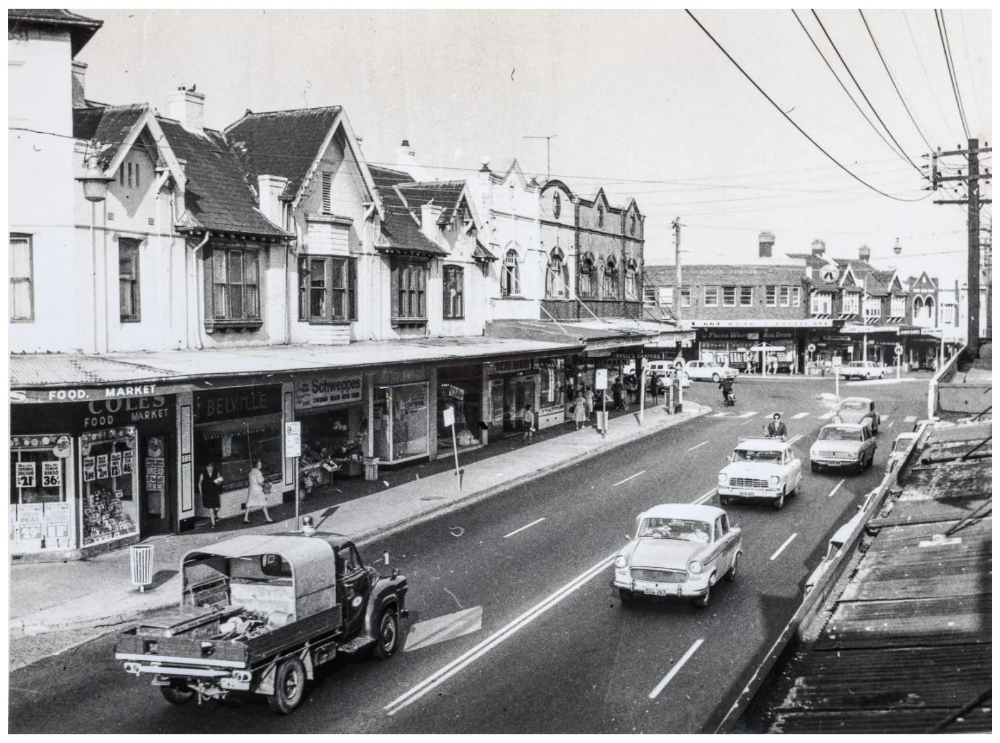
Military Road, near Spit Junction, c.1960s Source: Mosman Library NBRS & PARTNERS Pty Ltd 4 Glen Street Milsons Point NSW 2061 Australia
Telephone +61 2 9922 2344 Email architects@nbrs.com.au
ABN: 16 002 247 565
Nominated Architect Andrew Duffin: NSW Reg No. 5602
This report has been prepared under the guidance of the Expert Witness Code of Conduct in the Uniform Civil Procedure Rules and the provisions relating to expert evidence
This document remains the property of NBRS & PARTNERS Pty Ltd. The document may only be used for the purposes for which it was produced. Unauthorised use of the document in any form whatsoever is prohibited.
ISSUED REVIEW ISSUED BY 2 July 2026 Draft NBRS Heritage 29 July 2026 Revised draft NBRS Heritage 4 August 2026 Final NBRS Heritage
August 2026
Attachment 1.1.4 Mosman Council
Mosman Masterplan—Heritage Review
EXECUTIVE SUMMARY Purpose
This report provides a heritage review of the Mosman Masterplan study area to inform strategic planning for future growth. It assesses the heritage context, reviews the condition and integrity of Heritage Items and Heritage Conservation Areas, evaluates the likely heritage implications of the Masterplan, and identifies measures to conserve heritage significance while accommodating planned housing uplift.
Overall, the Masterplan represents a more heritage-responsive growth strategy than the alternative Low and Mid Rise Housing Policy (LMR), as it concentrates greater change within already modified arterial and commercial corridors and reduces pressure on more intact residential and heritage- sensitive areas. Most Heritage Items reviewed remain sufficiently intact to justify retention of their listings; however, some existing listings, gradings and conservation area boundaries—particularly within the Lang Street and Military Road Heritage Conservation Areas (HCA’s)—require further review to ensure alignment with current integrity, significance and contemporary assessment frameworks. With appropriate heritage controls, context-responsive built form, and detailed design guidance embedded in future planning controls, the Masterplan can support managed growth while maintaining Mosman’s valued heritage character.
Findings and recommendations
• Adopt the Mosman Masterplan approach in preference to the LMR, as it better directs change to locations with a higher tolerance for redevelopment and lower overall heritage sensitivity.
• Maintain the existing listings of Heritage Items and HCA places that remain intact and legible and require new development in their vicinity to respond appropriately to significance, scale, setting and key views.
• Revise the boundaries of the Lang Street HCA and Military Road HCA to remove places that have limited contributory value to the HCA or which have been compromised by unsympathetic changes
• Revise heritage curtilage for Heritage Item Dalton Road (I356) to remove non-intact sections of the road
• Amend the Mosman LEP to reflect revised HCA boundaries and Heritage Item curtilage
• Concentrate taller development along Military Road and Spit Road corridors while ensuring adjoining development areas adopt more recessive, context-responsive built form outcomes.
• Amend the Mosman Development Control Plan to incorporate heritage design guidelines that address height transition, setbacks, interface treatment, curtilage, setting, view protection, materials and streetscape response for sites within the Masterplan area.
• Continue to protect heritage values through the existing planning framework, with Heritage Impact Assessments required as part of the standard Development Application process for proposals that may affect heritage significance.
August 2026
Attachment 1.1.4 Mosman Council
Mosman Masterplan—Heritage Review
CONTENTS
1.0 INTRODUCTION ......................................................................................................................................... 11
1.1 Project background ................................................................................................................. 11 1.2 Mosman Masterplan ............................................................................................................... 11 1.3 Study area and scope.............................................................................................................. 12 1.4 Authorship ................................................................................................................................. 15 1.5 Methodology ............................................................................................................................. 15 1.6 Limitations ................................................................................................................................. 16 1.7 Copyright ................................................................................................................................... 16 1.8 Terminology .............................................................................................................................. 16
2.0 SUMMARY THEMATIC HISTORY ............................................................................................................... 18
2.1 Introduction ............................................................................................................................... 18 2.2 Pre-contact history .................................................................................................................. 18 2.3 Surveying Mosman .................................................................................................................. 19 2.4 Residential development ........................................................................................................ 21 2.5 Commercial development ...................................................................................................... 24 2.6 Education ................................................................................................................................... 27 2.7 Community and recreation .................................................................................................... 27 2.8 Governance and administration ........................................................................................... 30 2.9 Services ...................................................................................................................................... 32 2.10 Religion ...................................................................................................................................... 33
3.0 REVIEW OF HERITAGE PLACES................................................................................................................. 36
3.1 Introduction ............................................................................................................................... 36 3.2 Heritage Items .......................................................................................................................... 39 3.4 Heritage Conservation Areas ................................................................................................. 59
4.0 REVIEW OF MOSMAN MASTERPLAN ........................................................................................................ 85
4.1 Introduction ............................................................................................................................... 85 4.2 Proposed height limits ............................................................................................................ 85 4.3 Spit Junction area .................................................................................................................... 87 4.4 Mosman Bowling Club ........................................................................................................... 90 4.5 Civic precinct ............................................................................................................................ 91
5.0 RECOMMENDATIONS ................................................................................................................................ 93
5.1 Amendments to Mosman Development Control Plan ...................................................... 93 5.2 Amendments to the Mosman Local Environmental Plan ................................................ 93 5.3 Maintain existing Heritage Item listings .............................................................................. 97 5.4 Maintain existing HCA listings............................................................................................... 98
6.0 CONCLUSION ............................................................................................................................................. 99
August 2026
Attachment 1.1.4 Mosman Council
Mosman Masterplan—Heritage Review
LIST OF FIGURES
Figure 1: Map showing the extent of the study area. (Source: SJB map with NBRS overlay) ........................ 12
Figure 2: Map showing the study area in relation to the Mosman Municipality boundary. (Source: SJB map with NBRS overlay) ........................................................................................................................................................ 12
Figure 3: Emerging character areas within the study area (Source: SJB Draft Masterplan) ........................... 13
Figure 4: Plan showing Heritage Items (orange) and Heritage Conservation Areas (hatched orange) in the study area. (Source: NBRS) .......................................................................................................................................... 14
Figure 5: Parish map of Mosman, 1885-1890, showing the early roads in Mosman. (Source: City of Sydney Archives, A-00530180) .................................................................................................................................................. 20
Figure 6: Photograph of Boronia, taken in 1913. (Source: Mosman Council)..................................................... 22
Figure 7: The Lang Estate Subdivision Plan, 1899. (Source: Trace Mosman Digital Archive) ......................... 23
Figure 8: Spit Junction, Mosman, taken in 1908. (Source: Trace Mosman Digital Archive) ............................ 24
Figure 9: Image of Military Road at Spit Junction, taken during Queen Elizabeth II’s visit to Mosman in 1954. Note 557 to 563 Military Road to the left of image. (Source: Trace Mosman Digital Archive) ............ 25
Figure 10: Image of Military Road, near Spit Junction, 1960s. (Source: Trace Mosman Digital Archive) ..... 26
Figure 11: Photograph showing the intersection of the Spit Junction, facing south, ca. 1950s-1960s. (Source: Mosman Local Studies, Mosman Library) ................................................................................................ 26
Figure 12: Mosman Bowling Club, 1947. (Source: Trace Mosman Digital Archive) .......................................... 28
Figure 13: Civic Centre & Square, late twentieth century. (Source: Trace Mosman Digital Archive) ............. 29
Figure 14: The Mosman Council Chambers, opened in 1900, at the corner of Military and Myahgah Roads at Spit Junction, taken in 1900. (Source: Trace Mosman Digital Archive) .......................................................... 30
Figure 15: The Mosman Council Chambers and Town Hall, taken in the 1940s from Myahgah Road. (Source: Trace Mosman Digital Archive) ................................................................................................................... 30
Figure 16: The Mosman Council Chambers and Town Hall, taken in the 1940s, at the corner of Military and Myahgah roads. (Source: Trace Mosman Digital Archive) ..................................................................................... 31
Figure 17: The Mosman Council Chambers and Town Hall, taken in the 1940s, showing the elevation to Military Road. (Source: Trace Mosman Digital Archive) ......................................................................................... 31
Figure 18: Mosman Council Chambers under construction, with the retained interwar portion of the building shown, taken in 1987. (Source: race Mosman Digital Archive) ............................................................. 32
Figure 19: Mosman Council Chambers under construction, with the retained interwar portion of the building shown, taken in 1987. (Source: race Mosman Digital Archive) ............................................................. 32
August 2026
Attachment 1.1.4 Mosman Council
Mosman Masterplan—Heritage Review
Figure 20: Sacred Heart Church, c1911. (Source: Trace Mosman Digital Archive) ........................................... 34
Figure 21: Drawing of the Manse for the Presbyterian church (Scots Church), 1927. (Source: ‘Presbyterian Manse for Mosman’, The Sydney Morning Herald, 24 August 1927, p. 9) .......................................................... 35
Figure 22: 414-416 Military Road. ............................................................................................................................... 39
Figure 23: 485, 485A Military Road. ............................................................................................................................ 40
Figure 24: 23 Melrose Street. ....................................................................................................................................... 40
Figure 25: Oreel, 12A-14 Hale Road, Mosman. ......................................................................................................... 41
Figure 26: The Cottage, 8 Hale Road, Mosman. ....................................................................................................... 41
Figure 27: Central median strip, Lang Street. ........................................................................................................... 42
Figure 28: Row of houses at 8-34 Ourimbah Road. ................................................................................................. 42
Figure 29: View of 8 Ourimbah Road, at the corner of Ourimbah Road and Brady Street. .............................. 42
Figure 30: 60 Ourimbah Road, Mosman. ................................................................................................................... 43
Figure 31: 15 Erith Street. (Source: Google Streetview, 2020) .............................................................................. 43
Figure 32: Attached houses, 33-35 Bond Street, Mosman. .................................................................................... 44
Figure 33: 13 Cardinal Street. ...................................................................................................................................... 44
Figure 34: 15 Cardinal Street. ...................................................................................................................................... 44
Figure 35: 49-49A Prince Street. ................................................................................................................................. 45
Figure 36: 6-6A Harbour Street. ................................................................................................................................... 45
Figure 37: Wudgong Walk. ........................................................................................................................................... 45
Figure 38: Windsor flats at 5 Belmont Road, Mosman. .......................................................................................... 46
Figure 39: Shop residences at 581-595 Military Road, Mosman. ......................................................................... 47
Figure 40: Cowles Road street trees. (Source: Google Maps) ............................................................................... 47
Figure 41: Row of houses at 20-28 Gouldsbury Street. .......................................................................................... 48
Figure 42: Row of houses at 34-40 Gouldsbury Street. .......................................................................................... 48
Figure 43: Leahy memorial. .......................................................................................................................................... 48
Figure 44: Mosman Bowling Club, 15 Belmont Road, Mosman. ........................................................................... 49
Figure 45: Former church at 1 Art Gallery Way, Mosman. ..................................................................................... 49
August 2026
Attachment 1.1.4 Mosman Council
Mosman Masterplan—Heritage Review
Figure 46: Oval at Myahgah Road and The Crescent. ............................................................................................. 50
Figure 47: Mosman Primary School, 2 Gouldsbury Street, Mosman. .................................................................. 50
Figure 48: Side elevation of the Scots Kirk Group, 9 Belmont Road, Mosman. .................................................. 50
Figure 49: Fountain in Mosman Square. ................................................................................................................... 51
Figure 50: 32 Gouldsbury Street, Mosman. .............................................................................................................. 51
Figure 51: War Memorial and steps, Myahgah Road, Mosman. ........................................................................... 52
Figure 52: 624-632 Military Road, Mosman. ............................................................................................................. 52
Figure 53: 89B Cowles Road. ....................................................................................................................................... 53
Figure 54: 42 Spit Road. ................................................................................................................................................ 54
Figure 55: The church building at St Luke's Anglican Group. ................................................................................ 54
Figure 56: The Arts and Crafts hall at St Lukes Anglican Group. .......................................................................... 54
Figure 57: The Rectory at St Luke's Anglican Church Group. ................................................................................ 54
Figure 58: Principal elevation. (Source: Realestate.com.au, 2026) ...................................................................... 55
Figure 59: Electrical Substation No. 204. .................................................................................................................. 55
Figure 60: 68 Spit Road. ................................................................................................................................................ 56
Figure 61: Former house now flats. ............................................................................................................................ 56
Figure 62: Portion of concrete kerb on Spit Road. ................................................................................................... 56
Figure 63: Portion of the surviving concrete road at the eastern termination of Dalton Road. ...................... 56
Figure 64: 4 Punch Street. ............................................................................................................................................ 57
Figure 65: 47 Moruben Road. ...................................................................................................................................... 57
Figure 66: Moruben Road. ............................................................................................................................................ 58
Figure 67: Bapaume Road. ........................................................................................................................................... 58
Figure 68: Killarney Street. ............................................................................................................................................ 58
Figure 69: Killarney Estate HCA rankings map, with the subject site included in the Masterplan area outlined in red. (Source: Mosman Council) ............................................................................................................... 59
Figure 70: Aerial photograph showing Killarney Estate HCA (red outline) and the portion which overlaps with the Masterplan area. (Source: Nearmap with NBRS edits) ........................................................................... 60
August 2026
Attachment 1.1.4 Mosman Council
Mosman Masterplan—Heritage Review
Figure 71: Portion of Dalton Road included in Killarney Estate HCA, views from Spit Road facing west. (Source: Google Maps).................................................................................................................................................. 60
Figure 72: Portion of Dalton Road included in Killarney Estate HCA, views from Dalton Road facing east. (Source: Google Maps).................................................................................................................................................. 60
Figure 73: Portion of original concrete surfaced road that has been retained at the eastern end of Dalton Road. (Source: Google Maps) ...................................................................................................................................... 61
Figure 74: The public recreation reserve between Dalton and Spit Roads. (Source: Google Maps) .............. 61
Figure 75: Original layout of Dalton Road with concrete road surface. The location of the pedestrian through-link is outlined in blue. (Source: NSW Spatial Services, Historical Imagery) ....................................... 62
Figure 76: Lang Street HCA layout map. (Source: Mosman Council LEP with NBRS edits) ............................ 63
Figure 77: Lang Street, mid section, facing south towards Military Road. ......................................................... 64
Figure 78: Lang Street, north end, facing south from Ourimbah Street. ............................................................. 64
Figure 79: Aerial photograph showing the central and northern portions of the Lang Street HCA. (Source: Nearmap with NBRS edits) .......................................................................................................................................... 65
Figure 80: Row of Contributory-2 houses at 41-49 Lang Street, northern section of the HCA. ...................... 65
Figure 81: Pair of Contributory-1 houses at 20 and 22 Lang Street, mid section of the HCA. ........................ 65
Figure 82: Contributory-1 house, 26 Lang Street. .................................................................................................... 66
Figure 83: Divided road at north end of Lang Street. .............................................................................................. 66
Figure 84: Aerial view showing the southern portion of the Lang Street HCA. (Nearmap with NBRS edits)66
Figure 85: Contributory-1 graded 522 and 524 Military Road. .............................................................................. 67
Figure 86: Shop fronts to 522-524 Military Road. .................................................................................................... 67
Figure 87: Detracting development at 2 Lang Street, Mosman. ........................................................................... 67
Figure 88: Warehouse at rear of 522-524 Military Road, fronting Lang Street, Mosman. ................................ 67
Figure 89: Neutral-4 place, 11 Lang Street. ............................................................................................................... 68
Figure 90: Neutral-4 place, 15 Lang Street. ............................................................................................................... 68
Figure 91: Neutral-4 place, 17 Lang Street. ............................................................................................................... 68
Figure 92: Neutral-4 place, 19, 19A Lang Street. ...................................................................................................... 68
Figure 93: Contributory-1 place, 1 Lang Street. ........................................................................................................ 68
Figure 94: Contributory-1 place, 3 Lang Street. ........................................................................................................ 68
August 2026
Attachment 1.1.4 Mosman Council
Mosman Masterplan—Heritage Review
Figure 95: Contributory-2 place, 5 Lang Street. ........................................................................................................ 69
Figure 96: Contributory-2 place, 7 Lang Street. ........................................................................................................ 69
Figure 97: Recommended amendment to the Mosman LEP, Lang Street HCA. ............................................... 71
Figure 98: Extract from the Military Road HCA ranking map, 2017. Sections of the HCA outlined in red are included in the study area (Source: Mosman Council LEP with NBRS edits) ..................................................... 73
Figure 99: View of the Spit Junction, facing south towards the entrance of the Military Road corridor. ..... 74
Figure 100: Row of shopfronts at the Military Road intersection, included in the Military Road HCA. ......... 74
Figure 101: View of shopfronts fronting Spit Junction, included in the Military Road HCA. ........................... 74
Figure 102: Facing southwest from the Spit Junction, showing the Bridgepoint elevated walkway.. .......... 74
Figure 103: Southwestern corner, northern portion of the Military Road HCA. (Source: Nearmap with NBRS edits) ................................................................................................................................................................................. 75
Figure 104: 557 Military Road. ..................................................................................................................................... 75
Figure 105: 559 (right) and 561 (left) Military Road. ............................................................................................... 75
Figure 106: 563 (right) and 565 (left) Military Road. ............................................................................................... 76
Figure 107: 567 (right) and 571 (left) Military Road. ............................................................................................... 76
Figure 108: View of the Municipal Council Building, facing southwest from Military Road. ........................... 76
Figure 109: Municipal Council building entrance, linking the interwar council building and 1980s additions. ........................................................................................................................................................................................... 76
Figure 110: Southeastern corner of intersection, northern portion of the Military Road HCA. (Source: Nearmap with NBRS edits) .......................................................................................................................................... 77
Figure 111: 668 Military Road, Mosman. ................................................................................................................... 78
Figure 112: 670-672 Military Road, Mosman. ........................................................................................................... 78
Figure 113: 674-676 Military Road, Mosman. ........................................................................................................... 78
Figure 114: 678 Military Road, Mosman. ................................................................................................................... 78
Figure 115: Central portion, Military Road HCA. (Source: Nearmap with NBRS edits) ..................................... 82
Figure 116: View of north end of the HCA portion, the terracotta tiled roof building on the corner is 713-715 Military Road. .................................................................................................................................................................. 83
Figure 117: View of central portion of Military Road, from left to right – 743, 741, 739, 737 Military Road. 83
Figure 118: from left to right, 719, 717 and 713 Military Road. ............................................................................. 83
August 2026
Attachment 1.1.4 Mosman Council
Mosman Masterplan—Heritage Review
Figure 119: 735 Military Road. ..................................................................................................................................... 83
Figure 120: 741 Military Road. ..................................................................................................................................... 84
Figure 121: 733-739 Military Road, Mosman. ........................................................................................................... 84
Figure 122: Recommended amendment to the Mosman LEP, Military Road HCA. .......... Error! Bookmark not defined.
Figure 123: Extract from the Masterplan with stars identifying key sites. (Source: SJB Architects 2026) .. 87
Figure 124: Aerial photograph showing the northern side of the Spit Junction. (Source: Nearmap with NBRS edits) ..................................................................................................................................................................... 88
Figure 125: Aerial photograph showing the southeastern intersection of Spit Junction. (Source: Nearmap with NBRS edits) ............................................................................................................................................................ 89
Figure 127: Aerial photograph of the Mosman Bowling Club. (Source: Nearmap with NBRS edits) ............. 91
Figure 128: Aerial photograph of the Mosman Civic Centre. (Source: Nearmap with NBRS edits) ............... 92
Figure 129: Recommended amendment to the curtilage for I356 Dalton Road. (Source: Mosman LEP Heritage Map 002 with NBRS edits) ........................................................................................................................... 94
Figure 130: Recommended amendment to the Mosman LEP for the Lang Street HCA. ................................. 95
Figure 131: Recommended amendment to the Mosman LEP for the Military Road HCA. .............................. 96
August 2026
Attachment 1.1.4 Mosman Council
Mosman Masterplan—Heritage Review
1.0
INTRODUCTION
1.1 PROJECT BACKGROUND NBRS was engaged by SJB Architects to provide heritage advice following a review of their Mosman Masterplan concept design. The review has been driven by the Mosman Masterplan long-term strategic planning framework which seeks to provide an alternative to the NSW State Government's Low and Mid-Rise (LMR) Housing policy for Mosman.
This report has been prepared following a review of heritage places within the Mosman Masterplan area of change. It evaluates the study area’s heritage values and tolerance for change, recognising that Mosman Council is required to meet ambitious housing mandates from the NSW Government.
The review examines the heritage context of the area and seeks to: • Identify key historical themes and phases of development within the study area • Evaluate the current condition, integrity and setting of identified heritage assets • Review the Mosman Masterplan concept design and provide feedback on its overall intent and strategic approach from a heritage perspective • Evaluate the status of existing heritage listings in relation to Masterplan objectives and focused areas of change • Establish design guidelines to ensure that new development responds appropriately to the heritage values and character of each distinct precinct.
1.2 MOSMAN MASTERPLAN In March 2026, Council reached an in-principle agreement with the Department of Planning, Housing and Infrastructure on the housing capacity to be delivered through the Mosman Masterplan. The agreement requires the Masterplan to accommodate approximately 950,000 square metres of gross floor area, equating to around 4,700 deliverable dwellings, calculated using an average dwelling size and excluding certain sites such as Heritage Items. This level of growth is intended to occur progressively over time.
The Mosman Masterplan concept design has been developed as an alternative to the State Government’s Low and Mid-Rise Housing Policy (LMR), while still meeting the State-mandated development capacity. The concept focuses increased building heights at Spit Junction and along the Spit and Military Road corridor, thereby redirecting development away from sensitive and more constrained locations including Heritage Conservation Areas.
While both the LMR policy and the Masterplan must deliver equivalent development capacity, the Masterplan seeks to manage the impacts of growth by minimising adverse effects on heritage significance. The approach reduces impacts on Heritage Conservation Areas, while recognising that some Heritage Items, particularly along Military Road and adjoining streets, may experience changes in scale and built form. The Masterplan includes measures to protect heritage values through controls for curtilage, setting, setbacks, height transitions, and interface design, and requires new development to respond to and celebrate local heritage in a respectful and enduring manner.
August 2026
Attachment 1.1.4 Mosman Council
Mosman Masterplan—Heritage Review
1.3 STUDY AREA AND SCOPE
1.3.1 MASTERPLAN AREA OF CHANGE The Masterplan introduces targeted Medium Density Residential (R4) development uplift along the Military Road corridor. It also encompasses Employment zoned land (E1 and E3) directly fronting Military Road and Spit Road, as well as Low Density Residential areas (R2).
The Masterplan area roughly follows the course of Military Road, commencing at the intersection at Lindsay Lane at the southernmost point, continuing northward along Spit Road until its junction with Bickell Road. In the southern half, the extent of coverage extends westward to the intersection of Ourimbah Road and Macpherson Street, and eastward to Military Road and Belmont Road junction.
Figure 1: Map showing the extent of the study area. (Source: SJB map with NBRS overlay)
Figure 2: Map showing the study area in relation to the Mosman Municipality boundary. (Source: SJB map with NBRS overlay)
August 2026
Attachment 1.1.4 Mosman Council
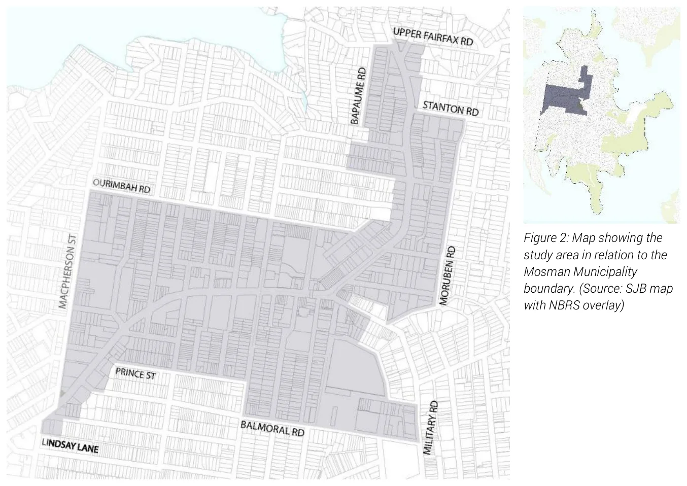
Mosman Masterplan—Heritage Review
1.3.2 DISTINCT CHARACTER AREAS The Masterplan has identified eight distinct character areas within the area of change (Figure 3). Each of these areas will experience change resulting from future development growth.
A key objective of the Masterplan is to achieve a contextually appropriate built form outcome for each distinct area. From a heritage perspective, it will be necessary to identify the unique heritage values associated with each area and the desired architectural response.
The distinct character areas will each have specific height limits and desired built form outcomes, informed by existing conditions and heritage character.
Figure 3: Emerging character areas within the study area (Source: SJB Draft Masterplan)
August 2026
Attachment 1.1.4 Mosman Council
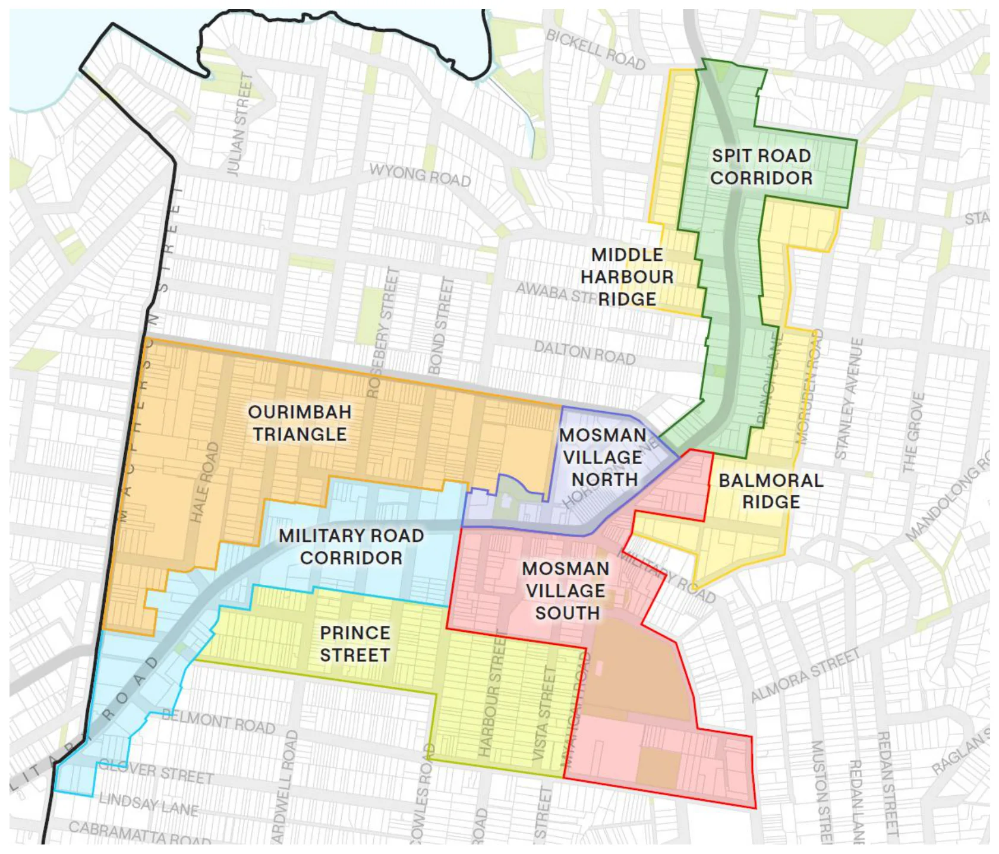
Mosman Masterplan—Heritage Review
1.3.3 HERITAGE ITEMS IN THE STUDY AREA The study area includes approximately 43 individual Heritage Items and 65 properties located within Heritage Conservation Areas, specifically C6 Lang Street and C7 Military Road. A portion of the C2 The Crescent HCA and C5 Killarney Estate HCA curtilage also extends into the study area; however, no identified buildings are included in the overlapping areas.
The heritage assets reflect a diverse range of typologies—including residential, commercial, civic and religious buildings, substations, trees, open space and recreational areas, memorials, fountains and hard landscaping elements.
Figure 4: Plan showing Heritage Items (orange) and Heritage Conservation Areas (hatched orange) in the study area. (Source: NBRS)
August 2026
Attachment 1.1.4 Mosman Council
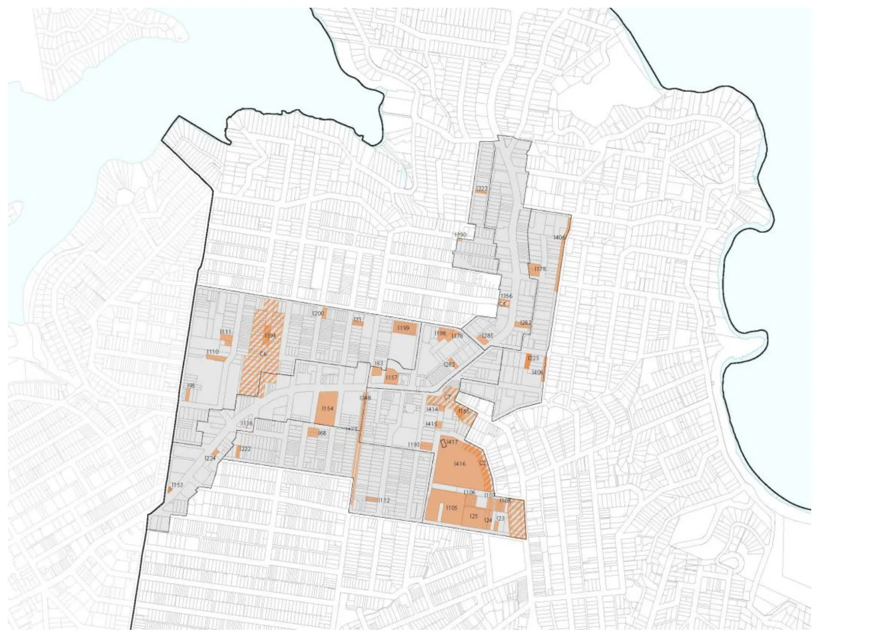
Mosman Masterplan—Heritage Review
1.4 AUTHORSHIP This report has been prepared by NBRS Heritage.
1.5 METHODOLOGY This Heritage Review report has been prepared in accordance with the guidelines set out in the Australia ICOMOS Charter for Places of Cultural Significance, 2013, known as The Burra Charter, and the New South Wales Heritage Office (now the Heritage Division of the NSW Office of Environment and Heritage) publication, NSW Heritage Manual.
1.5.1 BACKGROUND REVIEW The project team undertook a comprehensive review of heritage places listed in the study area, including a review of the Mosman LEP, NSW State Heritage Inventory and previous heritage studies and reviews, such as:
• Mosman Heritage Review, Godden Mackay Heritage Consultants, 1996 • Glover Street Mosman Heritage Assessment, City Plan Heritage, 2003 • Belmont and Cabramatta Roads Mosman Conservation Area Study, City Plan Heritage, 2004 • Mosman Municipal Council—Fences and folly features, DEM, 2004 • Mosman Heritage Review, Paul Davies Pty Ltd, 2007.
1.5.2 HISTORICAL RESEARCH A summary thematic history was prepared utilising existing documentary sources. The history identifies relevant themes to the area’s history, based on the NSW Historical Thematic Framework. Some targeted historical research was undertaken to understand the development of key sites in the study area.
1.5.3 SITE VISITS NBRS undertook a survey of the study area in May 2026 to assess and document the physical and visual attributes of heritage places and settings within the study area. The purpose of the survey was to confirm the description, relationship and integrity of heritage buildings, spaces and views and record these via notes and photography.
1.5.4 MOSMAN MASTERPLAN WORKSHOPS NBRS participated in a series of design workshops hosted by SJB Architects and attended by Mosman Council as part of the development of the Mosman Masterplan concept design.
1.5.5 HERITAGE GUIDELINES Heritage advice provided in this report follows the principles set out in The Burra Charter: The Australia ICOMOS Charter for places of cultural significance (Australia ICOMOS, 2013).
Review of gradings have been based on the Mosman HCA ranking criteria set out in the Mosman DCP 2012.
The design guidelines follow best practice approaches supported in the Design Guide for Heritage (Heritage Council of NSW, 2019).
August 2026
Attachment 1.1.4 Mosman Council
Mosman Masterplan—Heritage Review
1.6 LIMITATIONS The survey of heritage assets in the study area was undertaken via an onsite visual inspection from the public domain and desktop surveys utilising online sources, such as Nearmap aerial imagery and Google Streetview maps. Recent real estate photography and historic photographs were also viewed during the research phase. No building interiors were inspected.
The assessment provided in this report has been prepared from a heritage perspective, having regard to relevant planning provisions relating to heritage policy only. Aboriginal cultural heritage, archaeological and environmental matters are outside the scope of this assessment.
Identification of places of potential heritage significance did not form part of the scope of this report. Detailed significance assessments were not undertaken for the re-evaluation of existing listings.
1.7 COPYRIGHT Copyright of this report remains with the author, NBRS. Unless otherwise noted, all images are by the author.
1.8 TERMINOLOGY The following tables outline abbreviations and key technical terms and acronyms used in this report to improve clarity and reduce repetition.
1.8.1 ABBREVIATIONS DCP Development Control Plan
HCA Heritage Conservation Area
LEP Local Environmental Plan
LMR Low and Mid-Rise (LMR) Housing Policy
SoS Statement of Significance
1.8.2 DEFINITIONS The following definitions have been sourced from The Burra Charter: the Australia ICOMOS Charter for Places of Cultural Significance, 2013 and the NSW Heritage website.
Adaptation means changing a place to suit the existing use or a proposed use.
Cultural significance
means aesthetic, historic, scientific, social or spiritual value for past, present or future generations. Cultural significance is embodied in the place itself, its fabric, setting, use, associations, meanings, records, related places and related objects. Places may have a range of values for different individuals or groups
Fabric means all the physical material of the place including elements, fixtures, contents and objects.
August 2026
Attachment 1.1.4 Mosman Council
Mosman Masterplan—Heritage Review
Heritage curtilage the defined area of land surrounding a building or item of heritage significance, which is essential for retaining its setting, context, and interpreting its importance.
Intactness the physical condition, original fabric, and completeness of a Heritage Item, acting as a key indicator of its heritage significance.
Integrity the degree to which a Heritage Item, place, or object remains intact and is able to communicate its historic significance.
Place a geographically defined area. It may include elements, objects, spaces and views. Place may have tangible and intangible dimensions.
Setting means the immediate and extended environment of a place that is part of or contributes to its cultural significance and distinctive character.
August 2026
Attachment 1.1.4 Mosman Council
Mosman Masterplan—Heritage Review
2.0
SUMMARY THEMATIC HISTORY
2.1 INTRODUCTION Heritage studies and reviews are typically supported by a thematic history—a history which organises the past by specific themes rather the focusing solely on chronological order. The thematic history provides a framework for investigating and identifying heritage places within a locality.
Local themes are correlated with national and state themes as set out in the New South Wales Historical Themes framework (2001).
Several of the NSW themes are relevant to Mosman’s development and history and are discussed in the sections below.
2.2 PRE-CONTACT HISTORY The area that now encompasses Mosman included the land of the Cammeray, with the people who lived on this land known as the Cammeragal (also known as Cammeraygal or Gamaragal) people, and the Borogegal people, located to the western side of Middle Harbour.
The people residing around Port Jackson relied on fishing, a variety of marine animals and the hunting of land animals, as well as the gathering of plants, shellfish and birds’ eggs.1 The land and waters of Mosman supplied a wide variety of fish, plants and animals for the Cammeragal and Borogegal peoples, who relied on these resources for food, medicines and raw materials.2 The First Nations groups living in the area were noted to use a variety of different shelters, including rock shelters and small structures built from bark, branches, bushes, and cabbage tree leaves.3 Movement throughout the land would have been based on the seasonal availability of resources, as well as on the ceremonial, social and spiritual obligations of the persons.4
Interactions between Aboriginal groups in Mosman and European colonialists occurred soon after the landing of the First Fleet arrived in Sydney Cove in January 1788, when the shoreline of Mosman was mapped by European settlers.5 Soon after these encounters, diseases such as smallpox spread through the Aboriginal communities, killing many. The Cammeragal, and the Borogegal people were soon pushed from their land, as European colonialists began to occupy the area, prohibiting access to resources amid growing tensions.
Later, in 1815, Governor Macquarie attempted to establish a farming community in Middle Head with some of the remaining Aboriginal people.
By the 1860s, records suggest that there were very few of the Indigenous inhabitants from the shores of Port Jackson living in Sydney town or the nearby areas. Those who had remained had been incorporated into a British colonial life.
Despite the devastation wrought by colonisation, and the generational impacts arising from this, the Borogegal and Cammeragal people maintain a strong living connection to this part of Country. Mosman’s exceptional Aboriginal archaeological heritage, including numerous
1 AMBS Consulting, ‘Final Report volume 4: Public Document’, Aboriginal Heritage Study of the Mosman Local Government Area, September 2005, p.25. 2 Ibid. 3 Ibid, p.37. 4 Ibid, p.25. 5 Ibid, p. 18.
August 2026
Attachment 1.1.4 Mosman Council
Mosman Masterplan—Heritage Review
shell middens and an impressive range of rock art around the shoreline, is testament to the area’s occupation extending back through deep time. Descendants and contemporary Aboriginal community members maintain a connection to Country through continued cultural practices and care of sacred sites.
2.3 SURVEYING MOSMAN Generally, the early European activity associated with the Mosman area was linked with the whaling industry or military use, with very little residential development occurring prior to the 1880s.6 As such, the earliest subdivisions in Mosman did not occur until the 1880s. These early subdivisions were located mainly to the northeast of Mosman’s Bay, in the area surrounding Avenue and Military roads.7 Following these initial subdivisions, the land covering Glover Street was subdivided.
The initial development of roads in Mosman was fairly haphazard and developed to meet the immediate needs of settlers. The earliest roads in Mosman were Military and Avenue roads, with the original township roads towards Mosman Bay, which were present prior to the 1880s.8 Avenue Road was built first in about 1860, with Military, Middle Head and Bradleys Head roads constructed about ten years later.9
Between the 1870s through to the 1910s, business partners Richard Harnett Senior and Alexander Stuart were acquiring land at Mosman, which they consolidated and subdivided for residential development.10 As early as 1870, Harnett had hired a surveyor, W.M. Brownrigg, to plan the layout of the subdivisions and roads; there was no attempt at this time to apply any town planning principles, with Mosman’s difficult terrain largely impacting the design of the roads.11 As part of the early subdivisions, early public infrastructure in Mosman such as roads, a horse-drawn bus services, the wharfing and ferry services were developed by Harnett, linking Mosman to the city. Brownrigg surveyed the subdivision for suburban lots at Mosman Junction.12
Harnett had employed men to clear the bushland and complete Avenue Road from Mosman Bay to his subdivision at Mosman Junction. While Military Road was maintained in a good condition over the late nineteenth century, others were not with Harnett continuing to organise for road construction.13
6 City Plan Heritage, Glover Street, Mosman Heritage Assessment, September 2003, p.4. 7 Ibid. 8 Ibid. 9 Mosman Council, ‘A Brief History of Mosman’, Mosman Council, 2022, https://mosman.nsw.gov.au/community/people-culture-and- history/a-brief-history-of-mosman, accessed 7 April 2026. 10 Ibid, p.5. 11 ‘Brief History of Mosman and its Streets’, Mosman Memories, https://mosmanmemories.net/about/15/brief-history-of-mosman-and- its-streets, accessed 7 April 2026. 12 Otto Cserhalmi & Partners Architects, Boronia & Surrounds, Mosman Conservation Management Plan, March 2008, p.18. 13 Ibid.
August 2026
Attachment 1.1.4 Mosman Council
Mosman Masterplan—Heritage Review
Figure 5: Parish map of Mosman, 1885- 1890, showing the early roads in Mosman. (Source: City of Sydney Archives, A- 00530180)
The early roads in Mosman were unsealed, with no consideration given to surfacing, drainage or grading. With the creation of the municipality in 1893, works on surfacing roads began, and Raglan Road was surfaced in the same year. Despite this, the guttering and surfacing of roads remained an issue in Mosman as difficulties persisted on the best material for the road surfacing.
In 1919, Jack Tonkin, an engineer at Mosman Council, suggested the use of concrete with bitumen to coat the surface, which was adopted by the Council.14 The first roads in Mosman to be concreted were Dalton Road and Medusa Street. With this began an extensive program of road building in Mosman during the 1920s and 1930s,15 which included the concreting of Military and Spit roads in the early to mid-1920s.16 In the 1930s, State Government funds for
14 ‘Brief History of Mosman and its Streets’, Mosman Memories. 15 Ibid. 16 ‘Concreting Military Road’, The Sun, 18 June 1924, p.12; ‘New Spit Road’, The Sun, 19 October 1923, p.11.
August 2026
Attachment 1.1.4 Mosman Council
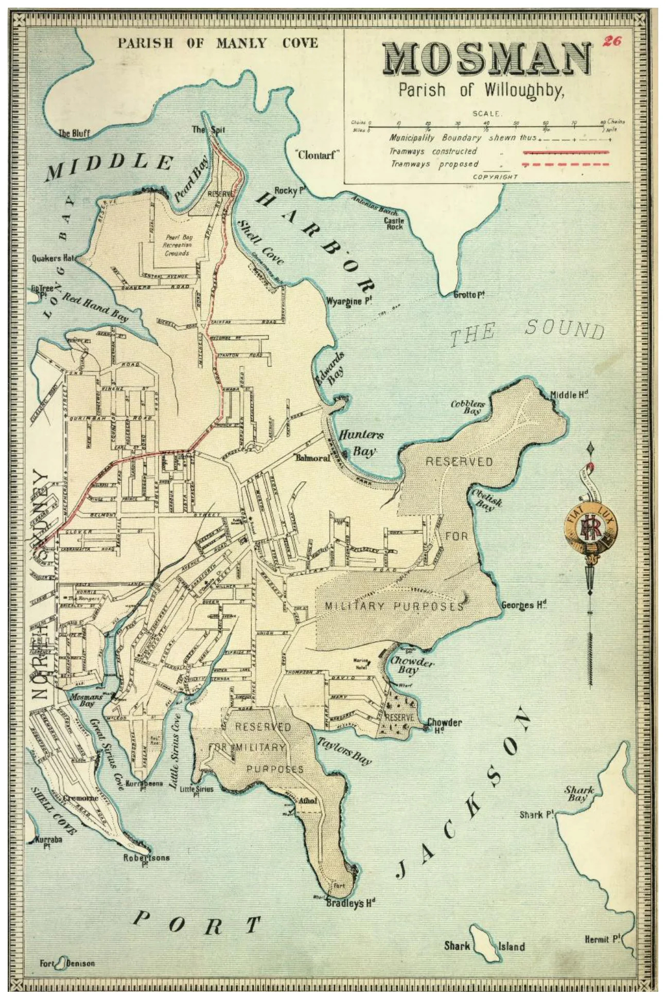
Mosman Masterplan—Heritage Review
unemployment relief were used by the Mosman Council to hire unemployed men to widen, extend and resurface roads.17 By the end of the 1930s, roads, kerbs and gutters were nearly completed.18
Alongside the road building that occurred in the interwar years, Mosman Council undertook a program of beautification in Mosman in the 1920s, planting trees, palms, and grass to the footpaths in front of homes.19 Across the municipality, 500 trees each year were planted; at this time, Council’s preferred choice was for the planting of West Australian flowering gums.20
After the tram services along Military Road ceased in 1958, the tram tracks were removed to provide four lanes of traffic. This included the widening of the road in certain places, including the Sacred Heart Convent and Marist Brothers school, both of which lost considerable depth to their frontages.21 Two more lanes have since been added.22
Mosman Council undertook major drainage works in the 1960s to amplify the then existing drainage in the area.23 These works were required to meet the extensive development that had occurred since the original drains were constructed. Street beautification in the form of planting trees also continued in the 1960s.24
2.4 RESIDENTIAL DEVELOPMENT By 1800, the granting of some land at Mosman had commenced, however, given the remote locality from Sydney Cove and the difficult terrain of the area, the land was not readily taken up.25 Early speculative subdivisions in the late 1830s were attempted and offered for sale, though no lots were purchased.26
Generally, the early European activity associated with the Mosman area was linked with the whaling industry or military use, though whaling had declined by the mid-nineteenth century. From about this time, land grants in the area were taken up, though little settlement occurred at this time due mainly to the rugged terrain of the area.
By the 1870s and 1880s, various country estates had been established in the Mosman area. Amongst some of the remnant estates still present from this period is Boronia (I157) at 624 Military Road, and Telopea (‘the Whitehouse’ at 89B Cowles Road, I83). Boronia and Telopea, being two large two-storey Victorian mansions, were built in 1886 by John and James Kearey who were well-known coachbuilders from Redfern.27 Designed as grand villas with extensive gardens, the mansions are attributed as the work of prolific Sydney architects Sheerin and Hennessy.28 It is believed that the stone used in the building of the villas was quarried locally.29
17 Ibid. 18 Gavin Souter, Mosman: A History, Xoum Publishing, 2012 19 ‘Street Beautification- Mosman’s Example’, The Maitland Daily Mercury, 31 May 1922, p.4. 20 ‘Mosman’s Streets Beautified by Trees’, The Daily Telegraph, 28 December 1926, p.7. 21 Margaret Holmes, ‘Shops and Docs on Mosman’s High Street’, Mosman Memories, October 2010, https://mosmanmemories.net/story/160/shops-and-docs-on-mosmans-high-street, accessed 08 April 2026 22 Holmes, ‘Shops and Docs on Mosman’s High Street’. 23 Council Pamphlet, ‘Drainage Works’, February 1965, in A. E Collins Scrapbook, 1955-1987, accessed from Trace Mosman Digital Archive, accessed 21 April 2026. 24 Ibid. 25 City Plan Heritage, Belmont and Cabramatta Roads, Mosman Conservation Area Study, December 2004, p.4. 26 Ibid. 27 Cserhalmi & Partners Architects, Boronia & Surrounds, Mosman Conservation Management Plan, p.26. 28 Ibid, p.27. 29 Ibid.
August 2026
Attachment 1.1.4 Mosman Council
Mosman Masterplan—Heritage Review
Figure 6: Photograph of Boronia, taken in 1913. (Source: Mosman Council)
From the late nineteenth century, country estates in Mosman were being acquired and consolidated by Richard Harnett Senior and his business partner Alexander Stuart, after which the land was subdivided and sold. Harnett, an Irish migrant born in 1819, was instrumental in the creation of the municipality through his acquisition, consolidation, and subdivision of land. Harnett’s subdivisions were underpinned by his initial improvements in transport and services, which encouraged development.
In the mid to late 1890s, a residential building boom began in Mosman, most likely due to the extension of the tram services from North Sydney. With easier access provided to the area, interest had grown in the residential development of Mosman, which experienced its first building boom in the Federation period. This boom at the turn of the century has resulted in a large Federation overlay.
Lang Street, Mosman was established in 1899 as part of the Lang Estate (Lang Street HCA – C6). The sale of lots occurred over the early to mid-1900s, with the first sales held in 1899.30 Further sales occurred in January 1901 and November 1905.31 Buildings in the estate were to be constructed soon afterwards, resulting in the Federation character of the street.32 The portion of Lang Street south of Military Road was renamed ‘Snell Street’ in 2010.
30 ‘The Property Market’, The Daily Telegraph, 16 January 1901, p. 9. 31 ‘Mosman Park Oval Fete’, Mosman, Neutral and Middle Harbour Resident, 2 December 1905, p. 7. 32 Ibid,
August 2026
Attachment 1.1.4 Mosman Council
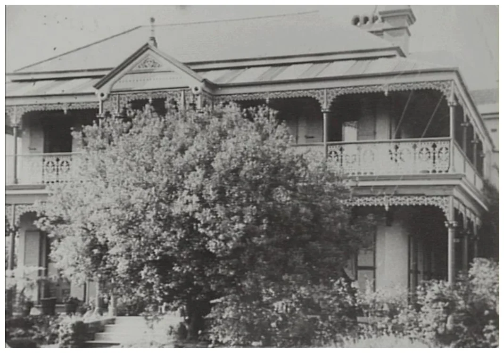
Mosman Masterplan—Heritage Review
Figure 7: The Lang Estate Subdivision Plan, 1899. (Source: Trace Mosman Digital Archive)
Over the 1920s and 1930s, Mosman underwent another boom in residential development, one that slowed down with the Depression and the start of the Second World War.33 This development was marked by denser residential construction and early apartment blocks.34 An example of this flat development is Clumba Court (I224), 66B Prince Street, a two-storey clinker brick block of flats that was built in 1935. Another example is the ‘Windsor Flats’ (I23) located at 5 Belmont Road, which may have been constructed around 1925.35 The construction of blocks of flats was considered at the time to be out of harmony with the prevailing character of the municipality, which comprised detached housing within garden settings.36
During the 1950s and 1960s, the construction of residential flat developments increased rapidly to meet the housing demand of the expanding postwar population of the municipality.37 Generally, these early flats were low in scale, being usually three storeys in height. Public concern rose at this time regarding the flat developments, with Council controls and restrictions introduced in the late 1960s to curb over-development. However, by the end of the 1960s at least 22 high-rise buildings were constructed in Mosman, mostly to eight-storeys in height.38 By 1973, high-rise development was banned.39 The number of flats constructed continued to rise over the 1980s, before falling in the early 1990s.40
Since the late twentieth century, Mosman has undergone development at an increased scale. This was partly reflected in the construction of large new residences, often termed ‘megahouses’, houses designed specifically to convey a sense of grandeur and often significantly out of scale with neighbouring dwellings.41
33 Souter, Mosman: A History. 34 Ibid. 35 ‘’Windsor’ Flat’, State Heritage Inventory, Heritage Item ID: 2060043, https://www.hms.heritage.nsw.gov.au/App/Item/ViewItem?itemId=2060043, accessed 21 April 2026. 36 Ibid. 37 Mosman Council, ‘A Brief History of Mosman’. 38 Souter, Mosman: A History. 39 Ibid. 40 Ibid. 41 Ibid.
August 2026
Attachment 1.1.4 Mosman Council
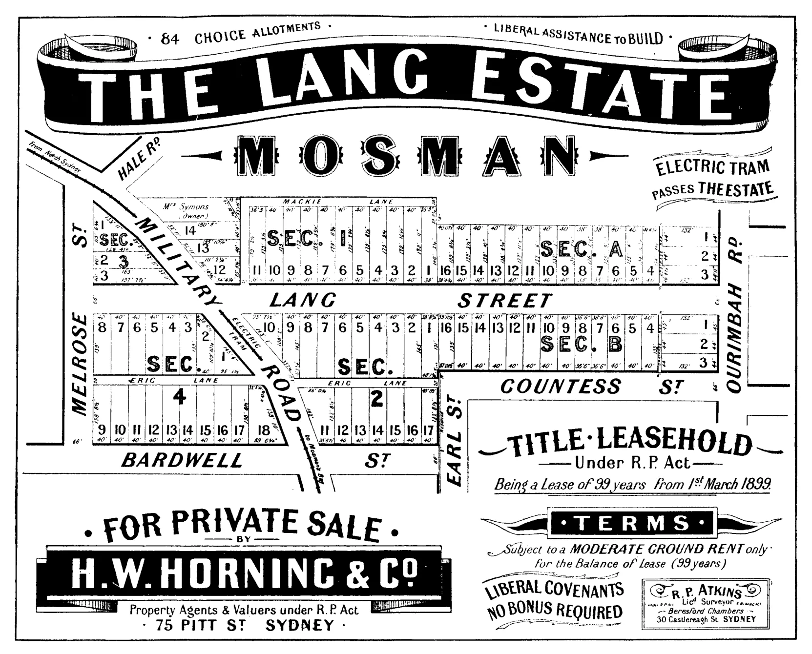
Mosman Masterplan—Heritage Review
2.5 COMMERCIAL DEVELOPMENT With the establishment of Military Road in 1871, this roadway emerged as a major thoroughfare in Mosman. Over the early to mid-twentieth century, substantial commercial and business-related development occurred along Military Road.42 A variety of shops, services and businesses were developed along Military Road, servicing the local community that formed.
Over the late nineteenth and early twentieth century, commercial development was concentrated around the two junctions, being Spit Junction as well as the junction further along Military Road where it adjoins Raglan and Prince Albert streets and Bradleys Head and Georges Heights roads (Mosman Junction).43 At around this time, most of the commercial activity at Spit Junction was located on the southern side of Military Road.44 The north side of Spit Junction was subdivided in 1902. As such, Spit Junction emerged from about this time as the primary commercial area of Mosman. Groups of shops were built at this time to or near Spit Junction, such as the group of eight shops (I155) to 581-595 Military Road, which were built around 1899-1900 to designs by H. A. Kean.45 The construction of groups of commercial premises simultaneously has result in sections of shops at Spit Junction or along Military Road that share an architectural style or detailing. It was common for early commercial premises at Spit Junction or along Military Road to be constructed with a shop to the ground floor and residences above at the first floor.
Figure 8: Spit Junction, Mosman, taken in 1908. (Source: Trace Mosman Digital Archive)
Commercial development also continued along Military Road over the early twentieth century. A bank building was constructed to the northeastern corner of Macpherson Street and Military Road in 1921 for the Government Savings Bank of NSW at a cost of £6,000.46
42 Holmes, ‘Shops and Docs on Mosman’s High Street’. 43 Souter, Mosman: A History. 44 Souter, Mosman: A History. 45 ‘8 Shops with Dwellings Above’, State Heritage Inventory, Heritage Item ID: 2060281, https://www.hms.heritage.nsw.gov.au/App/Item/ViewItem?itemId=2060281, accessed 21 April 2026. 46 Sands Sydney, Suburban and Country Commercial Directory, 1925, p. 510, accessed from the City of Sydney Archive; ‘Commercial Building Former Bank’, State Heritage Inventory, Heritage Item ID: 2060286, hms.heritage.nsw.gov.au/App/Item/ViewItem?itemId=2060286, accessed 21 April 2026
August 2026
Attachment 1.1.4 Mosman Council
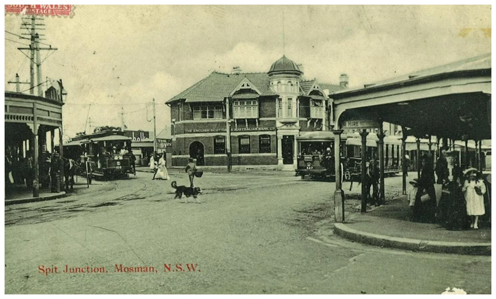
Mosman Masterplan—Heritage Review
After the Government Bank amalgamated with the Commonwealth Bank, the building was occupied by a Commonwealth Bank branch.
Over the mid to late twentieth century, commercial development continued to grow along Military Road, particularly to Spit Junction and Mosman Junction. However, this development was impacted by alterations to the main roadways. When Spit Road was widened to help ease the heavy traffic, numerous buildings had to be demolished, which negatively impacted the commercial activity of the street. In response, Council attempted to revitalise Spit Junction during the 1970s and 1980s with several major developments, such as The Garrison (corner of Spit Road and Punch Road) in 1973, and the redevelopment of the area between Military Road and the Crescent in the late 1970s. This later development included a new library, ten shops, and five flats.
Figure 9: Image of Military Road at Spit Junction, taken during Queen Elizabeth II’s visit to Mosman in 1954. Note 557 to 563 Military Road to the left of image. (Source: Trace Mosman Digital Archive)
August 2026
Attachment 1.1.4 Mosman Council
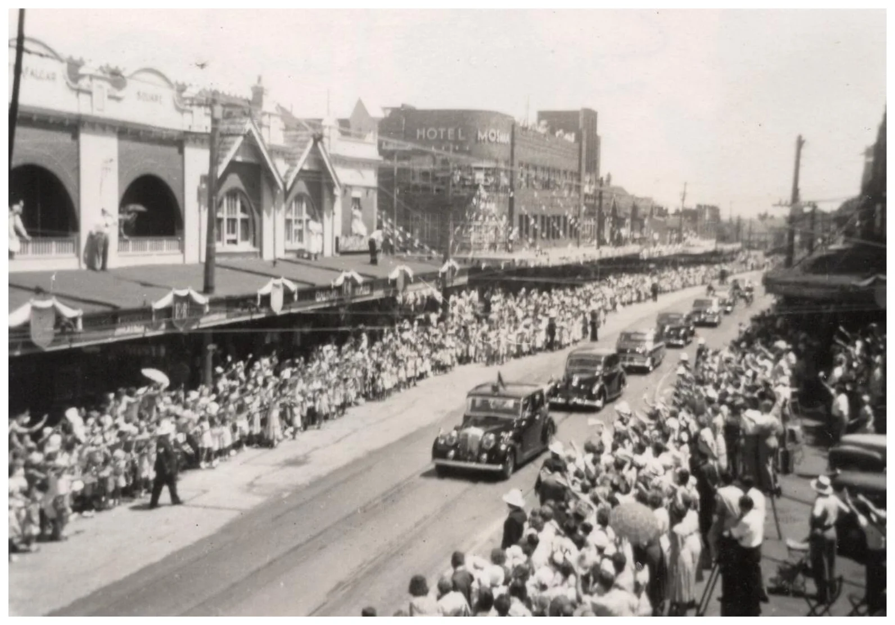
Mosman Masterplan—Heritage Review
Figure 10: Image of Military Road, near Spit Junction, 1960s. (Source: Trace Mosman Digital Archive)
Alongside these attempts by Council, private sector interest and developments also contributed to the revival of Spit Junction over the mid to late twentieth century.47 This included such developments as a complex of shops known as Myahgah Mews (between Myahgah Road and Vista Street) and a produce market and squash courts in Vista Street.48
Figure 11: Photograph showing the intersection of the Spit Junction, facing south, ca. 1950s-1960s. (Source: Mosman Local Studies, Mosman Library)
47 Souter, Mosman: A History. 48 Souter, Mosman: A History.
August 2026
Attachment 1.1.4 Mosman Council
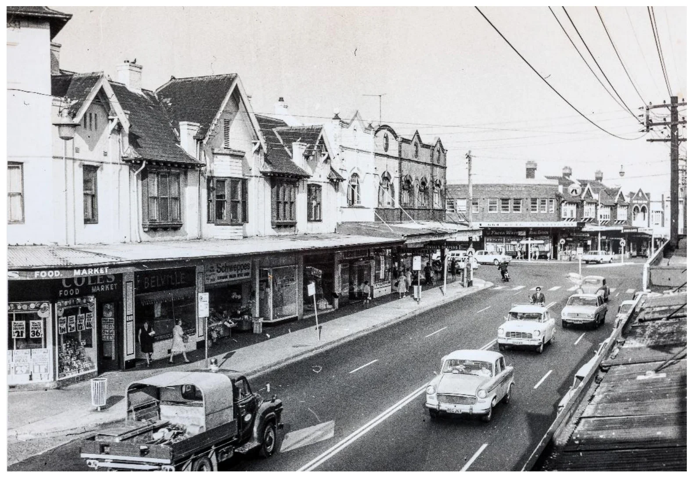
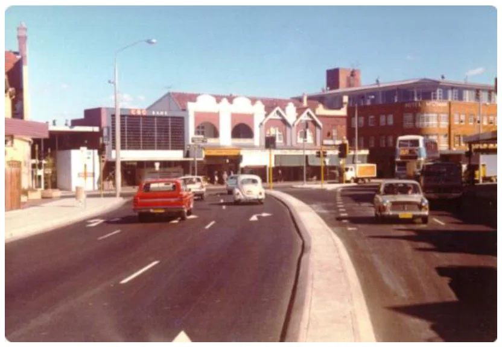
Mosman Masterplan—Heritage Review
From about the 1970s, the character of these shops and businesses shifted from providing localised services to a more high-end experience, with small, specialised boutiques, cafes and restaurants.49
2.6 EDUCATION In Mosman, the development of schools appears to have occurred from the late nineteenth and early twentieth centuries, developing alongside the residential growth of the area. Public schools seem to have developed before denominational schools in Mosman, with denominational schools appearing from the 1900s.
The first public school in Mosman was opened in 1880, operating from rented premises before a stone building was constructed on land purchased by Harnett and Stuart.50 The school was relocated in the early 1900s to its present site with the new Mosman Public School (I105) opened in 1904 upon the completion of one of four wings to be built at the site.51 A new school building was constructed at the Mosman Public School in 1915. The two-storey building, which was of red brick with a slate roof, was constructed by Thomas Jones, under supervision of the architect for public instruction.52 A new building was added at the site in 1925.53 Further changes have occurred at the school over the mid to late twentieth century as adjoining residential land was acquired and additional school buildings constructed.
In 1900, St Bridget’s School was opened in Mosman by the Sisters of Mercy, operating as a school for girls from kindergarten to Year 9.54 By 1922, the Marist Brothers had constructed a new school on the current site of the Sacred Heart Primary School.55 A new Sacred Heart School was built on the site in 2000, opening in the same year; the former Marist Brothers school was demolished in 2005.56
2.7 COMMUNITY AND RECREATION From the mid-nineteenth century, Mosman emerged as a place for excursions and was frequented by visitors to the pleasure grounds and picnic resorts that developed along the foreshore.57 As residential development grew from the late nineteenth century, community and recreational groups or premises began to form more strongly over the early twentieth century.
In 1900, Mosman Council purchased ‘Lennon’s Paddock’ from John Gouldsbury Lennon and established Mosman Park at the site in the same year (Mosman Oval and Park I416).58 An oval was built to the site in 1904, though games were not held until 1908 when the Mosman
49 Holmes, ‘Shops and Docs on Mosman’s High Street’. 50 ‘Building Mosman Public School’, The Sydney Morning Herald, 21 July 1926, p. 10; ‘Mosman School’ The Sydney Morning Herald, 18 November 1930, p. 7. 51 ‘Mosman Public School’, Mosman, Neutral and Middle Harbour Resident, 1 October 1904, p. 5. 52 ‘Mosman Public School’, The Sydney Morning Herald, 29 June 1915, p. 6. 53 ‘Mosman Public School’, The Sun, 13 February 1925, p. 9. 54 ‘History’, Sacred Heart Catholic Primary School, Mosman, 2026, https://shmosman.syd.catholic.edu.au/principals-message, accessed 21 April 2026. 55 Ibid. 56 Ibid. 57 Otto Cserhalmi & Partners Architects, Boronia & Surrounds, Mosman Conservation Management Plan, March 2008, p.17. 58 ‘Mosman Park, Oval and Park’, State Heritage Inventory, Heritage Item ID: 2060337, https://www.hms.heritage.nsw.gov.au/App/Item/ViewItem?itemId=2060337, accessed 21 April 2026.
August 2026
Attachment 1.1.4 Mosman Council
Mosman Masterplan—Heritage Review
District Cricket Club was formed.59 The grandstand was constructed in 1912 and later renamed the K. O. E. Johnson Pavilion.60
A Masonic lodge was formed in Mosman in about 1900 and first held meetings at the Buena Vista Hotel, the owner of which was a member of the lodge.61 The lodge continued to meet at the hotel until about 1903.62 At about this time, the lodge moved into a specially built annexe of the former Mosman Town Hall.63 Later, after having outgrown the annexe, a Masonic Hall (I282) was built at 42-44 Spit Road, with its foundation stone laid in August 1911.64 The Masonic lodge continue to meet at the premises.
In 1901, the Mosman Recreation Club was formed for the purpose of providing a bowling and tennis club.65 In the following year, tenders were received for the construction of the Mosman Bowling Club (I25), a six-rink bowling green and tennis courts on Belmont Road, designed by architect T Tidswell, with construction completed in the same year before its official opening in January 1903.66 The bowling greens have been updated over the course of the site’s history67 and in 1927, a new clubhouse was built for members.68 The Mosman Bowling Club amalgamated with the Mosman Women’s Bowling Club in the 1970s.69
Figure 12: Mosman Bowling Club, 1947. (Source: Trace Mosman Digital Archive)
59 Ibid. 60 Ibid. 61 Nicky Champ, ‘Inside Mosman’s Chaber of Secrets’, Mosman Living, 14 February 2025, https://mosmanliving.com.au/freemasons- masonic-centre-mosman/, accessed 17 April 2026. 62 Champ, ‘Inside Mosman’s Chamber of Secrets’. 63 Champ, ‘Inside Mosman’s Chaber of Secrets’. 64 ‘Mosman Masonic Hall’, The Daily Telegraph, 21 August 1911, p.14. 65 ‘Mosman Recreation Club’, The Sydney Morning Herald, 19 August 1901, p.4. 66 ‘Building and Construction’, The Daily Telegraph, 6 February 1902, p.8; ‘Mosman Recreation Club’, The Sydney Morning Herald, 21 November 1902, p.7; ‘Mosman Recreation Club Official Opening’, The Mosman Mail, 24 January 1903, p.2. 67 ‘Mosman Bowling Club’, State Heritage Inventory, Heritage Item ID: 2060045, https://www.hms.heritage.nsw.gov.au/App/Item/ViewItem?itemId=2060045, accessed 21 April 2026. 68 Ibid. 69 ‘A Brief History’, Mosman Bowling Club [website], https://mosmanbowlingclub.org.au/about-our-club/, accessed 17 April 2026.
August 2026
Attachment 1.1.4 Mosman Council
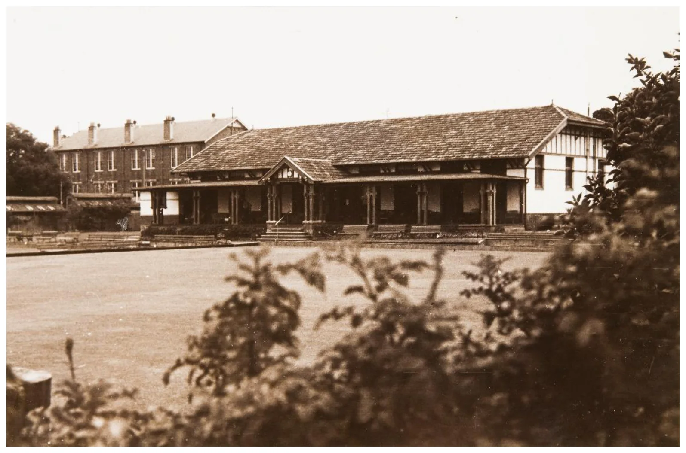
Mosman Masterplan—Heritage Review
As Mosman grew over the interwar years, further entertainment venues and premises were established to provide for the rising population. By the 1930s, Mosman had three cinemas and three hotels.70
Over the 1980s, as the Mosman Council attempted to revitalise Spit Junction, Council initiated a $6 million development for Mosman Square, which included a paved and landscaped stretch of Myahgah Road alongside the new Town Hall (opened 1988).71 Mosman Square won the National Award for Innovation in Local Government.72 The Mosman Village Green was Stage 2 of the Mosman Square development, and resulted in the landscaped section of Myahgah Road up to the Cenotaph in Mosman Park.73
Figure 13: Civic Centre & Square, late twentieth century. (Source: Trace Mosman Digital Archive)
In 1998, the Methodist Church (I193) in Myahgah Road was adapted for use by the Mosman Art Gallery.74
The Antico fountain is an eighteenth-century marble fountain that was installed following the Bicentennial redevelopment of the Town Hall and Civic Square.75 The fountain was donated to Mosman by Pioneer Concrete to mark the retirement of Sir Tristan Antico, who was a long- serving chairman of the company and a Mosman resident.76 Previously located in the Village Green, the fountain was relocated into a more prominent and central position in Mosman Square.77
70 Souter, Mosman: A History. 71 Souter, Mosman: A History. 72 Souter, Mosman: A History. 73 Local Studies Service, Mosman Council Chambers: A Brief History, Mosman Library, 2007, p.6 74 ‘History’, Mosman Art Gallery, https://mosmanartgallery.org.au/the-gallery/, accessed 21 April 2026. 75 ‘The Antico Fountain’, State Heritage Inventory, Heritage Item ID: 2060335, https://www.hms.heritage.nsw.gov.au/App/Item/ViewItem?itemId=2060335, accessed 23 April 2026 76 Ibid 77 ‘Fountain installed’, Mosman Council, 10 July 2023, https://mosman.nsw.gov.au/news/council-news/fountain-installed, accessed 23 April 2026
August 2026
Attachment 1.1.4 Mosman Council
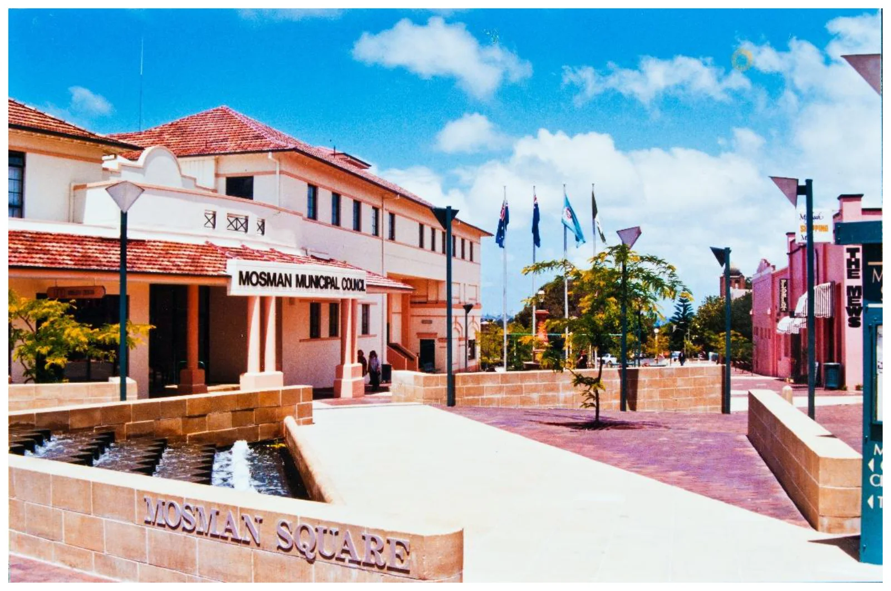
Mosman Masterplan—Heritage Review
2.8 GOVERNANCE AND ADMINISTRATION From 1868, Mosman was part of the ‘Mosman’ Ward’ in the Borough of St Leonards. Mosman became a municipality in 1893, with Richard Hayes Harnett Junior (the son of Harnett Senior) elected the first mayor.78 The boundaries of the municipality were established at that time and have remained unaltered.
The earliest meetings of the Mosman Council occurred in a wooden two-storey hall, which also served as a school and a church, located on Military Road, opposite Belmont Road.79
In July 1897, Mosman Council were given notice to vacate the hall, prompting the Mosman Council to construct their own Council chambers. Council constructed new two storey chambers of brick and stone at the corner of Myahgah Road, which was completed in 1900 for £1100.80 The chambers were designed by James Peddle and were built by M T Nicholson of Willoughby.81 New Council chambers and a town hall were built in the 1930s at the same location of the previous chambers to designs by architects Leonard Herbert, Edward Wilson and Henry Pynor, who worked with the Council’s architect Alfred Hale.82
Figure 14: The Mosman Council Chambers, opened in 1900, at the corner of Military and Myahgah Roads at Spit Junction, taken in 1900. (Source: Trace Mosman Digital Archive)
Figure 15: The Mosman Council Chambers and Town Hall, taken in the 1940s from Myahgah Road. (Source: Trace Mosman Digital Archive)
78 Mosman Council, ‘A Brief History of Mosman’. 79 Local Studies Service, Mosman Council Chambers’, p. 2 80 Ibid, p. 3. 81 Ibid. 82 Ibid, p. 4.
August 2026
Attachment 1.1.4 Mosman Council
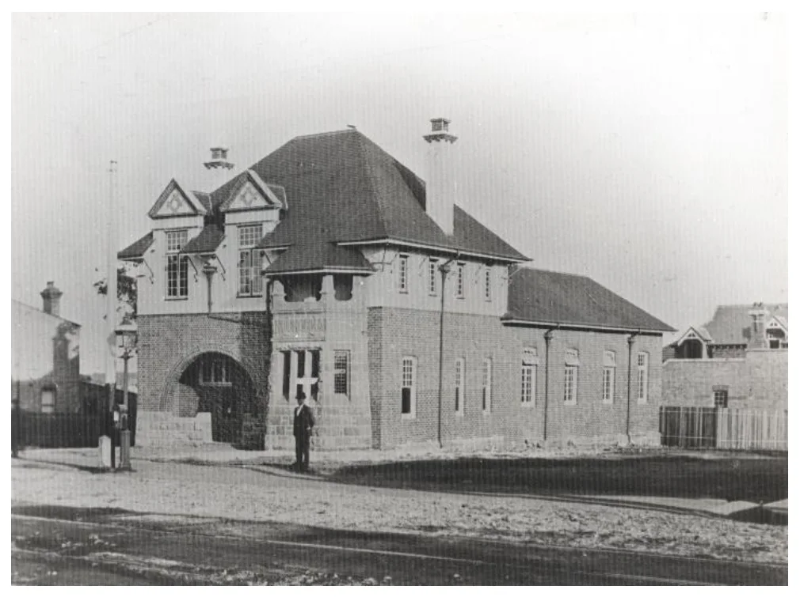
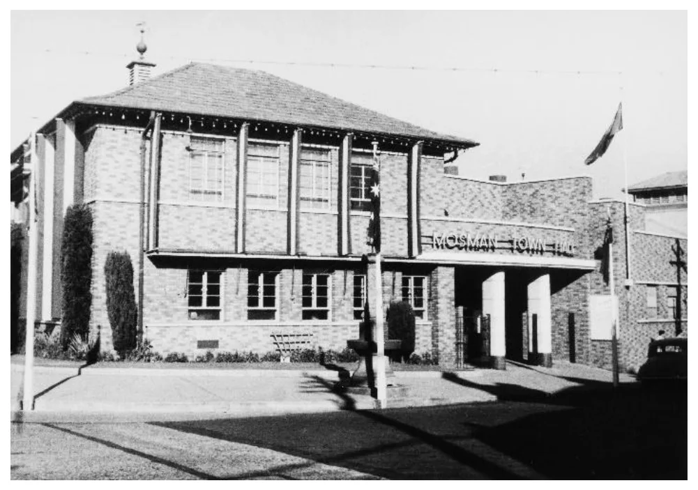
Mosman Masterplan—Heritage Review
Figure 16: The Mosman Council Chambers and Town Hall, taken in the 1940s, at the corner of Military and Myahgah roads. (Source: Trace Mosman Digital Archive)
Figure 17: The Mosman Council Chambers and Town Hall, taken in the 1940s, showing the elevation to Military Road. (Source: Trace Mosman Digital Archive)
In the mid to late 1980s, the Council chambers were redeveloped at the same location on Myahgah Road to designs by Travis Partners Pty Ltd (Mosman Council Chambers, Contributory 2 in C7). Part of the interwar council chambers, being the hipped two-storey portion that faces Military Road, was retained, though the first floor was rendered and the ground floor altered. The new chambers were opened in 1988. They formed part of the Mosman Civic Square and were an integral part of the Mosman Square development project.83 The chambers won the National Award for Innovation in Local Government.84
83 Ibid, p. 5. 84 Ibid.
August 2026
Attachment 1.1.4 Mosman Council
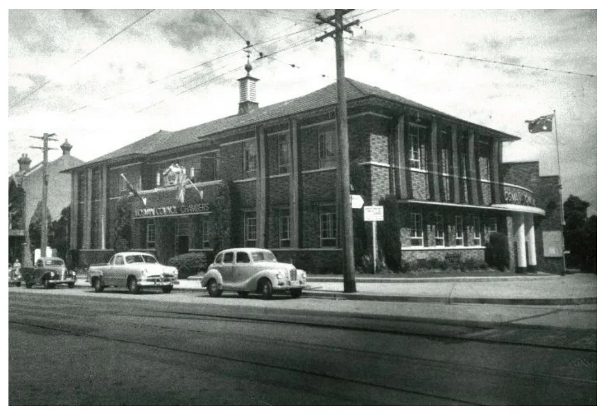
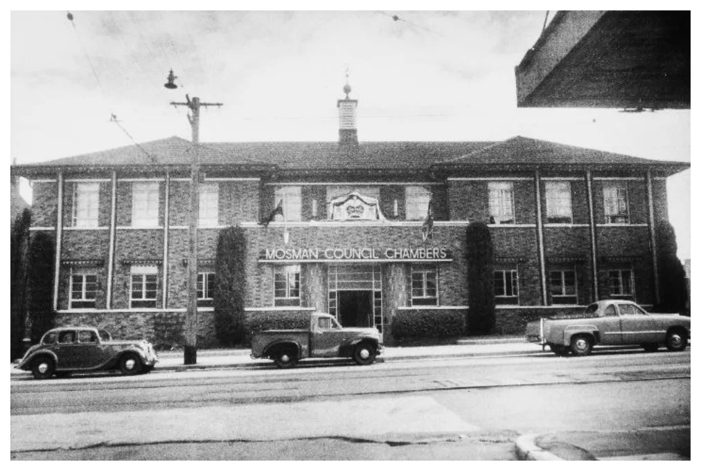
Mosman Masterplan—Heritage Review
Figure 18: Mosman Council Chambers under construction, with the retained interwar portion of the building shown, taken in 1987. (Source: race Mosman Digital Archive)
Figure 19: Mosman Council Chambers under construction, with the retained interwar portion of the building shown, taken in 1987. (Source: race Mosman Digital Archive)
2.9 SERVICES As Richard Harnett Senior and his business partner Alexander Stuart acquired and subdivided large country estates in Mosman for residential development over the 1880s and 1890s, services were introduced to the area. Over this late nineteenth century period, postal and telegraph services were extended to Mosman, and a water supply was installed.85 In 1893, a tram service was established along Military Road, which operated until 1958.86
Between 1900-2, the Water Sewerage and Drainage Board completed the Mosman branch of the North Sydney sewer system.87 This system carried sewerage from all parts of the suburb except an area bounded by Spit Road, Military Road, Bradleys Head Road, and the Middle Head-Georges Heights military reserve, which fell to Hunters Bay.88 The side of Mosman that drained into Hunters Bay required septic treatment within the Borough, which was provided in 1903-4 at the southern end of Balmoral, next to the military reserve.89
Over the early to mid-twentieth century, further services were provided in Mosman as residential building booms required new or upgraded services for the growing population.
85 Mosman Council, ‘A Brief History of Mosman’. 86 Mosman Council, ‘A Brief History of Mosman’; Holmes, ‘Shops and Docs on Mosman’s High Street’. 87 Souter, Mosman: A History. 88 Ibid. 89 Ibid.
August 2026
Attachment 1.1.4 Mosman Council
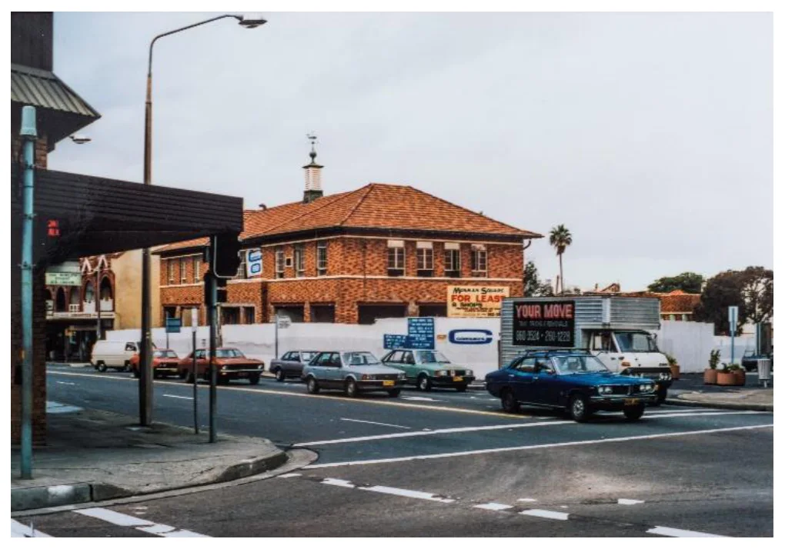
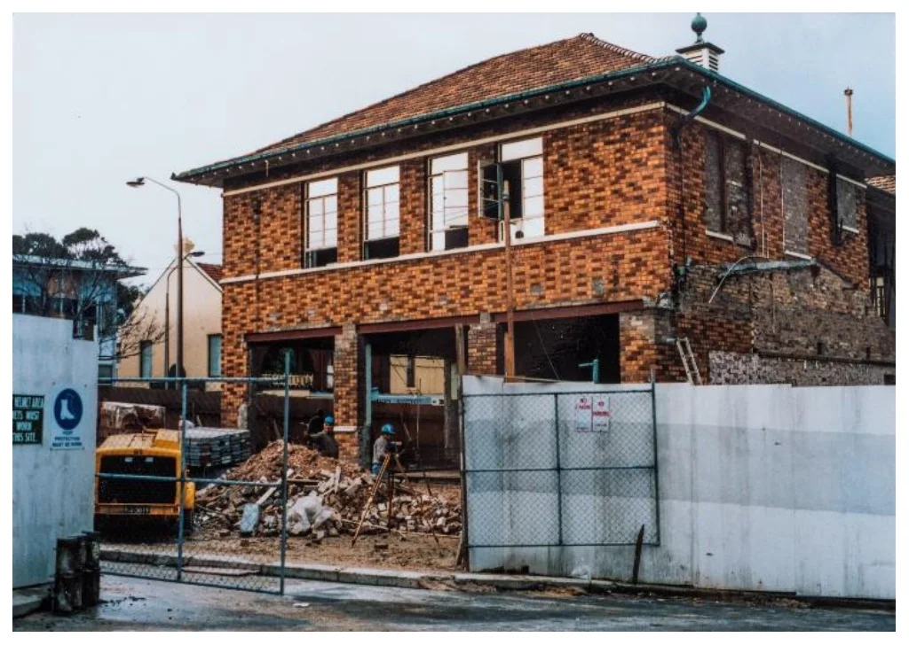
Mosman Masterplan—Heritage Review
Tipping had begun at Balmoral in 1911.90 By the 1930s, garbage disposal had emerged as a contentious issue in Mosman. In answer, Mosman Council purchased a site in Balgowlah and constructed an incinerator.91
The earliest efforts to supply electricity were from individual councils looking to provide power for street lighting, and then later to provide power to private premises located in central areas.92 The demand for electricity quickly grew and often local enterprises expanded outside of their initial administrative boundaries. In Sydney, the first power station was built at Pyrmont in 1904 by the Sydney Council, who later built a second station at Bunnerong.93
The Sydney Council supplied electricity to the inner city, Inner West and Lower North Shore, and provided bulk power to outer western and northern suburbs. Power was supplied by the Sydney Council to Mosman from 1915.94 Substations were built as a means to extend and convert electrical power for use. The design of substations reflected architectural trends, however, by the late 1920s the trend was for standardised designs.95 One-off designed substations continued to be built well into the mid-twentieth century, though they were usually restricted to higher class suburbs such as Mosman.96 Examples of such substations include electricity substation no. 149 (I136), which was designed by James Henry Merriman in 1925, and electrical substation no. 204 (I284), built around 1927 to designs by Walter Frederick White.97
2.10 RELIGION The development of religious communities and places of worship occurred alongside the residential expansion of Mosman over the late nineteenth century. Churches for the major religious denominations were built in Mosman over the 1880s through to the early 1900s; by mid-1900, all of the major Protestant denominations and the Catholic community had built permanent structures in Mosman.98
Construction of the Sacred Heart Church (I154) in Cardinal Street began early in 1901, with the church opened later in the same year by Cardinal Moran. Cardinal Street was renamed for Moran after he raised concerns over the naming of the street as ‘Burrogy’.99 The Catholic community soon established a noticeable presence in this area with the opening of St Brigid’s Convent in nearby Wudgong Street and by the Marist Brothers’ school that opened on the corner of Cardinal Street and Military Road in 1922.100 The nuns of St Brigid’s Convent opened two schools, which were later combined and eventually amalgamated with the Marist Brother’s school to become the Marist Scared Heart primary school. A new Sacred Heart School was built on the site in 2000, with the former Marist Brothers school demolished in 2005.101
90 Ibid 91 Ibid. 92 Woollahra Municipal Council, Heritage Review Ausgrid Section 170 Register, 25 March 2022 (updated 28 September 2022), p. 10. 93 From Futurepast Heritage Consulting, EnergyAustralia – Heritage and Conservation Register Review Project, May 2007, quoted in Woollahra Municipal Council, Heritage Review Ausgrid Section 170 Register, p. 10. 94 ‘Electricty Substation No 149’, State Heritage Inventory, Heritage Item ID: 2060256, https://www.hms.heritage.nsw.gov.au/App/Item/ViewItem?itemId=2060256, accessed 21 April 2026. 95 Futurepast Heritage Consulting, EnergyAustralia, p. 12 96 Ibid, p. 13 97 ‘Plan - Sydney Municipal Council Electricity Substation Number 149, Melrose Street Mosman, 1925’, City of Sydney Archive, P0582; ‘Plan- Sydney Municipal Council Electricity Substation Number 204, Awaba Street Mosman, 1927’, City of Sydney Archive, P0613 98 Souter, Mosman: A History. 99 Souter, Mosman: A History. 100 Ibid. 101 Ibid.
August 2026
Attachment 1.1.4 Mosman Council
Mosman Masterplan—Heritage Review
Figure 20: Sacred Heart Church, c1911. (Source: Trace Mosman Digital Archive)
The former Methodist Church (I193) in Myahgah Road was constructed in 1914 to designs by Burcham Clamp.102 Romanesque in style, the church was built by Messrs J Ewart and Son of Mosman to replace an earlier church and cost about £4000.103 In 1998, the church was adapted for use by the Mosman Art Gallery.104
In the 1870s, Anglicans at Mosman were parishioners of St Thomas’s in North Sydney before becoming parishioners of the newly formed St Augustine’s in Neutral Bay.105 In the 1890s, an Anglican church was built in Mosman to serve the local community, known as St Luke’s.106 Early in 1909, St Luke’s became a separate parish. St Luke’s Church (I198) was constructed in 1910 on the corner of Heydon Street and Ourimbah Road, replacing an earlier structure at the site.107
The Mosman Presbyterian Church (I24), renamed the Scots Church in the late 1940s and located in Belmont Road, was built in 1920.108 This church replaced an earlier church at the site that faced Gouldsbury Street and was built in 1898.109 The War Memorial Hall was constructed to the south around 1911.110 In 1927, a manse was built for the Scots Church to designs by Messrs Spain and Cosh architects at a cost of about £2500 (Figure 21); P Bottomley of North Sydney was the builder.111
102 ‘Mosman Methodist’, The Daily Telegraph, 27 July 1914, p. 10. 103 ‘Mosman Methodist Church’, The Daily Telegraph, 1 February 1915, p. 11. 104 ‘History’, Mosman Art Gallery, https://mosmanartgallery.org.au/the-gallery/, accessed 21 April 2026. 105 ‘St Luke’s History’, Anglican Parish of St Luke Mosman, stlukesmosman.org/about-us/our-history/, accessed 21 April 2026. 106 Ibid. 107 ‘St Luke’s Anglican Church Group’, State Heritage Inventory, Heritage Item ID: 2060347, hms.heritage.nsw.gov.au/App/Item/ViewItem?itemId=2060347, accessed 21 April 2026. 108 ‘Scots Kirk Group’, State Heritage Inventory, Heritage Item ID: 2060044, https://www.hms.heritage.nsw.gov.au/App/Item/ViewItem?itemId=2060044, accessed 21 April 2026. 109 Ibid. 110 Ibid. 111 ‘Presbyterian Manse’, The Sydney Morning Herald, 24 August 1927, p. 9.
August 2026
Attachment 1.1.4 Mosman Council
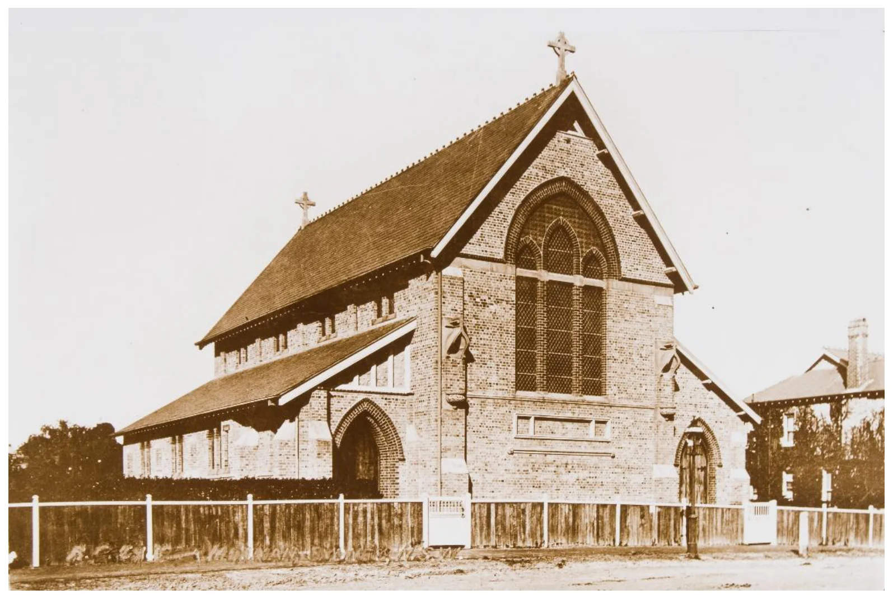
Mosman Masterplan—Heritage Review
Figure 21: Drawing of the Manse for the Presbyterian church (Scots Church), 1927. (Source: ‘Presbyterian Manse for Mosman’, The Sydney Morning Herald, 24 August 1927, p. 9)
August 2026
Attachment 1.1.4 Mosman Council
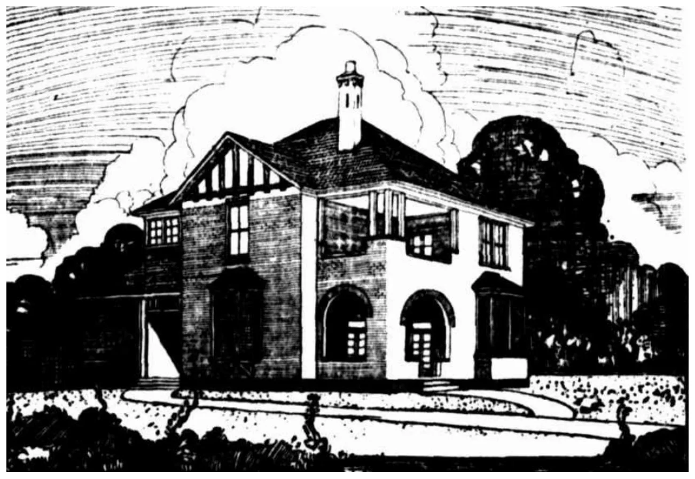
Mosman Masterplan—Heritage Review
3.0
REVIEW OF HERITAGE PLACES
3.1 INTRODUCTION This section provides a review of Heritage Items and Heritage Conservation Areas (HCAs) that are wholly or partially located within the Masterplan area.
The review evaluates existing heritage listings and statements of significance for each item and HCA. It considers the relative contribution of each place to the heritage values within the Masterplan area. It determines the extent to which places retain and demonstrate significant attributes and qualities identified in the statement of significance, and identifies changes that have occurred that may have diminished heritage values.
The review considers whether each item or HCA is likely to meet the threshold for heritage significance under current assessment frameworks, such as Assessing Heritage Significance: Guidelines for Assessing Places and Objects against the Heritage Council of NSW Criteria (NSW Department of Planning and Environment, 2023).
The gradings of places included in HCA’s are evaluated against the HCA ranking criteria described in the Mosman DCP.
Recommendations are provided regarding whether existing listings should be maintained or revised.
3.1.1 EXISTING HERITAGE LISTINGS Most of the heritage items and Heritage Conservation Areas (HCAs) within the study area were originally identified and assessed as part of the Mosman Heritage Review (Godden Mackay Heritage Consultants, 1996) and the subsequent Mosman Heritage Review (Paul Davies Pty Ltd, 2007). Given the time elapsed since these studies were completed, it is necessary to confirm existing conditions and review the current status of heritage listings within the Masterplan area.
The review of existing listings assesses heritage places as they are described in the existing Statement of Significance and existing inventory sheet, which are valid and current at the time that this report was prepared. Statements of Significance (SoS) have been sourced from the NSW State Heritage Inventory database; where an SoS is not available, the listing description has been reproduced.
August 2026
Attachment 1.1.4 Mosman Council
Mosman Masterplan—Heritage Review
3.1.2 MOSMAN HCA RANKING DESCRIPTIONS Heritage Items and places located in conservation areas are assigned individual rankings. This review adopts the standard terminology and interpretation of HCA rankings described in the Mosman Residential Development Control Plan 2012. Definitions and objectives for these rankings are described in the table below.
RANKING DESCRIPTION OBJECTIVES OF DEVELOPMENT CONTROL Heritage Item Buildings individually listed as a Heritage Item in Mosman Local Environmental Plan 2012
Maintain the heritage significance of the item
Contributory 1 Buildings that clearly reflect a Key Period of Significance for the HCA and are key elements of the HCA.
This ranking was assigned where the main front portion of the building is largely unaltered as viewed from the street. Includes houses with rear additions which do not affect the main front roof.
Maintain heritage characteristics and streetscape intactness
Contributory 2 Buildings that have been altered but are still identifiable as dating from a Key Period of Significance for the HCA. They retain their overall form from the original date of construction and, even though altered, are contributory to the HCA character.
This ranking was assigned where a building has alterations such as cement rendering to Federation or Inter-war period brickwork or a first floor addition which affects the main front roof form, but the period and style of the house remains discernible.
Reconstruct original features by removing unsympathetic additions or using more appropriate decorative treatment
Neutral 3 Buildings that are either heavily altered to an extent where the construction period is uncertain, or are from a construction period which falls outside any Key Period of Significance for the HCA, but which reflect the predominant scale and form of other buildings within the HCA, and therefore do not detract from the character of the HCA.
Maintain benign effect
August 2026
Attachment 1.1.4 Mosman Council
Mosman Masterplan—Heritage Review
RANKING DESCRIPTION OBJECTIVES OF DEVELOPMENT CONTROL This ranking was assigned where the building is either so altered the period and style is no longer evident, or it is a recent building which is of a height, form and scale which is consistent with the streetscape.
Detracting 4 Buildings from a construction period which falls outside any Key Period of Significance for the HCA and that have scale or form that is not consistent with the key characteristics of the area.
This ranking was assigned where the building is recent/late 20th century and is out of scale, not consistent with the height, form and scale of buildings within the streetscape.
Encourage the ultimate replacement of the building with one less assertive, or amelioration of its adverse impact by sympathetic alterations, plantings, more appropriate colour scheme or other treatment
August 2026
Attachment 1.1.4 Mosman Council
Mosman Masterplan—Heritage Review
3.2 HERITAGE ITEMS Heritage Items are presented in tabular format and organised according to the distinct character areas in which they are located. The tables identify the established significance of each item and include commentary confirming whether the item’s significant attributes and qualities remain intact and legible and advising on appropriate actions for future development.
Assessment of places is based on visual inspections of the exterior from the public domain. Additional historical research was not undertaken within the scope of this review.
3.2.1 MILITARY ROAD CORRIDOR—WEST The Military Road Corridor area encompasses the commercial corridor along the western end of Military Road, terminating at the approach to the Spit Junction. The area has a heterogeneous character, comprising a mix of residential, commercial, and religious buildings.
Multiple phases of development are represented along the corridor, ranging from the nineteenth to twenty first centuries. Iterative development along Military Road has altered the original subdivision pattern with several examples of recent developments on large, consolidated lots. Many structures are built to the street boundary, although there are some sites—mostly residential and religious—which are well set back from the street. A diverse range of architectural styles, building materials, and typologies are exhibited.
MILITARY ROAD CORRIDOR I153 Commercial building, former bank
414-416 Military Road
Figure 22: 414-416 Military Road.
SoS: A small building with a stylish streetscape presence at an important corner on the very edge of the Council area, as though signifying the entrance to the suburb. Review: The building exterior is substantially intact. It retains its primary three-dimensional built form, upper- level fenestration and window frames, face brick walls and dentilled cornice. Its splayed corner entrance, semicircular portico, and Tuscan columns continue to have a strong streetscape presence. Modifications to ground level openings are generally sympathetic and not uncommon for commercial heritage buildings.
The item is generally as described in its existing listing, and its heritage values are intact and legible. Management: Maintain existing listing and ensure development in the vicinity responds appropriately and in accordance with the Mosman Masterplan Heritage Design Guidelines.
August 2026
Attachment 1.1.4 Mosman Council
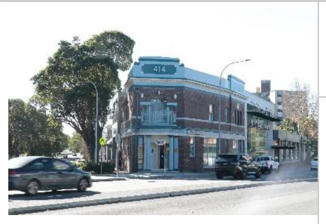
Mosman Masterplan—Heritage Review
MILITARY ROAD CORRIDOR I154 Sacred Heart Church 485–485A Military Road, Mosman
Figure 23: 485, 485A Military Road.
SoS: A pleasing and well-scaled example of the Federation Gothic idiom to which sympathetic modifications have been made. Its relationship to both the street and the adjacent school buildings is appropriate. Review: The building exterior is highly intact, retaining its primary three-dimensional form, bichromatic face brick walls, slate roof, fenestration, decorative moulding and leaded and coloured glass windows. Modifications to the landscaping and introduction of external stairs, ramp and handrails have not diminished the place’s legibility or presentation to the street.
The item is generally as described in its existing listing, and its heritage values are intact and legible. Management: Maintain existing listing and ensure development in the vicinity responds appropriately and in accordance with the Mosman Masterplan Heritage Design Guidelines. I136 Electrical substation no. 149
23 Melrose Street, Mosman
Figure 24: 23 Melrose Street.
SoS: A small but essential urban utility building which, in the local context, has been designed to complement the environment. It demonstrates the attention to aesthetics prevalent in the area in the period and is a relic of the first phase of electricity supply in the suburb. Forms part of a fine collection of architecturally stylised substations in the Municipality. Review: The building exterior is highly intact, retaining its three-dimensional built form, face brick walls, stucco fanlight, entablature, sills and coping, fenestration and adjoining brick boundary fence.
The item is generally as described in its existing listing, and its heritage values are intact and legible. Management: Maintain existing listing and ensure development in the vicinity responds appropriately and in accordance with the Mosman Masterplan Heritage Design Guidelines.
August 2026
Attachment 1.1.4 Mosman Council
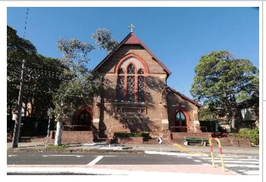
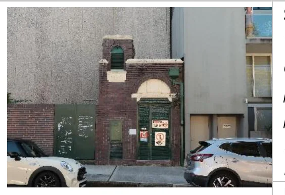
Mosman Masterplan—Heritage Review
3.2.2 OURIMBAH TRIANGLE Ourimbah Triangle is a predominantly residential area currently comprised of mostly 1-2 storey detached or semi-detached houses and an interwar shop-residence building. The established heritage character in the area chiefly arises from its Federation era development, with Queen Anne style architecture particularly well represented. Prominent roof forms, garden settings and detached housing largely define the existing character—particularly in the more cohesive sections in the middle and northern portions of the streetscape. Face brick walls (in red or brown brick) and terracotta tiled roofs are well represented. Lang Street Heritage Conservation Area is also included in this area (refer to Section 3.4.1).
OURIMBAH TRIANGLE I111 ‘Oreel’ House with stone fence and garden
12A-14 Hale Road, Mosman
Figure 25: Oreel, 12A-14 Hale Road, Mosman.
SoS: A substantial house, set in a spacious well-planted garden, and bounded by an unusual and dominant sandstone front wall and fence, all combining to create an important component in the streetscape. Review: The house, stone fence and garden remain intact and legible.
The item is generally as described in its existing listing, and its heritage values are intact and legible. Management: Maintain existing listing and ensure development in the vicinity responds appropriately and in accordance with the Mosman Masterplan Heritage Design Guidelines. I110 ‘The Cottage’ Arts Education Centre
8 Hale Road, Mosman
Figure 26: The Cottage, 8 Hale Road, Mosman.
SoS: Externally, this is an intact, well-detailed example of a Queen Anne style house. It also exemplifies a successful adaptive re-use. Review: The former house and stone and palisade fence remain intact and legible. It is noted that there is a mature tree in the front yard that enhances the setting and is possibly contemporaneous with the dwelling.
The item is generally as described in its existing listing, and its heritage values are intact and legible. Management: Maintain existing listing and ensure development in the vicinity responds appropriately and in accordance with the Mosman Masterplan Heritage Design Guidelines.
August 2026
Attachment 1.1.4 Mosman Council
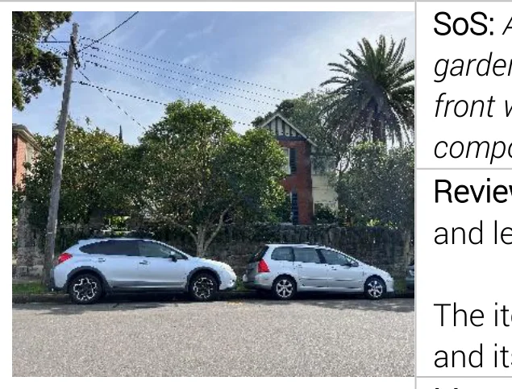
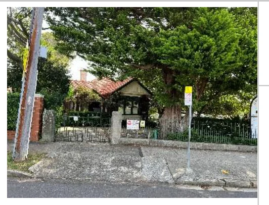
Mosman Masterplan—Heritage Review
OURIMBAH TRIANGLE
I394 Divided Road Lang Street
Figure 27: Central median strip, Lang Street.
SoS: Mosman's divided roads are integral to the Municipality's visual character and sense of place. Built as a utilitarian response to the steep harbourside topography, they reflect, in their fabric and construction technology, the development of Mosman's suburban structure. The large collection of these features makes Mosman instantly and uniquely recognisable. Review: The divided road layout remains intact and legible. Trees planted in the median strip appear juvenile and in poor health.
The item is generally as described in its existing listing, and its heritage values are intact and legible. Management: Maintain existing listing. No specific considerations identified. I199 Group of 7 pairs of semi-detached cottages
8–34 Ourimbah Road, Mosman
Figure 28: Row of houses at 8-34 Ourimbah Road.
Figure 29: View of 8 Ourimbah Road, at the corner of Ourimbah Road and Brady Street.
SoS: A group of houses which is very unusual in several respects, the first being that there are 14 matching occupancies in the group, each pair related to one another and uniformly set back from the building line, forming an ensemble of considerable unity. Secondly, they are elevated above the street and have unusual approach steps, adding to the group's streetscape presence. Thirdly they have attractive matching detailing such as rivetted metal front fences and stair balustrading on stone base work. Fourthly, to overcome mere uniformity, there are two alternating variations of facade design. Finally, they are generally very intact. The group is also significant for demonstrating part of the history of real estate development and architectural style in Mosman. Review: The row of houses remains substantially intact and legible, despite minor modifications to individual houses. The significance is strengthened by the cohesiveness of the row and strong contribution to the streetscape character.
The item is generally as described in its existing listing, and its heritage values are intact and legible. Management: Maintain existing listing and ensure development in the vicinity responds appropriately and in accordance with the Mosman Masterplan Heritage Design Guidelines. I200 Shops and flats 60 Ourimbah Road, Mosman
August 2026
Attachment 1.1.4 Mosman Council
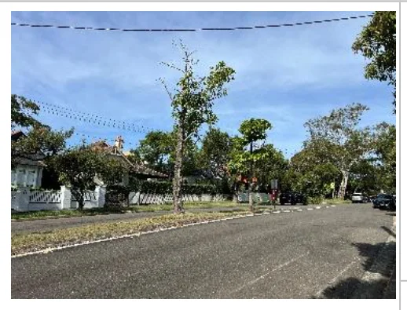
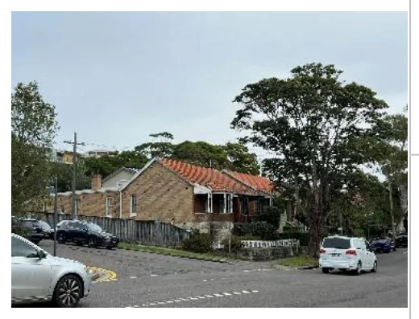
Mosman Masterplan—Heritage Review
OURIMBAH TRIANGLE
Figure 30: 60 Ourimbah Road, Mosman.
SoS: A prominent, functional yet attractively detailed block of shops and flats from the Inter-War Period, whose alterations to windows and shopfronts have not significantly diminished the buildings architectural and streetscape quality. Review: The building exterior is substantially intact on the upper level and moderately intact at ground level. It retains its three-dimensional built form, liver brick walls, parapets, cornices and rendered lintels. Some original openings and joinery are intact at ground level, but most have been replaced with modern glazed shopfronts. The building maintains a strong streetscape presence reinforced by its corner location.
The item is generally as described in its existing listing, and its heritage values are intact and legible. Management: Maintain existing listing and ensure development in the vicinity responds appropriately and in accordance with the Mosman Masterplan Heritage Design Guidelines. I95 ‘Aotea Roa’, house 15 Erith Street, Mosman
Figure 31: 15 Erith Street. (Source: Google Streetview, 2020)
SoS: Though much smaller than many houses of the Federation Queen Anne style in Mosman, this cottage is quite eye-catching because of its prominent and well-detailed bay and gable, and its relative intactness. Review: The building exterior is substantially intact. There are no obvious changes to the dwelling, apart from a modern replacement fence which is generally sympathetic. While the dwelling has a subdued streetscape presence, it is complemented by the small scale of the neighbouring properties which are of a similar style and period of construction.
The item is generally as described in its existing listing, and its heritage values are intact and legible. Management: Maintain existing listing and ensure development in the vicinity responds appropriately and in accordance with the Mosman Masterplan Heritage Design Guidelines. I31 Pair of attached houses 33-35 Bond Street, Mosman
Description: A small narrow pair of attached houses; brick construction, bull-nosed iron verandah roofs; cast iron decoration on verandahs. These cottages are not architecturally distinctive apart from the dominant stuccoed parapet. Review: The pair of attached houses are substantially intact externally. They retain their horizontal parapets, masonry construction, bull nosed iron verandahs and cast-iron verandah friezes. Within Mosman there are
August 2026
Attachment 1.1.4 Mosman Council
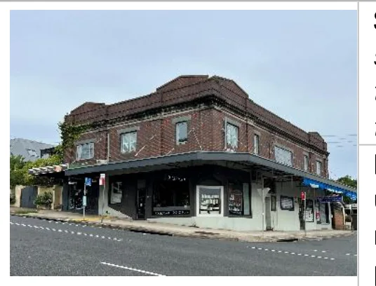
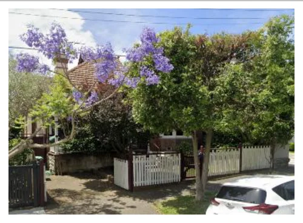
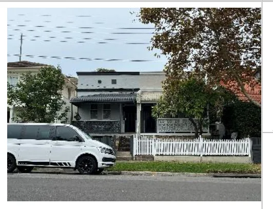
Mosman Masterplan—Heritage Review
OURIMBAH TRIANGLE
Figure 32: Attached houses, 33-35 Bond Street, Mosman. relatively few examples of modestly sized Victorian era housing, and the pair are comparatively unique for this reason.
The item is generally as described in its existing listing, and its heritage values are intact and legible. Management: Maintain existing listing and ensure development in the vicinity responds appropriately and in accordance with the Mosman Masterplan Heritage Design Guidelines.
3.2.3 PRINCE STREET The Prince Street character area is a small precinct predominantly made up of detached and semi-detached 1-2 storey residential buildings. Dwellings are closely spaced with shallow front setbacks affording small front gardens. A range of architectural styles and development phases are represented—mostly from the twentieth century. Buildings are typically masonry constructions with a mix of tile or Colorbond roofing.
PRINCE STREET I68 Group of 2 houses 13-15 Cardinal Street, Mosman
Figure 33: 13 Cardinal Street.
Figure 34: 15 Cardinal Street.
SoS: This is a curious and quaint pair of houses which, though built of different materials, complement each other in an unusual manner and form an interesting streetscape element. Review: The building exterior of No. 13 is highly intact with no obvious changes other than a sympathetic replacement fence and discrete carport. No. 15 remains intact but has been somewhat concealed by the substantial front garage and unsympathetic modifications at 17 Cardinal Street. Overall, the pair are legible and continue to contribute to the streetscape.
The item is generally as described in its existing listing, and its heritage values are intact and legible. Management: Maintain existing listing and ensure development in the vicinity responds appropriately and in accordance with the Mosman Masterplan Heritage Design Guidelines. I222 House divided into 2 dwellings
49-49A Prince Street, Mosman
SoS: A pretty house in an architectural style fairly unusual in Mosman, with an addition which is not unduly intrusive. Review: The building exterior is intact. There are no obvious signs of change to the front portion of the house. A second storey addition has been constructed at the rear, which is relatively concealed from streetscape views.
August 2026
Attachment 1.1.4 Mosman Council
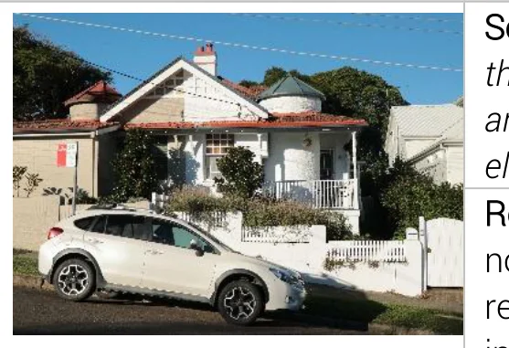
Mosman Masterplan—Heritage Review
PRINCE STREET
Figure 35: 49-49A Prince Street.
The item is generally as described in its existing listing, and its heritage values are intact and legible. Management: Maintain existing listing and ensure development in the vicinity responds appropriately and in accordance with the Mosman Masterplan Heritage Design Guidelines.
I112 Semi-detached houses 6-6A Harbour Street, Mosman
Figure 36: 6-6A Harbour Street.
SoS: A good example of the semi-detached house type where the separate occupancies are designed to resemble a single house. An unusual feature of this design is the pressed metal external frieze bearing a tulip motif. Review: The building exterior is intact. There are no obvious signs of change. Replacement fencing has been introduced but it is generally sympathetic to the original design.
The item is generally as described in its existing listing, and its heritage values are intact and legible. Management: Maintain existing listing and ensure development in the vicinity responds appropriately and in accordance with the Mosman Masterplan Heritage Design Guidelines. I477 Wudgong Walk, Pathway
Wudgong Walk and Wudgong Street
Figure 37: Wudgong Walk.
SoS: The small laneways within Mosman's original Estate Subdivisions are an important aspect of the historic urban structure of the Municipality. In many cases these lanes display pleasing visual characteristics created by a combination of walls, vegetation, vistas and the backdrop of surrounding properties. Review: The narrow laneway is intact and legible. It remains an open space and publicly accessible path.
The item is generally as described in its existing listing, and its heritage values are intact and legible. Management: Maintain existing listing. No specific considerations identified.
August 2026
Attachment 1.1.4 Mosman Council
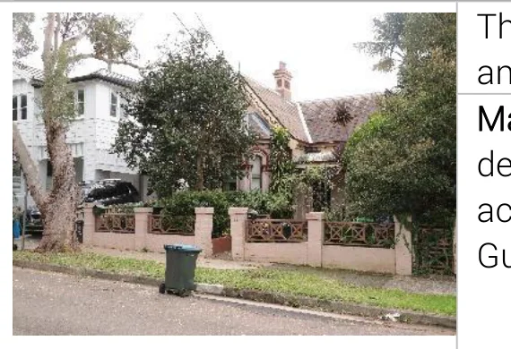
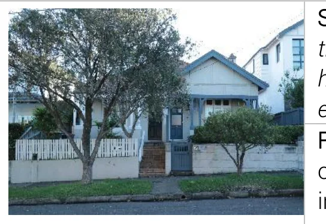
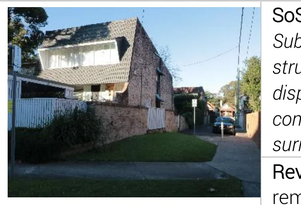
Mosman Masterplan—Heritage Review
3.2.4 MOSMAN VILLAGE SOUTH Mosman Village South encompasses the commercial, civic and recreational heart of Mosman, and contains a range of distinct zones within its curtilage.
Spit Junction is a key commercial and transport node characterised by a layered and evolving urban fabric, where early suburban and interwar development is interspersed with mid- to late-20th century buildings and more recent redevelopment. This has resulted in a mixed and, in parts, compromised streetscape, where the coherence of heritage character is fragmented by inconsistent building heights, bulk, and architectural expression.
Mosman Village Green is a small but significant civic open space located near the Spit Junction. It functions as an important community focus and gathering place, providing a visual and physical break within the surrounding built form and reinforcing the village atmosphere of the centre. The Green is characterised by its informal landscaped setting and supports passive recreation, social interaction, and local events. Its modest scale and open space contrast with the more urban edges of Military Road, making it an active and accessible public domain area.
To the south of Mosman Village Green is a quieter pocket of residential development and community amenities, including Mosman Oval, the Mosman Bowling Club, Mosman Primary School and the Scots Kirk group of church buildings. This area is characterised by a strong heritage identity--historic buildings, leafy, quiet streets, open space areas and community, and recreational activities. Federation and Interwar era architecture is well represented in this area.
MOSMAN VILLAGE SOUTH I23 ‘Windsor Flats’ 5 Belmont Road, Mosman
Figure 38: Windsor flats at 5 Belmont Road, Mosman.
SoS: This is one of many interesting variations, all different, of the two-storey walk-up flat-block theme, a distinctive Inter-War mode of architecture in Mosman. Review: The Windsor Flats exterior remains largely intact and legible. Within this streetscape, the flats, Mosman Bowling Club, Scots Kirk Group and Mosman Primary School read as a coherent group of early twentieth century architecture.
The item is generally as described in its existing listing, and its heritage values are intact and legible. Management: Maintain existing listing and ensure development in the vicinity responds appropriately and in accordance with the Mosman Masterplan Heritage Design Guidelines.
August 2026
Attachment 1.1.4 Mosman Council
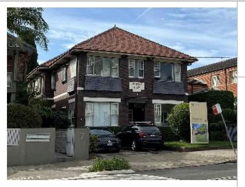
Mosman Masterplan—Heritage Review
MOSMAN VILLAGE SOUTH
I155 8 shops with dwellings above
581-595 Military Road, Mosman
Figure 39: Shop residences at 581- 595 Military Road, Mosman.
SoS: An important element in the Military Road Conservation Area, evidencing early commercial development and defining the southern side of Military Road between the Town Hall and the Library Walk shopping complex. An excellent example of a unified Federation-period terrace of shops, each shop being expressed individually as was characteristic in that period. An array of arched recessed balconies, gablets and party wall eaves-stops provides a most pleasing rhythm in the streetscape. Review: The shop-residence exteriors are substantially intact at the upper levels. While some modifications have occurred(mostly at ground level), the row’s architectural cohesiveness and fine detailing enhance this stretch of Military Road.
The item is generally as described in its existing listing, and its heritage values are intact and legible. Management: Maintain existing listing and ensure development in the vicinity responds appropriately and in accordance with the Mosman Masterplan Heritage Design Guidelines. I348 Memory Park Cowles Road, corner Wolger Road and Ballantyne Street
Figure 40: Cowles Road street trees. (Source: Google Maps)
SoS: A fine urban planting, containing a number of species unaffected by pruning usually necessary with public plantings. Associated with prominent figures in Mosman's past. Review: Cowles Road between Military Road and Belmont Road contains several mature street tree plantings. There is insufficient information available to understand which plantings had associations with historical figures of Mosman. Some of the trees appeared to be in poor health. Management: Maintain existing listing and consider further investigation of the listing and health of the trees in Mosman’s next municipal wide heritage review. Significant trees and associations should be clearly identified following this review and update. I106 Accommodation [Group of 4 houses]
20-28 Gouldsbury Street, Mosman
SoS: This is a group of four buildings which together make a harmonious and interesting streetscape ensemble as well as characterising the Lennon Estate development. Three of them, distinctive in their diminutive scale and their detail, are matching examples of a style variation important in Mosman's architectural history. Review: The group of four heritage buildings retain their overall built form, architectural detailing and materiality. No. 28 exhibits modifications to the façade including likely
August 2026
Attachment 1.1.4 Mosman Council
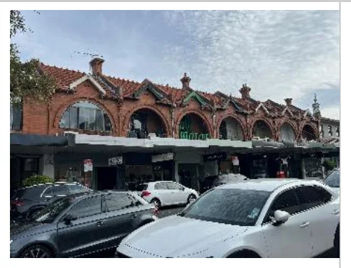
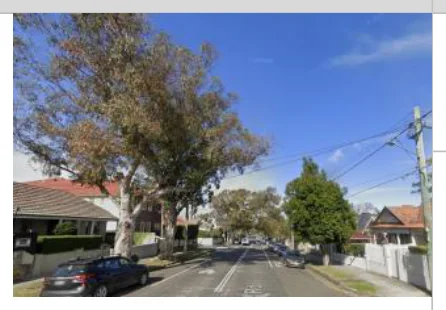
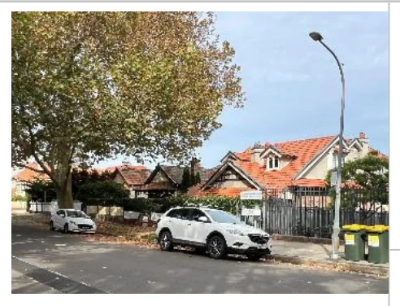
Mosman Masterplan—Heritage Review
MOSMAN VILLAGE SOUTH
Figure 41: Row of houses at 20-28 Gouldsbury Street. replacement of window joinery and overpainting of face brick. Both Nos. 22 and 28 appear to have replacement fretwork on their verandahs, although it is generally sympathetic and period appropriate.
The item is generally as described in its existing listing, and its heritage values are intact and legible. Management: Maintain existing listing and ensure development in the vicinity responds appropriately and in accordance with the Mosman Masterplan Heritage Design Guidelines. I108 Group of 4 houses 34-40 Gouldsbury Street, Mosman
Figure 42: Row of houses at 34-40 Gouldsbury Street.
SoS: A compact and unusually intact little group of modest, authentic houses forming a most attractive Queen-Anne streetscape close to Mosman Oval. They characterise the development of the Lennon Estate in the Federation period. Review: The group of four buildings retain their overall built form, architectural detailing and materiality. Nos. 34 and 40 have been subject to unsympathetic changes including overpainting of face brick and addition of (detached) carports in front of the facades. Notwithstanding they retain their legibility and there is potential to remove the carports at a future date to restore integrity.
The item is generally as described in its existing listing, and its heritage values are intact and legible. Management: Maintain existing listing and ensure development in the vicinity responds appropriately and in accordance with the Mosman Masterplan Heritage Design Guidelines. I414 Leahy Memorial Myahgah Road, Mosman
Figure 43: Leahy memorial.
SoS: The memorial is associated with two prominent politicians who were instrumental in the development of municipal affairs; charitable works and community consciousness in Mosman. It occupies a prominent position near the Town Hall in a public plaza. Review: The sandstone memorial is highly intact, and its location remains in front of the Municipal Council building.
The item is generally as described in its existing listing, and its heritage values are intact and legible. Management: Maintain existing listing and ensure development in the vicinity responds appropriately and in accordance with the Mosman Masterplan Heritage Design Guidelines.
August 2026
Attachment 1.1.4 Mosman Council
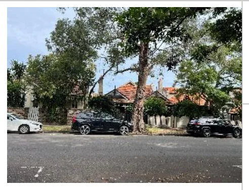
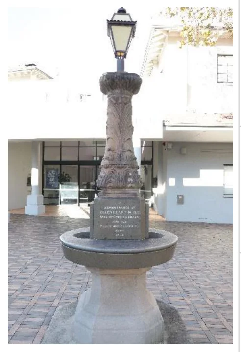
Mosman Masterplan—Heritage Review
MOSMAN VILLAGE SOUTH I25 Mosman Bowling Club 15 Belmont Road, Mosman
Figure 44: Mosman Bowling Club, 15 Belmont Road, Mosman.
SoS: The Mosman club is one of Sydney's older bowling clubs and both the organisation and this building demonstrate the growth of community facilities in these years of the suburb's expansion. The clubhouse is an important townscape feature of Belmont Road and a handsome example of its type.
Review: The bowling club exterior and grounds are substantially intact. The interwar clubhouse retains its key architectural characteristics despite a minor addition on the eastern side. The building is enhanced by the retention of its setting, including its symmetrical layout, brick boundary fencing, stone gate pillars, bowling greens, and perimeter garden beds. Significant views of the Scots Kirk Group are afforded.
While not likely to be original, the bowls shelters reflect the historic and ongoing use of the place for community and recreational purposes. It is likely that earlier iterations of the shelters existed.
The item is generally as described in its existing listing, and its heritage values are intact and legible. Management: Maintain existing listing and ensure development in the vicinity responds appropriately and in accordance with the Mosman Masterplan Heritage Design Guidelines. I193 Mosman Community Centre
1 Art Gallery Way, Mosman
Figure 45: Former church at 1 Art Gallery Way, Mosman.
SoS: A good example of the Federation Romanesque style of architecture. An interesting example of changing customs and a good adaptive re-use. Review: The former Methodist church building was altered in 1998 to accommodate its adaptive reuse as an art gallery and community centre. At the rear of the building new additions have been added, resulting in the frontages to Vista Street and Art Gallery Way having compromised integrity. The principal elevation, fronting Myangah Road, is substantially intact, apart from secondary glazing installed discretely on the stained-glass window openings. The front setting incorporates art installations and hard landscaping; while these elements are not original, they do not diminish the significance of the former church building.
The item is generally as described in its existing listing, and its heritage values are intact and legible. Management: Maintain existing listing and ensure development in the vicinity responds appropriately and in
August 2026
Attachment 1.1.4 Mosman Council
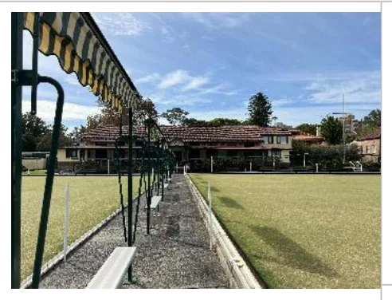
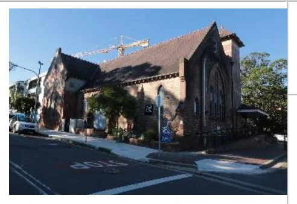
Mosman Masterplan—Heritage Review
MOSMAN VILLAGE SOUTH accordance with the Mosman Masterplan Heritage Design Guidelines. I416 Mosman Park oval and park
Myahgah Road and The Crescent
Figure 46: Oval at Myahgah Road and The Crescent.
SoS: A handsome playing field surrounded by pleasing architectural and landscape elements. Its location, design and excellent condition combine with its amphitheatre-like quality to make this oval and its context a very superior example of a municipal amenity. Review: The oval is intact and legible. It comprises a central sports oval, a ring of densely planted trees around the perimeter, and stone boundary fencing. At the northwestern corner is the Mosman War Memorial, which is also intact. It remains a publicly accessible, recreational open space area.
The item is generally as described in its existing listing, and its heritage values are intact and legible. Management: Maintain existing listing and ensure development in the vicinity responds appropriately and in accordance with the Mosman Masterplan Heritage Design Guidelines. I105 Mosman Primary School
2 Gouldsbury Street, Mosman
Figure 47: Mosman Primary School, 2 Gouldsbury Street, Mosman.
SoS: A modest school building socially significant for students who attended there. Review: The Mosman Primary School building exterior is substantially intact. The two-storey building retains its three-dimensional built form, slate clad roof, bichromatic face brick walls and regularly spaced timber framed windows. Along with Mosman oval located opposite, the school has a strong streetscape presence, lending to the neighbourhood character.
The item is generally as described in its existing listing, and its heritage values are intact and legible. Management: Maintain existing listing and ensure development in the vicinity responds appropriately and in accordance with the Mosman Masterplan Heritage Design Guidelines. I24 Scots Kirk Group 9 Belmont Road, Mosman
Figure 48: Side elevation of the Scots Kirk Group, 9 Belmont Road, Mosman.
SoS: The church group evidences the growth of the Presbyterian congregation and of community services in the Federation and Inter-War periods. The south building, with its modest landmark tower, is a good example of Inter-War Gothic architecture and a fine streetscape feature, not only in Belmont Road but also as a vista closure in Gladstone Avenue. Review: The Scots Group comprises a fine collection of early twentieth century buildings, all of which are highly intact. They retain the key attributes of their significance, including three-dimensional built form, brick, stone and
August 2026
Attachment 1.1.4 Mosman Council
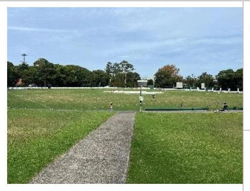
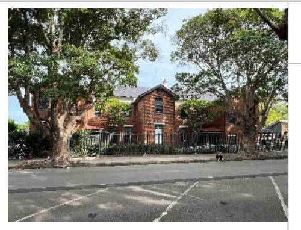
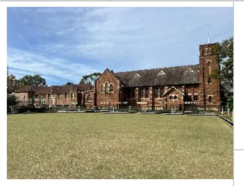
Mosman Masterplan—Heritage Review
MOSMAN VILLAGE SOUTH slate materials, decorative moulding and original fenestration and joinery. Views of the western elevations of the north and south buildings are afforded from within the Mosman Bowling Club. The addition of handrails to the front steps has not diminished the significance of the group.
The item is generally as described in its existing listing, and its heritage values are intact and legible. Management: Maintain existing listing and ensure development in the vicinity responds appropriately and in accordance with the Mosman Masterplan Heritage Design Guidelines. I415 The Antico Fountain Myahgah Road, Mosman
Figure 49: Fountain in Mosman Square.
SoS: A rare and valuable fountain which is associated with Mosman through the residency of a wealthy emigrant businessman. It has become a part of the Mosman collection of artefacts and reflects the class and nature of the residents of the area. Review: The fountain is highly intact and unaltered.
The item is generally as described in its existing listing, and its heritage values are intact and legible. Management: Maintain existing listing and ensure development in the vicinity responds appropriately and in accordance with the Mosman Masterplan Heritage Design Guidelines. I107 The Manse (Scots Kirk)
32 Gouldsbury Street, Mosman
Figure 50: 32 Gouldsbury Street, Mosman.
SoS: A good example of Arts and Crafts design from the later Inter-war period which relates well to nearby groups of buildings in Gouldsbury Street, The Crescent and the Scots Kirk Group. The house closes the southern vista of The Crescent. Review: The Manse exterior is substantially intact and retains its early original fence. It maintains its visual prominence in views from the Crescent HCA (C2) facing south. The building’s historical connection to the Scots Kirk group, and cohesiveness with other early interwar architecture in the area is unchanged.
The item is generally as described in its existing listing, and its heritage values are intact and legible. Management: Maintain existing listing and ensure development in the vicinity responds appropriately and in accordance with the Mosman Masterplan Heritage Design Guidelines.
August 2026
Attachment 1.1.4 Mosman Council
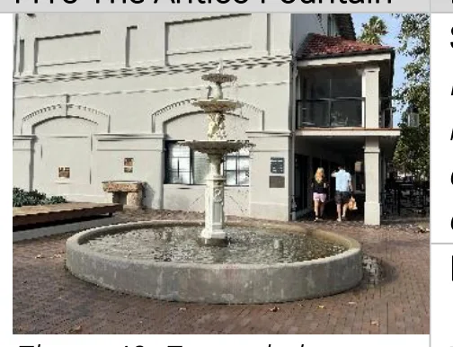
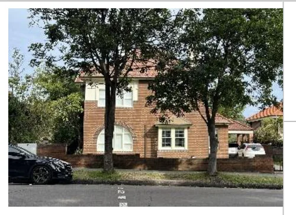
Mosman Masterplan—Heritage Review
MOSMAN VILLAGE SOUTH I417 War Memorial and steps
Myahgah Road, Mosman
Figure 51: War Memorial and steps, Myahgah Road, Mosman.
SoS: A splendid civic monument in a formal axial setting pleasingly related to Mosman Park, the Oval, the street and surroundings. It evidences the community's recognition of the sacrifice and death of war service men and women. Review: The war memorial, steps and landscaped axial setting remain intact and legible.
The item is generally as described in its existing listing, and its heritage values are intact and legible. Management: Maintain existing listing and ensure development in the vicinity responds appropriately and in accordance with the Mosman Masterplan Heritage Design Guidelines.
3.2.5 MOSMAN VILLAGE NORTH Mosman Village North is a small character area, comprising several blocks on the north side of Military Road, extending back to Ourimbah Road. This area forms half of the Spit Junction and, like the southern side of Spit Junction, it has a heterogenous character, both stylistically and typologically. It is densely built with few front or side setbacks to buildings. Early twentieth century shop-residences, mostly heavily altered, are dispersed along Military and Spit Roads between later twentieth century developments. Its heritage values and historic legibility have been compromised by intrusive development and extensive modifications. There are several large-scale developments in the area that are particularly detracting, including the Bridgepoint elevated walkway and shopping centre, and the open car wash yard between Boronia (I157) and the Whitehouse (I83).
The northern portion of Mosman Village North, along Heydon Road, has a more suburban character comprising a mix of twentieth century detached dwellings, medium scale apartments and the St Luke’s Anglican Church group. It is distinguished from the remainder of the character area by the front gardens, low stone boundary walls, trees and lower scale development.
MOSMAN VILLAGE NORTH I157 ‘Boronia’, House 624–632 Military Road, Mosman
Figure 52: 624-632 Military Road, Mosman.
SoS [extract]: 'Boronia' is an excellent example of a substantial villa in the Victorian Filigree style on a site of ample frontage. The handsome symmetry of the house is complemented by the open garden and the stone and iron front fence. The building and its setting are in excellent condition … Review: Boronia retains a highly intact exterior and setting, including its formal garden, original fencing and mature trees. The place holds strong visual prominence within its context due to its distinctive and uncommon qualities. As a Victorian-era villa set back within a formal garden, it presents a notable contrast to the surrounding highly commercialised and modernised environment, contributing to its landmark presence.
August 2026
Attachment 1.1.4 Mosman Council
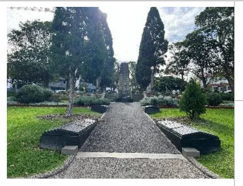
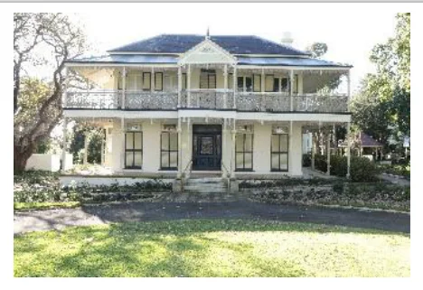
Mosman Masterplan—Heritage Review
MOSMAN VILLAGE NORTH
The item is generally as described in its existing listing, and its heritage values are intact and legible. Management: Maintain existing listing and ensure development in the vicinity responds appropriately and in accordance with the Mosman Masterplan Heritage Design Guidelines. I83 ‘The Whitehouse’, former house, now offices
89B Cowles Road, Mosman
Figure 53: 89B Cowles Road.
SoS: Though unsympathetically modified, the building shows evidence of the former character and use of Military Road, prior to its development as a shopping centre. Review: The former house has been previously altered and more recently (c.2019) reconstructed to resemble its original design. Overall it has moderate integrity, retaining its overall built form. The reconstructed elements, although not original fabric, are generally appropriate and in keeping with the building’s period of construction and style. The setting of the house has been unsympathetically altered and retain little to no evidence of the original context apart from the front setback to Cowles Road.
The Statement of Significance was prepared prior to the reconstruction of lost elements. It acknowledges the unsympathetic modifications to the place, noting that its significance derives from its importance as an example of the former character and use of Military Road.
As one of the few Victorian era buildings in the study area, the building remains important as an example of a fine residential villa that preceded the commercial development of Military Road. This association is strengthened by the house’s proximity to Boronia house.
The replacement of the unsympathetic car wash development and inappropriate landscaping would help to improve the setting of the place allowing its built form to be appreciated.
Notwithstanding the unsympathetic setting, the item is generally as described in its existing listing, and its heritage values are intact and legible. Management: Management: Maintain existing listing and ensure development in the vicinity responds appropriately and in accordance with the Mosman Masterplan Heritage Design Guidelines.
August 2026
Attachment 1.1.4 Mosman Council
Mosman Masterplan—Heritage Review
MOSMAN VILLAGE NORTH I282 Mosman Masonic Centre
42 Spit Road, Mosman
Figure 54: 42 Spit Road.
SoS: A symbol of the influence of Freemasonry in Mosman, as well as being a surprising and elegant Arts-and -Crafts element of the streetscape. Review: The Mosman Masonic Centre is highly intact. The primary building volume has been retained, and its upper- level windows, detailing and original finishes are intact. At ground level a significant portion of original fabric remains, including the ingo (recessed) shopfront entries, stall risers, tiles, and double entrance doors.
The item is generally as described in its existing listing, and its heritage values are intact and legible. Management: Maintain existing listing and ensure development in the vicinity responds appropriately and in accordance with the Mosman Masterplan Heritage Design Guidelines. I198 St Luke’s Anglican Church Group
4 Heydon Street, Mosman
Figure 55: The church building at St Luke's Anglican Group.
Figure 56: The Arts and Crafts hall at St Lukes Anglican Group.
Figure 57: The Rectory at St Luke's Anglican Church Group.
SoS: The church is an example of the impact of modern building technology on traditional church planning, liturgy and form, designed by one of Australia's most distinguished and prolific architects. Review: The cream brick postwar church building exhibits no obvious changes and its corner location and tall steeple enhance its prominence in local views.
Several other church buildings are included in the heritage curtilage but are not identified as significant elements in the SoS. These include a reasonably intact Federation Arts and Crafts era hall fronting Heydon Street and a red brick two storey rectory with a later addition on its northern side. The rectory is relatively concealed from streetscape views because of the site topography and the building’s deep setback from Ourimbah Road. The open space setting and low stone walls complement the site architecture.
The church and associated buildings continue to demonstrate the attributes and historic and social connections identified in its statement of significance.
The item is generally as described in its existing listing, and its heritage values are intact and legible. Management: Maintain existing listing and ensure development in the vicinity responds appropriately and in accordance with the Mosman Masterplan Heritage Design Guidelines.
August 2026
Attachment 1.1.4 Mosman Council
Mosman Masterplan—Heritage Review
3.2.6 SPIT ROAD CORRIDOR The Spit Road Corridor character area has a linear footprint that follows the arterial road on a roughly north south alignment. The southern end of Spit Road, after its junction with Military Road, transitions from the commercial to residential development. Medium scale apartment blocks with shallow front setbacks are predominant up until Awaba Street, after which point detached single storey dwellings have greater representation. Architecturally, the built form reflects mostly twentieth century development along with numerous examples of recent infill. Heritage places in this area are widely distanced from one another.
SPIT ROAD CORRIDOR I283 ‘Jerpoint’, Former house now flats
51 Spit Road, Mosman
Figure 58: Principal elevation. (Source: Realestate.com.au, 2026)
SoS: An interesting substantial house of eclectic design, which appears to be one of a pair of similarly eclectic residences in this vicinity. Review: The principal elevation and overall built form are concealed in public domain views by dense vegetation and trees in the front garde. Based on recent real estate photography (2026), the building exterior and setting are substantially intact. The upper level verandah has been enclosed but in a sympathetic manner. From the street views of the former house are obscured by vegetation. The house has a near identical design to 68 Spit Road (I285).
The item is generally as described in its existing listing, and its heritage values are intact and legible. Management: Maintain existing listing and ensure development in the vicinity responds appropriately and in accordance with the Mosman Masterplan Heritage Design Guidelines. I284 Electrical Substation No.204
Spit Road (rear, on Punch Lane), Mosman
Figure 59: Electrical Substation No. 204.
SoS: A small but essential urban utility building which, in the local context, has been designed to complement the environment. It demonstrates the attention to aesthetics prevalent in the area in the period and is a relic of the first phase of electricity supply in the suburb. Forms part of a fine collection of architecturally stylised substations in the Municipality. Review: The electrical substation is substantially intact. It retains its primary built volume, face brick walls, parapet, rendered coping, fanlight, entablature, and key stone. It is similar in style and scale to Electrical substation No. 149 at 23 Melrose Street (I136).
The substation fronts onto Punch Lane, a narrow residential laneway that primarily provides rear access to existing apartment blocks. The lane is characterised by numerous rear car parking areas, giving it a predominantly service-oriented function. Within this
August 2026
Attachment 1.1.4 Mosman Council
Mosman Masterplan—Heritage Review
SPIT ROAD CORRIDOR context, the substation appears relatively isolated and disconnected from the surrounding built form.
The item is generally as described in its existing listing, and its heritage values are intact and legible. Management: Maintain existing listing and ensure development in the vicinity responds appropriately and in accordance with the Mosman Masterplan Heritage Design Guidelines. I285 Former House, now flats
68 Spit Road, Mosman
Figure 60: 68 Spit Road.
Figure 61: Former house now flats.
SoS: A representative example of a large Queen Anne-style house in a fairly intact condition. It appears to be one of a pair of similar eclectic houses in the vicinity. Review: The building exhibits several modifications, including alterations to windows and introduction of an unsympathetic fence. Overall, it remains legible despite changes. It continues to have a strong presence on the street, enhanced by its prominent corner location and dual street frontage. The house has a near identical design to 51 Spit Road (I283).
The item is generally as described in its existing listing, and its heritage values are intact and legible. Management: Maintain existing listing and ensure development in the vicinity responds appropriately and in accordance with the Mosman Masterplan Heritage Design Guidelines. I356 Road Pavement Dalton Road
Figure 62: Portion of concrete kerb on Spit Road.
Figure 63: Portion of the surviving concrete road at the eastern termination of Dalton Road.
SoS: A 400 metre section of local road between Spit Road and Cowles Road, with concrete surface, originally laid without expansion joints but now having these added through saw-cutting of the pavement. Review: Originally, Dalton Road was a through road connecting to Spit Road. Based on historic aerial photographs, it appears that Dalton Road was truncated between 1971 and 1978, resulting in the loss of its connection to Spit Road and its conversion to a dead-end street.
Dalton Road today is predominately surfaced in asphalt with concrete kerbs, footpath and crossovers. At the eastern end of the street, where it overlaps with the Masterplan area the road terminates and there is an open space public recreation area with a pedestrian through link to Spit Road. The section of the road contained in the Masterplan area retains a representative portion of the original concrete surface.
August 2026
Attachment 1.1.4 Mosman Council
Mosman Masterplan—Heritage Review
SPIT ROAD CORRIDOR The Statement of Significance specifically refers to the concrete surfaced road which was truncated between 1971-978 and resurfaced c.2004. Consequently it fails to provide evidence of the historic development of concrete roads in Mosman demonstrated by surviving, more intact examples, such as Brierley Street (not listed). Management: Retain the concrete portion of road included in the Masterplan area as evidence of the historic formation of Dalton Road in concrete.
3.2.7 BALMORAL RIDGE Balmoral Ridge is a hilly area with significant views to Balmoral Beach. The building stock exhibits a greater proportion of postwar and twenty first century housing and medium-scale apartments. While this area has a relatively subdued heritage character, the listed places contained within are important and comprise rare surviving examples of historic development that occurred between the Spit Road Corridor and Balmoral Beach.
BALMORAL RIDGE I225 ‘Hendon’ house 4 Punch Street, Mosman
Figure 64: 4 Punch Street.
SoS: A distinguished, small house with fine architectural detailing and a high degree of intactness. Review: The house remains largely intact with some modifications to the front fence. It is noted that the place exhibits a relatively modest design and is isolated from other heritage places. Management: Maintain existing listing and ensure development in the vicinity responds appropriately and in accordance with the Mosman Masterplan Heritage Design Guidelines. I178 ‘Cora Lynn' house 47 Moruben Road, Mosman
Figure 65: 47 Moruben Road.
SoS: An elegant example of a Queen Anne house, in a garden setting. Review: The house, garden, fence and mature trees remain intact and legible.
The item is generally as described in its existing listing, and its heritage values are intact and legible. Management: Maintain existing listing and ensure development in the vicinity responds appropriately and in accordance with the Mosman Masterplan Heritage Design Guidelines.
August 2026
Attachment 1.1.4 Mosman Council
Mosman Masterplan—Heritage Review
BALMORAL RIDGE
I406 Divided Road Moruben Road, Mosman
Figure 66: Moruben Road.
SoS: Mosman's divided roads are integral to the Municipality's visual character and sense of place. Built as a utilitarian response to the steep harbourside topography, they reflect, in their fabric and construction technology, the development of Mosman's suburban structure. The large collection of these features makes Mosman instantly and uniquely recognisable. Review: The divided road layout remains intact and legible.
The item is generally as described in its existing listing, and its heritage values are intact and legible. Management: Maintain existing listing and ensure development in the vicinity responds appropriately and in accordance with the Mosman Masterplan Heritage Design Guidelines.
3.2.8 MIDDLE HARBOUR RIDGE Middle Harbour Ridge is a small character area that transitions between the Spit Road Corridor and suburban development around Quakers Hat Bay. It comprises a mix of late interwar, modern and recent development, mostly in the form of larger detached housing. Streetscapes are enhanced by the historic stone steps, trees and front gardens. While there are no heritage-listed buildings contained within, it is noted that the area abuts Killarney Estate HCA (C6).
MIDDLE HARBOUR RIDGE I322 Steps, Bapaume Road Bapaume Road and Killarney Street
Figure 67: Bapaume Road.
SoS: The pedestrian steps of Mosman are integral to the visual character and sense of the place. Built as a utilitarian response to the steep harbourside topography the large collection of steps and associated paths reflect, in their fabric and construction, the development of Mosman's suburban structure. In general they are pleasing visual features in the streetscape. They are among the features that make the suburb instantly recognisable as Mosman. I390 Steps, Killarney Street
Figure 68: Killarney Street.
Review: The stone steps remain intact and publicly accessible.
The item is generally as described in its existing listing, and its heritage values are intact and legible. Management: Maintain existing listing and ensure development in the vicinity responds appropriately and in accordance with the Mosman Masterplan Heritage Design Guidelines.
August 2026
Attachment 1.1.4 Mosman Council
Mosman Masterplan—Heritage Review
3.4 HERITAGE CONSERVATION AREAS The review of the Heritage Conservation Areas evaluates the significance of the HCAs, considering the heritage values of the streetscapes wholistically as well as the contribution made by individual places. It considers the extent to which the HCA’s heritage values remain intact, and the accuracy of individual place rankings based on current conditions.
3.4.1 KILLARNEY ESTATE (C5) The Masterplan area overlaps with a small portion of Dalton Road included in the Killarney Estate HCA. The area is included in the Spit Road Corridor.
The subject area is also included in the curtilage for the Heritage Item ‘Road Pavement’ (I356) which is discussed in Section 3.2.6.
Figure 69: Killarney Estate HCA rankings map, with the subject site included in the Masterplan area outlined in red. (Source: Mosman Council)
STATEMENT OF SIGNIFICANCE Killarney Estate HCA (C5) The Killarney Estate Conservation Area is one of the most interesting conservation areas in Mosman, which, because of the modest scale and the first-glance ordinariness of the street, can be easily overlooked. The compelling aesthetic interest lies in the several different, repetitive designs of small houses that can be seen. The historical significance of the area lies first in the architectural and townscape unity which was furthered by rapid development following the 1910 subdivision and sale of the 'Killarney' land, and secondly in the fact that Dalton Street was Mosman's first to be formed in concrete. (Source: 1996, prepared by Godden Mackay Heritage Consultants)
August 2026
Attachment 1.1.4 Mosman Council
Mosman Masterplan—Heritage Review
DESCRIPTION The portion of the Killarney Estate within the Masterplan Area comprises the eastern end of Dalton Road, where it now terminates, and an open space pedestrian through-link connecting the eastern end of Dalton Road with Spit Road.
Figure 70: Aerial photograph showing Killarney Estate HCA (red outline) and the portion which overlaps with the Masterplan area. (Source: Nearmap with NBRS edits)
The eastern end of Dalton Road retains a representative section of the original concrete road surface that once extended along the length of the road when it functioned as a through road to Spit Road. The surviving concrete pavement is bordered by asphalt.
The public recreation area and pedestrian link comprise several trees (planted after 1978), undulating lawn, a concrete pedestrian pathway and a park bench. The trees form an effective visual screen between the residential environment of Dalton Road and the more heavily trafficked Spit Road corridor.
The central and western sections of Dalton Road are lined with detached and semi-detached dwellings predominantly dating from the early twentieth century. These adjoin but lie outside the Masterplan Area.
Figure 71: Portion of Dalton Road included in Killarney Estate HCA, views from Spit Road facing west. (Source: Google Maps)
Figure 72: Portion of Dalton Road included in Killarney Estate HCA, views from Dalton Road facing east. (Source: Google Maps)
August 2026
Attachment 1.1.4 Mosman Council
Mosman Masterplan—Heritage Review
Figure 73: Portion of original concrete surfaced road that has been retained at the eastern end of Dalton Road. (Source: Google Maps)
Figure 74: The public recreation reserve between Dalton and Spit Roads. (Source: Google Maps)
REVIEW OF HERITAGE VALUES Based on the Statement of Significance, the heritage significance of the Killarney Estate HCA) principally derives from its development as a subdivision of the former Killarney Estate and from the construction of Dalton Road, which was the first concrete street formed in Mosman. Key contributory elements include: • The original subdivision pattern • Early twentieth century housing stock, including its architectural cohesion and repetitive building forms • The concrete-formed roadway.
Dalton Road generally retains its early twentieth century residential character. None of the contributory buildings within the HCA are located within the Masterplan area.
The Masterplan area does overlap with the eastern end of Dalton Road, including the road termination, pedestrian link and small public reserve.
Historically, Dalton Road extended eastward to Spit Road. Between 1971 and 1978, the road was truncated, removing its vehicular connection to Spit Road and resulting in the current no-through road arrangement. Consequently, the present road configuration, pedestrian through-link, public open space, and associated landscaping, trees and plantings do not have any heritage significance, as they reflect later alterations rather than the area's historic character.
August 2026
Attachment 1.1.4 Mosman Council
Mosman Masterplan—Heritage Review
Figure 75: Original layout of Dalton Road with concrete road surface. The location of the pedestrian through-link is outlined in blue. (Source: NSW Spatial Services, Historical Imagery)
The eastern end of Dalton Road, which falls within the Masterplan area, retains a section of the original concrete road surface. As the remainder of Dalton Road has since been resurfaced with asphalt, this surviving section represents the only remaining physical evidence of the street's historic development as Mosman's first concrete roadway. Although limited in extent, the surviving concrete fabric provides sufficient evidence of the original road construction to demonstrate and interpret this aspect of the HCA's significance. The remaining section is sufficiently intact and legible to convey its heritage value.
RECOMMENDATIONS The Killarney Estate HCA continues to exhibit the principal elements and qualities identified in its Statement of Significance, and no changes are recommended to the existing heritage listing or curtilage.
The eastern portion of the HCA that falls within the Masterplan area retains the only surviving section of the original concrete road surface associated with Dalton Road, recognised as the first concrete-formed street in Mosman. Although only a representative portion of the original road fabric remains, it is sufficiently intact and legible to enable an understanding and interpretation of this aspect of the HCA’s historic development and heritage significance.
The pedestrian through-link and small public reserve at the eastern end of Dalton Road do not have any intrinsic heritage significance, as they result from the later truncation of Dalton Road and subsequent landscape modifications. However, given the potential for future redevelopment along Spit Road, the reserve, associated vegetation and pedestrian link perform an important contextual role by maintaining a physical and visual transition between the quieter residential character of Dalton Road and the more intensive transport corridor character of Spit Road. For this reason, there is benefit in these elements remaining within the existing curtilage of the Killarney Estate HCA.
The Killarney Estate HCA forms part of a broader area of low-scale residential development located to the east of Spit Road. As a relatively cohesive streetscape, the HCA will be vulnerable to visual impacts from adjacent development. Requirements for development adjoining the HCA are outlined in the Mosman Masterplan Heritage Design Guidelines (Appendix A).
August 2026
Attachment 1.1.4 Mosman Council
Mosman Masterplan—Heritage Review
3.4.2 LANG STREET HCA (C6) Most of Lang Street HCA (C6) is in the Ourimbah Triangle distinct character area. The properties at 2 Lang Street and 522-524 Military Road form part of the Military Road Corridor distinct character area.
Figure 76: Lang Street HCA layout map. (Source: Mosman Council LEP with NBRS edits)
STATEMENT OF SIGNIFICANCE The small Lang Street Conservation Area is notable for several things. First, it is aesthetically very pleasing on account of ample street plantings, the group at the south end being a significant stand of mixed Eucalypts, by a treed median strip and by wide grassed verges. Its architectural components are modest and varied in type and style presenting a cohesive visual character predominantly of, and representative of, the early twentieth century, but they possess much
August 2026
Attachment 1.1.4 Mosman Council
Mosman Masterplan—Heritage Review
idiosyncratic interest and have been less seriously tainted by obtrusive modifications than those in many other conservation areas such as high front fences, painted brickwork and inappropriate first floor additions and unsympathetic garages and carports.
DESCRIPTION The Lang Street HCA (C6) encompasses all of Lang Street–a straight road running in a north–south orientation between Ourimbah Road and Military Road, Mosman. The street is laid out on relatively flat land that falls gently towards Ourimbah Road.
Its setting is enhanced by mature street trees, a central treed median strip, grassy verges and shallow front gardens.
Figure 77: Lang Street, mid section, facing south towards Military Road. Figure 78: Lang Street, north end, facing south from Ourimbah Street.
Overall, Lang Street exhibits a relatively cohesive streetscape character within its central and northern sections. This portion of the HCA comprises early twentieth century housing as well as the divided road central median strip (Heritage Item I87). The southern end presents a more varied character, reflecting its interface with the commercial context of Military Road and the greater prevalence of recent infill development.
Central and north portions 21-51, 6-36 Lang Street and 80-82 Ourimbah Road Architecturally, the central and northern sections of the street are characterised by modest Federation and Interwar single-storey detached and semi-detached dwellings. The only exception is the late twentieth-century residential dwelling located at the north-eastern corner of Lang Street and Ourimbah Road (80 Ourimbah Road). Collectively, the dwellings generally retain significant original fabric and design elements, including their overall form and roof configurations, external wall cladding, original windows and detailing, and characteristic brick, timber and terracotta materiality.
Notwithstanding this, a number of unsympathetic alterations have diminished the integrity of several properties and the HCA overall. These include intrusive garages and carports (Nos. 21, 27 and 31 Lang Street), painted face brickwork (Nos. 16, 21, 22, 29, 30 and 31 Lang Street), visible additions (Nos. 22 and 30 Lang Street), and the modification, replacement or addition of elements to principal facades (Nos. 21, 25 and 26 Lang Street).
August 2026
Attachment 1.1.4 Mosman Council
Mosman Masterplan—Heritage Review
Figure 79: Aerial photograp h showing the central and northern portions of the Lang Street HCA. (Source: Nearmap with NBRS edits)
Figure 80: Row of Contributory-2 houses at 41-49 Lang Street, northern section of the HCA. Figure 81: Pair of Contributory-1 houses at 20 and 22 Lang Street, mid section of the HCA.
August 2026
Attachment 1.1.4 Mosman Council
Mosman Masterplan—Heritage Review
Figure 82: Contributory-1 house, 26 Lang Street. Figure 83: Divided road at north end of Lang Street.
Southern portion By contrast, the southern portion of Lang Street has a more mixed architectural character. This end comprises two-storey shop residence buildings, a carpark and a warehouse (522- 524 Military Road), a substantial three storey multi residential building (2 Lang Street, also known as 16 Bardwell Road), early twentieth century detached single-storey housing (1-7 Lang Street) and a continuous row of late twentieth century / early-twenty first century two storey residential infill development (9-19A Lang Street).
Figure 84: Aerial view showing the southern portion of the Lang Street HCA. (Nearmap with NBRS edits)
August 2026
Attachment 1.1.4 Mosman Council
Mosman Masterplan—Heritage Review
522-524 Military Road and 2 Lang Street The Federation-era shop-residence buildings at 522-524 Military Road (Figure 85 and Figure 86) occupy a corner allotment, with their primary frontage addressing Military Road. The secondary frontage to Lang Street is characterised by an unembellished brick wall, punctuated by a lone oriel window.
The shop-residence buildings have undergone substantial alteration, including: • Loss of the original fenestration patterns and ground-floor window and door joinery • Overpainting of the original face brickwork and textured rendered finishes • Introduction of an unsympathetic monochromatic colour scheme and contemporary awning canopy • Installation of visually intrusive signage
To the rear of the buildings, fronting Lang Street, is a concrete-surfaced car park, partially enclosed by a tall fence, together with a solidly massed mid to late twentieth-century brick warehouse constructed to the street boundary (Figure 88).
2 Lang Street contains a large three-storey brick apartment complex occupying an extensive allotment extending through to Bardwell Road to the east. Constructed in the early 1990s, the development is characterised by its substantial scale and bulky built form. The building features hipped roofs and face brick walling but does not exhibit a clearly identifiable architectural style or notable design detailing. Tall brick fences are located along the street frontage, contributing to a relatively enclosed presentation to Lang Street.
Figure 85: Contributory-1 graded 522 and 524 Military Road. Figure 86: Shop fronts to 522-524 Military Road.
Figure 87: Detracting development at 2 Lang Street, Mosman. Figure 88: Warehouse at rear of 522-524 Military Road, fronting Lang Street, Mosman.
9-19A Lang Street The group of neutral-graded buildings at 9-19A Lang Street comprises 2 townhouses (9-11 Lang Street) and 3 two-storey detached house that broadly date from the late twentieth and early twenty-first centuries. Architecturally the group does not display any distinguishing features synonymous with an architectural style. Some of the properties have intrusive or
August 2026
Attachment 1.1.4 Mosman Council
Mosman Masterplan—Heritage Review
visually dominant elements such as tall fencing/vegetation to the street boundary (9-11, 13, 17 Lang Street) and prominent garages (19, 19A Lang Street).
Figure 89: Neutral-4 place, 11 Lang Street. Figure 90: Neutral-4 place, 15 Lang Street.
Figure 91: Neutral-4 place, 17 Lang Street. Figure 92: Neutral-4 place, 19, 19A Lang Street.
1-7 Lang Street Within the southern portion of the precinct, there are four contributory-graded detached houses dating from the early-to-mid twentieth century. No. 1 Lang Street is distinguished from the group as a modest interwar dwelling of later construction. Nos. 3 and 5 Lang Street are Federation-era houses that exhibit typical characteristics of the Queen Anne style, with No. 5 featuring a prominent dormer addition to the front roof slope. Of this group, No. 3 Lang Street retains the highest level of integrity and provides the clearest expression of Federation Queen Anne design. The principal elevations of Nos. 1, 5 and 7 Lang Street are substantially screened by tall fencing and vegetation, largely concealing their visibility from the public domain.
Figure 93: Contributory-1 place, 1 Lang Street. Figure 94: Contributory-1 place, 3 Lang Street.
August 2026
Attachment 1.1.4 Mosman Council
Mosman Masterplan—Heritage Review
Figure 95: Contributory-2 place, 5 Lang Street. Figure 96: Contributory-2 place, 7 Lang Street.
REVIEW OF HERITAGE VALUES The Statement of Significance identifies the following attributes as contributing to the heritage values of the Lang Street HCA (C6):
• Street plantings, the treed median strip and wide grassed verges. • A cohesive visual character. • Modest early twentieth-century architecture that is varied in type and style, and possesses a degree of ‘idiosyncratic interest’ • High levels of integrity and intactness, described as being ‘less seriously tainted by obtrusive modifications than those in many other conservation areas’, with an absence of high front fences, painted brickwork, inappropriate first-floor additions, and unsympathetic garages and carports.
As set out in the Statement of Significance, the HCA derives its significance from its collection of early twentieth-century buildings and the relatively high integrity of individual places, which collectively contribute to a visually cohesive streetscape character.
The street plantings, wide grassed verges and treed median strip are located on public land and remain substantially intact. These elements continue to make a positive contribution to the streetscape and clearly express the heritage values identified in the Statement of Significance. While the treed median strip is separately listed as Heritage Item I87, it nonetheless remains an important contributor to the character and setting of Lang Street.
The northern and central portions of the HCA generally retain a cohesive visual character, demonstrated by continuous groupings of early twentieth-century houses. For the most part the houses retain key characteristics that contribute to the streetscapes heritage character, including roof forms, chimneys, front setbacks, window and door joinery. It is noted, however, that there are also numerous examples of intrusive garages, painted brickwork and visible additions and modifications which conflict with the description in the statement of significance. Notwithstanding these changes, the heritage values identified in the Statement of Significance remain broadly legible, albeit diminished to some degree by unsympathetic alterations.
In contrast, the southern portion of the HCA presents a poor entry point to the conservation area. The southern portion of the precinct, at its intersection with Military Road, is neither visually cohesive nor intact, and its heritage character has been substantially diluted by infill development. Consequently, this area no longer demonstrates the qualities and attributes identified in the Statement of Significance.
August 2026
Attachment 1.1.4 Mosman Council
Mosman Masterplan—Heritage Review
The four contributory graded houses at 1-7 Lang Street are physically and visually separated from the broader concentration of early twentieth-century development by the intervening row of recent infill development at 9-19A Lang Street, the large intrusive development at 2 Lang Street and carpark and warehouse to the rear of 522-524 Military Road. This separation has weakened the visual cohesion of the conservation area and diminished the historic context and setting of the heritage buildings. Three of the four contributory-graded houses have tall fencing and vegetation screening views of the heritage buildings. This limits their contribution to the streetscape and directly conflicts with the Statement of Significance, which identifies the absence of high front fences as a characteristic feature of the area. In addition, 1 Lang Street is a modest dwelling of a different period and architectural style to the neighbouring Federation-era houses. As an isolated group these houses do not read as a cohesive and legible unit and their relationship to other contributory buildings in the streetscape is weakened because of their physical and visual separation.
The Federation-era shop-residence buildings at 522-524 Military Road also make only a limited contribution to the significance and heritage values of the HCA due to their differing typology, street presentation and low level of integrity. Unlike the residential dwellings fronting Lang Street, Nos. 522-524 Military Road comprise mixed-use shop-residence buildings with a primary frontage to Military Road, with the frontage to Lang Street being a car park and bulky warehouse constructed to the street boundary. The commercial character of the buildings reflects the historic development pattern of the Military Road commercial corridor rather than the predominantly residential character of Lang Street. As such, their relationship with Lang Street is transitional in nature and they do not materially reinforce the cohesive residential character. The buildings have also undergone substantial alteration which has significantly reduced the buildings' integrity and contributory value. Accordingly, the assignment of a Contributory-1 grading to 522 and 524 Military Road appears inconsistent with the Mosman DCP criteria, which define such places as buildings where the principal street-facing portion remains largely unaltered.
In addition, the warehouse and car park located to the rear of the shop-residence buildings, and screened by tall fencing, create a visually unsympathetic entry to the street.
The residential buildings at 2 Lang Street (graded detracting) and 9-19A Lang Street (graded neutral) do not have any identified contributory value. Architecturally these places do not exhibit any distinguishing features that add value to the streetscape or reflect a contextual design response. Their presentation differs markedly from the surrounding residential development and interrupts the visual consistency that underpins the significance of the conservation area.
Extensive infill development on both sides of the street has further isolated the contributory buildings, severing their visual and contextual relationship with the more intact central and northern sections of Lang Street. As a result, the heritage context has become fragmented and the ability of this southern section to contribute to the significance of the HCA has been substantially diminished.
RECOMMENDATIONS—HERITAGE LISTING In its entirety the Lang Street Heritage Conservation Area (HCA) does not demonstrate the qualities and attributes described in its Statement of Significance, specifically those relating to visual cohesiveness and intactness.
Given the poor level of intactness and cohesiveness at the southern end of Lang Street, together with its interface with the Military Road corridor, it is recommended that 1-19A and
August 2026
Attachment 1.1.4 Mosman Council
Mosman Masterplan—Heritage Review
2 Lang Street and 522-524 Military Road, Mosman, be removed from the Lang Street HCA (C6) as per the diagram in Figure 97. These properties no longer make a meaningful contribution to the established heritage character or significance of the HCA.
Figure 97: Recommended amendment to the Mosman LEP, Lang Street HCA.
August 2026
Attachment 1.1.4 Mosman Council
Mosman Masterplan—Heritage Review
While it is acknowledged that reducing the extent of the HCA would alter its current curtilage, the exclusion of these properties presents an opportunity to facilitate more considered and contextually appropriate design responses at this key transition point. Removal of this section from the HCA would also provide greater flexibility to achieve an appropriate graduation of built form and development heights between the higher-intensity Military Road corridor and the lower-scale Lang Street heritage precinct.
Importantly, the heritage significance of the remaining HCA would continue to be protected. Any future redevelopment of land adjoining the conservation area would remain subject to heritage impact assessment and would be required to demonstrate an appropriate response to the significance and setting of the HCA. Furthermore, it is unlikely that redevelopment would adversely affect the mature street trees and landscaped verges that contribute to the character of Lang Street, as these elements are located within a Council-owned road reserve and are therefore outside any future development site boundaries.
The HCA forms part of a broader area of low-scale residential development located to the north of Military Road. As a relatively cohesive streetscape, the HCA is vulnerable to visual impacts from adjacent development. Specific requirements for development adjoining the Lang Street HCA are outlined in the Mosman Masterplan Heritage Design Guidelines (Appendix A).
August 2026
Attachment 1.1.4 Mosman Council
Mosman Masterplan—Heritage Review
3.4.3 MILITARY ROAD HCA (C7) The Military Road HCA (C7) is partially located within the Mosman Village South distinct character area. This includes sections at the northern end near the Spit Road Junction, as well as a central portion on the western side of Military Road between Gouldsbury Street and Belmont Road, which overlap with the Mosman Village South area (Figure 98).
Within these overlapping sections, properties are predominantly comprised of shop- residences and commercial buildings as well as the Mosman Council Civic Centre.
Figure 98: Extract from the Military Road HCA ranking map, 2017. Sections of the HCA outlined in red are included in the study area (Source: Mosman Council LEP with NBRS edits)
August 2026
Attachment 1.1.4 Mosman Council
Mosman Masterplan—Heritage Review
STATEMENT OF SIGNIFICANCE The historic significance of Military Road is that it formed part of the earliest residential and military development of Mosman. It is associated with the area as a major defence post in Sydney Harbour. The road influenced the growth of the suburb because it was, and still is, the major traffic route to and from the area. It became the centre of retail and commercial activity in the suburb.
In aesthetic terms the commercial and retail area of Military Road is a marvellous microcosm of the range of architecture to be found in Mosman, distinctively combining retail and residential uses in a unified, lively and diverse linear and curvilinear streetscape. Its scale is pleasantly moderate and the variety of forms materials, textures and colours is full of interest. The successful integration of some facades of later and very recent vintage, as can be seen here, indicates that good design is an ageless quality. The 'village' atmosphere prevails despite some unhappy incursions. Several impressive buildings elevate the generally good aesthetic quality of the Conservation Area to a high level of value. The social significance of the area lies first in the fact that here can be seen a great many of Mosman's municipal, commercial and principal educational institutions, as well as a stretch of residential development. It is associated with prominent developers who erected speculative ensembles of shops, dwellings and commercial occupancies, and with the sequences of tenants in retail, trade and commerce activities many of them well- known identities past and present in Mosman. (Source: Mosman Heritage Review, 1996, Godden Mackay Heritage Consultants)
DESCRIPTION—NORTHERN PORTION At the northern end of the Military Road the HCA forms part of the Spit Road Junction. This area is a major and heavily trafficked commercial hub of Sydney’s Lower North Shore and a critical gateway connecting the Northern Beaches with the Sydney CBD.
Figure 99: View of the Spit Junction, facing south towards the entrance of the Military Road corridor. Figure 100: Row of shopfronts at the Military Road intersection, included in the Military Road HCA.
Figure 101: View of shopfronts fronting Spit Junction, included in the Military Road HCA.
Figure 102: Facing southwest from the Spit Junction, showing the Bridgepoint elevated walkway..
August 2026
Attachment 1.1.4 Mosman Council
Mosman Masterplan—Heritage Review
Southwest corner The southwestern corner of the intersection consists of a row of Victorian and Federation era shop-residence buildings at 557, 559, 561, 563, 565 Military Road (all graded Contributory-1) and two modern infill developments completing the row at 567, and 571 Military Road. To the rear of this row, at the corner of Myahgah Road, is the Mosman Council Civic Centre at 573 Military Road.
Figure 103: Southwestern corner, northern portion of the Military Road HCA. (Source: Nearmap with NBRS edits)
The Victorian Italianate building (557), and the adjoining Federation Arts and Crafts shop residence buildings (559-565) have a consistent scale and built form and retain some stylistic detailing typical of their construction period. All shopfronts have been extensively altered at ground level to the extent that they no longer retain any historic legibility and little to no original fabric. At the upper levels, the buildings are generally intact except for the balcony of No. 565, which has been infilled with timber framed glazing.
Figure 104: 557 Military Road. Figure 105: 559 (right) and 561 (left) Military Road.
August 2026
Attachment 1.1.4 Mosman Council
Mosman Masterplan—Heritage Review
Figure 106: 563 (right) and 565 (left) Military Road. Figure 107: 567 (right) and 571 (left) Military Road.
To the rear of this row, at the corner of Myahgah Road, is 573 Military Road, also known as the Mosman Council Civic Centre. This complex of council buildings predominantly dates from the late 1980s redevelopment of the site. The interwar-era council chambers building (graded Contributory-2) is extant, although it has been substantially remodelled.
These modifications have significantly altered the building’s external appearance (see original appearance at Figure 15 - Figure 19). Permanent changes include: the rendering of face brick walls; alterations to openings; installation of new ground-floor window frames; removal of the original raised metal lettering spelling ‘Mosman Municipal Council’; loss of engaged pilasters and string courses; and the addition of a bulky verandah canopy roof clad in terracotta tiles.
Figure 108: View of the Municipal Council Building, facing southwest from Military Road. Figure 109: Municipal Council building entrance, linking the interwar council building and 1980s additions.
August 2026
Attachment 1.1.4 Mosman Council
Mosman Masterplan—Heritage Review
Southeastern corner At the southeastern corner of the Spit Junction, along the Military Road frontage, is a row of two storey shop residence buildings at 666, 668, 670, 672, 674, 676, and 678-80 Military Road.
Figure 110: Southeastern corner of intersection, northern portion of the Military Road HCA. (Source: Nearmap with NBRS edits)
Of this group, only Nos 670, 672, and 674 are identified as having heritage significance and are each graded Contributory-1. Numbers 670 and 672 are a Federation era pair. At ground level, all three shopfronts have been heavily altered with no surviving historic fabric intact. The new shopfronts and modern canopy awnings are unsympathetic in design and detract from the historic character of the upper levels. The upper level of 670 and 674 are generally intact but 672 has been altered at the upper level, with unsympathetic aluminium framed sliding windows and loss of the gable finial.
August 2026
Attachment 1.1.4 Mosman Council
Mosman Masterplan—Heritage Review
Figure 111: 668 Military Road, Mosman. Figure 112: 670-672 Military Road, Mosman.
Figure 113: 674-676 Military Road, Mosman. Figure 114: 678 Military Road, Mosman.
REVIEW OF HERITAGE VALUES—NORTHERN PORTION The Statement of Significance identifies the eclectic character of the Military Road HCA (C7) as a key component of its significance, reflecting the road's role in the earliest phases of Mosman's residential and military development and its subsequent evolution as the municipality's principal retail and commercial centre. It describes the HCA's architectural diversity as a ‘marvellous microcosm’ and notes that the successful integration of later buildings demonstrates that good design is not confined to any particular period.
While visual cohesiveness is not necessarily a prerequisite for heritage significance, Heritage Conservation Areas are generally designated because they comprise a collection of places that collectively illustrate the historical development of an area. This is most effectively conveyed through a concentration of buildings that retain a consistent historic character and a high degree of individual integrity. Together, these attributes maintain the legibility of historical development patterns and facilitate an understanding and appreciation of an area's heritage values.
Although the northern portion of the Military Road HCA exhibits architectural variety in a broad sense, its ability to communicate heritage values has been substantially diminished. Extensive infill development, alterations to contributory buildings, and the erosion of original fabric have reduced the historic legibility of this area. Furthermore, the recent buildings and alterations do not demonstrate the high standard of design envisaged by the Statement of Significance as contributing positively to the area's eclectic character. As a consequence, the aesthetic coherence and interpretive value of this section of the HCA have been weakened.
August 2026
Attachment 1.1.4 Mosman Council
Mosman Masterplan—Heritage Review
Significant change has occurred within the Spit Junction locality, resulting in a fragmented urban environment characterised by a mix of Victorian and Federation-era shop-residences, post-war commercial buildings, and later contemporary development. Historic subdivision patterns, built form, and elements of the public domain have been progressively modified, compromising the area's historic context and reducing its legibility. While some infill development is relatively neutral in its impact, a number of larger developments are visually intrusive and dominate the intersection.
The prevailing built form consists of two-storey commercial and mixed-use buildings constructed to the street boundary. Some retain the narrow frontages associated with historic subdivision patterns, while others occupy consolidated allotments and present a broader, more horizontally expressed form. Architectural styles are highly varied and reflect the incremental and largely ad hoc evolution of Spit Junction over an extended period. As a result, the area lacks a readily appreciable historic character and does not present as a coherent heritage precinct.
The southern corners of Spit Junction form an unsympathetic gateway to the Military Road HCA. Extensive alterations to historic shopfronts have disrupted the relationship between ground and upper building levels, diminishing architectural integrity and obscuring the original character of many contributory buildings. At the broader streetscape scale, these impacts are compounded by unsympathetic infill development and the fragmented urban character that now defines the junction.
The assignment of Contributory-1 gradings to several of the shop-residence buildings appears inconsistent with the criteria contained within the Mosman Development Control Plan, which defines buildings of this ranking as those where ‘the main front portion of the building is largely unaltered as viewed from the street’. Likewise, the grading of the former interwar Mosman Council Building as Contributory-2 does not readily align with the relevant criteria, given the extent to which alterations and surrounding development have affected the building's legibility and heritage presentation.
Overall, the northern portion of the Military Road HCA has undergone substantial and widespread change. Consequently, its historic character has been significantly diluted and is no longer readily appreciable within the streetscape. Many of the qualities identified in the Statement of Significance, including the village atmosphere, aesthetic quality, and ability to demonstrate the historic evolution of Military Road, have been eroded by intrusive development, unsympathetic alterations, and the cumulative loss of historic fabric. As a result, this section of the HCA no longer demonstrates the level of integrity, cohesion, or legibility typically associated with a Heritage Conservation Area.
RECOMMENDATIONS—NORTHERN PORTION The northern portion of Military Road HCA (C7) reviewed as part of this study exhibits varying levels of integrity and intactness, and its contribution to the significance of the HCA is comparatively weaker than more intact sections of Military Road. In particular, the heritage values associated with Spit Junction have been substantially eroded through extensive redevelopment, alterations to historic buildings, and the introduction of intrusive built form. As a result, the northern portion of the HCA displays a diluted heritage character and no longer functions as a positive or legible gateway to the conservation area.
More broadly, the prevalence of neutral and detracting buildings amongst contributory elements has diminished the overall coherence of the HCA where it intersects with the Spit
August 2026
Attachment 1.1.4 Mosman Council
Mosman Masterplan—Heritage Review
Junction, resulting in a fragmented urban form. This fragmentation reduces the ability of the conservation area to communicate a clear and legible heritage character and to effectively demonstrate the historical evolution of the locality.
It is also relevant that the Statement of Significance identifies architectural diversity as a defining characteristic of the Military Road HCA. The conservation area is described as a ‘marvellous microcosm’ of Mosman's development and expressly acknowledges the contribution that well-designed buildings from different periods can make to the character of the street. The Statement of Significance further notes that the successful integration of later buildings demonstrates that good design is an ageless quality. Accordingly, the significance of the HCA is not derived solely from the retention of historic fabric, but also from the capacity of Military Road to evolve through the introduction of high-quality architecture that responds appropriately to its context.
Given the diminished integrity and legibility of the northern portion of the HCA, there is an opportunity to facilitate more considered and architecturally ambitious development outcomes within this area. Directing growth and renewal towards locations where heritage values have already been substantially compromised would be consistent with the pattern of change evident along Military Road, while reducing development pressure on heritage items and the more intact sections of the conservation area. Such an approach would support the delivery of contemporary development of a high design standard, consistent with the qualities recognised in the Statement of Significance, whilst concentrating heritage conservation efforts on those areas that most clearly demonstrate the significance, character and historic evolution of the HCA.
A more appropriate approach may therefore involve revising the HCA boundary to exclude the northern portion of the streetscape that exhibits low integrity and limited heritage value. This would better align heritage management outcomes with the objectives of the Masterplan by directing change to areas with the greatest capacity for redevelopment while retaining stronger protection for individual heritage items and the more intact sections of the conservation area.
Importantly, the removal of this portion from the HCA would not diminish the protection afforded to nearby heritage assets. Heritage Impact Assessments would continue to form part of the standard development assessment process where relevant, ensuring that the significance and setting of heritage items and adjoining conservation areas are appropriately considered in future development proposals.
Accordingly, it is recommended that the Mosman Local Environmental Plan (LEP) be amended to remove the northern portion of the Military Road HCA in accordance with the diagram below (Error! Reference source not found.).
August 2026
Attachment 1.1.4 Mosman Council
Mosman Masterplan—Heritage Review
Figure 115: Recommended amendment to the Mosman LEP, Military Road HCA.
August 2026
Attachment 1.1.4 Mosman Council
Mosman Masterplan—Heritage Review
DESCRIPTION—CENTRAL PORTION The central portion of Military Road within the Masterplan area forms part of the eastern branch of Military Road beyond Spit Junction, where the road diverges from the main arterial corridor and extends south-east before turning east towards the coast as Middle Head Road.
Compared with the primary Military Road corridor, this eastern section retains a more village- like character. It contains a stronger concentration of historic two-storey shop-residence buildings, along with some generally benign mid-twentieth-century apartment buildings, later commercial infill development and established street tree plantings. The historic building stock generally exhibits a higher degree of intactness and integrity than that found around Spit Junction, with many buildings retaining their original narrow-fronted shopfronts.
The south-eastern end of Military Road is particularly notable for its strong visual cohesion, derived from the predominance of historic buildings and the consistency of their scale and character. Although the central section is less cohesive, historic buildings remain sufficiently concentrated to maintain meaningful visual and historical relationships between individual properties and groups of buildings.
A small section of the Heritage Conservation Area (HCA) on the western side of Military Road falls within the Masterplan area. This section comprises the properties at 713, 715, 719, 731, 733, 735, 737-739, 741 and 743 Military Road.
Figure 116: Central portion, Military Road HCA. (Source: Nearmap with NBRS edits)
August 2026
Attachment 1.1.4 Mosman Council
Mosman Masterplan—Heritage Review
Several of the existing buildings in the Masterplan area have been integrated into the Woolworths shopping centre development, which occupies 731–741 Military Road. In general, this development did not substantially alter the external façades, and much of the primary building volume has been retained. At ground level new shopfront glazing has been introduced but is generally sympathetic, having a simple contemporary style that is visually recessive.
Figure 117: View of north end of the HCA portion, the terracotta tiled roof building on the corner is 713-715 Military Road.
Figure 118: View of central portion of Military Road, from left to right – 743, 741, 739, 737 Military Road.
Within this group, there are three Contributory-1 buildings (Nos. 717, 735, and 741) and one Contributory-2 building (Nos. 737–739). All buildings have been altered at ground level and, to varying degrees, at upper levels. As a group, they demonstrate moderate-high intactness; Thecohesiveness and aesthetic presentation of the contributory buildings has been diminished by the intrusion of detracting development at Nos. 713, 719, and 743 Military Road. The infill development is architecturally varied and fails to demonstrate a contextual design response to the heritage buildings.
Figure 119: from left to right, 719, 717 and 713 Military Road. Figure 120: 735 Military Road.
August 2026
Attachment 1.1.4 Mosman Council
Mosman Masterplan—Heritage Review
Figure 121: 741 Military Road. Figure 122: 733-739 Military Road, Mosman.
REVIEW OF HERITAGE VALUES—CENTRAL PORTION The central portion of the Military Road Heritage Conservation Area (HCA), which overlaps with the Mosman Village South study area, retains a stronger and more coherent heritage character than the northern portion of the HCA. While some alteration and infill development has occurred, contributory buildings generally exhibit moderate to high levels of integrity, retaining their original built form, fenestration patterns, upper-level window joinery, and architectural detailing. Although changes have occurred at ground-floor level, these have generally been undertaken in a sympathetic manner through the use of framed glazing, stall risers, articulated shopfront detailing, and restrained signage.
Collectively, the contributory buildings reflect a variety of architectural styles and phases of development. This architectural eclecticism is a defining characteristic of the Military Road commercial corridor and contributes to its significance by illustrating the area's historical evolution and commercial development. Unlike the northern portion of the HCA, alterations within the central section have generally respected the character of the original buildings, and the broader streetscape has not been subject to the same extent of visually intrusive redevelopment. Consequently, sufficient concentrations of contributory buildings remain for the historic character, heritage values, and developmental history of the area to be readily understood and appreciated.
A number of intrusive developments, including those at Nos. 713, 719 and 743 Military Road, detract from the heritage character of the streetscape and diminish the heritage values of this section of the HCA. Their removal or redevelopment could provide opportunities for improvement. Given the broader context of this section of Military Road, including the incorporation of several heritage buildings within the Woolworths redevelopment, there may be opportunities for carefully considered redevelopment outcomes. Such outcomes could involve the retention and integration of significant heritage fabric where feasible, or alternatively the interpretation and replacement of non-contributory elements, provided any new development demonstrates a high standard of design and responds appropriately to the established character, scale, form, and materiality of the heritage conservation area.
RECOMMENDATIONS—CENTRAL PORTION The central portion of the Military Road Heritage Conservation Area (HCA) should be maintained within its existing curtilage and heritage listing. Future development adjoining this section should be undertaken with careful regard to the Mosman Heritage Design Guidelines to ensure that contributory heritage items and streetscape elements are not adversely affected.
There is scope for the replacement of neutral and detracting buildings, provided that any new development is of a high architectural quality and responds sensitively to the established heritage character, scale, form, and streetscape context of the HCA. Such redevelopment should reinforce the significance and visual coherence of the conservation area and enhance its overall heritage values.
August 2026
Attachment 1.1.4 Mosman Council
Mosman Masterplan—Heritage Review
4.0
REVIEW OF MOSMAN MASTERPLAN
4.1 INTRODUCTION The Mosman Masterplan is a strategic document developed to guide future growth and development in Mosman. It provides a spatial framework that identifies infrastructure, open spaces and land use area, and establishes the preferred urban design and architectural outcomes.
Retention of Mosman’s heritage values is an important principle for the Masterplan. This section of the report evaluates the proposed long-term development strategy set out in the Mosman Masterplan. It undertakes a high-level impact analysis and provides advice on how to protect Mosman’s heritage character while still accommodating necessary housing uplift in the study area.
4.2 PROPOSED HEIGHT LIMITS The Masterplan concept design proposes a reduced area of change, representing a 15% decrease from the LMR, with development uplift concentrated around the local centre. This uplift is flanked by adjacent catchment areas that enable a gradual transition in building heights, effectively softening the interface between higher-density areas and surrounding neighbourhoods.
In general, this option seeks to minimise intervention within Heritage Conservation Areas (HCAs). The number of Heritage Items and HCA’s included in the Masterplan area is lower than the number of items that would be included in the LMR area of change.
4.2.1 HIGHER DENSITY DEVELOPMENT 12-22 STOREYS HIGH The Mosman Masterplan concentrates higher-density development along the Military Road and Spit Road corridors, which are overlaid by distinct character areas including the Military Road Corridor, Mosman Village North, Mosman Village South, and the Spit Road Corridor. Existing development along these arterial routes is varied in character, comprising predominantly medium-scale residential and commercial buildings, as well as some community and civic uses. The built fabric reflects successive phases of development, with Heritage Items interspersed among late modern and more recent infill.
Given the concentration of commercial uses, many historic buildings have undergone varying degrees of alteration, including intrusive and unsympathetic modifications. Road widening at Military Road and Spit Junction, together with unsympathetic redevelopment on consolidated lots, has altered the established streetscape rhythm and subdivision pattern. As a result, heritage values along these corridors have been compromised through cumulative change, the isolation of Heritage Items, and the erosion of their original context.
In this context, it is appropriate that future change is directed to these areas where substantial transformation has already occurred. There is also an opportunity to replace more intrusive late modern development with well-considered architectural forms that enhance the public domain, activate street frontages, and respond more sympathetically to the remaining heritage fabric along the corridors.
From a heritage perspective, development along the arterial corridors of Military and Spit Roads has a higher tolerance for development due to the level of change that has already occurred. The area’s employment and residential zoning, heterogenous character and
August 2026
Attachment 1.1.4 Mosman Council
Mosman Masterplan—Heritage Review
precedent for large scale development establish an appropriate context for sensitive renewal, reducing impact in lower scale and more cohesive heritage areas. Given the eclectic built form in this area, there is opportunity for new development to introduce new architectural expression that can positively contribute to Mosman’s evolving urban character.
4.2.2 MEDIUM-DENSITY DEVELOPMENT 4-8 STOREYS HIGH Medium-scale development is proposed within suburban areas located in the catchment of the Military Road and Spit Road arterial corridors. These areas interface directly with Heritage Items and Heritage Conservation Areas and are characterised by their village atmosphere and community activities, with leafy streets, cohesive heritage context, and generally lower-scale built form. Character areas including Ourimbah Triangle, Prince Street, Mosman Village South, Balmoral Ridge, and Middle Harbour Ridge fall within this massing area.
Medium-density development will provide an important transition between the taller built forms concentrated along the arterial roads and the adjoining low-scale suburban and heritage areas. This approach is appropriate in principle, as it encourages a more integrated approach that gradually transitions heights at the interface between the local centre and neighbourhood areas, introducing mid-rise, medium density development. New development in these areas will need to adopt a simpler and more visually recessive design approach that maintains the prominence of Heritage Items and HCAs and reinforces the existing character.
The predominantly residential heritage character of the Ourimbah Triangle will require careful management through a sympathetic design response. New development will need to carefully manage scale, incorporating appropriate setbacks, landscaped settings, and maintaining a sense of personal address and neighbourhood identity through clearly defined entries and low front fencing. Built form should reference established character through the considered use of traditional materials such as brick, tile, and textured render, as well as vertically proportioned openings, regular window rhythms, and articulated façades. The Masterplan proposes 6 storey maximum height limits and use of setbacks to manage development interfacing with the Lang Street HCA and in proximity to Heritage Items to maintain their visual prominence.
New development in the southern portion of Mosman Village South will need to maintain and respond to the area’s civic and recreational character, defined by: the civic precinct; key open spaces including Mosman Village Green, Mosman Oval, and the Mosman Bowling Club; and community assets such as the Scots Kirk group and Mosman Primary School. The public domain will play a critical role in shaping the identity of this area. Development should achieve a high standard of design excellence, incorporating high-quality landscaping, plazas, and public spaces that contribute to a cohesive and legible townscape. Built form should frame and enhance open spaces, maintain key view corridors, and reinforce Mosman Village South’s role as a historically grounded civic and community centre.
Prince Street, Balmoral Ridge and Middle Harbour Ridge represent smaller and more distinct character areas with relatively few Heritage Items. Given the low scale and relative spatial isolation of Heritage Items in these area, particular care will be required to ensure they are not further disconnected from their broader historic context. Future development should prioritise maintaining their prominence, protecting key views, and preserving meaningful visual and historic relationships with the surrounding urban fabric.
August 2026
Attachment 1.1.4 Mosman Council
Mosman Masterplan—Heritage Review
4.3 SPIT JUNCTION AREA The Mosman Masterplan identifies Spit Junction as a gateway to Mosman’s village centre. Several sites located in this area have been nominated for managed renewal to strengthen the Junction’s role as the retail centre (Figure 123). The Masterplan seeks to replace existing buildings in these areas with high-quality developments (up to 22 storeys) that integrate new public open spaces and pedestrian links to deliver community benefit.
Figure 123: Extract from the Masterplan with stars identifying key sites. (Source: SJB Architects 2026)
The strategic rationalisation of this area as an active centre is recognised, and there is potential to introduce measures that enhance the presentation, accessibility, connectivity, and overall functionality of this area.
As discussed in Sections 3.2.4, 3.2.5, and 3.4.3, the historic context and heritage values of Spit Junction have already been compromised by unsympathetic modifications and intrusive development from the postwar period onwards. This has resulted in the area having a diluted heritage character and low historic legibility.
The introduction of mixed-use development is consistent with the historic pattern of development that characterises Mosman’s commercial evolution. Historically, shop residence dwellings have defined this corridor, embedding a strong mixed-use character. Architectural diversity is also a key characteristic of Military Road and Spit Junction, and introduction of new built forms represents a continuation of this narrative.
There is potential to improve the existing character in a manner that both elaborates upon and reinforces the area’s historic development trajectory. Spit Junction has evolved continuously as Mosman’s principal commercial and transport hub, and its transformation reflects changing societal needs and technological advancements over time. As the urban core of Mosman, the renewal of this area through increased housing, active shopfronts, transport integration, and local activity is generally appropriate and has some historic precedent and relevance.
August 2026
Attachment 1.1.4 Mosman Council
Mosman Masterplan—Heritage Review
4.3.1 SPIT JUNCTION—NORTHERN SIDE
Figure 124: Aerial photograph showing the northern side of the Spit Junction. (Source: Nearmap with NBRS edits)
Future development at the northern intersection of Spit Junction is likely to be visible as a background element in views of the row of semi-detached houses (I199) and the St Luke’s Anglican Church Group (I198), which are to the north of the key sites and not adjoining. Views from Ourimbah Road looking south towards Spit Junction will be impacted. Given that these Heritage Items are located within the interface development area, it is anticipated that taller built form at Spit Junction will alter the visual backdrop in these views.
While changes to established views are expected, new development at the Brady Street gateway site should be carefully designed to ensure that it makes a positive contribution to the evolving townscape. In particular, the presentation of taller buildings in views from the north will be critical. Development should adopt a high-quality architectural approach that responds to the surrounding heritage context, contributes to the broader narrative of place, and demonstrates a ‘design in the round’ outcome. This includes a more recessive and modulated treatment of façades where buildings interface with lower-scale neighbourhood areas, ensuring that bulk and scale are appropriately managed.
Potential impacts on Boronia House (I157) which adjoins a potential redevelopment site to the east will need to be carefully managed. The adjoining site to the east of Boronia House is identified as a gateway location with permissible heights of up to 18 storeys.
Boronia House is a highly intact, two-storey Victorian-era villa, distinguished by its deep setback from Military Road and its landscaped front garden featuring mature trees, which collectively contribute to its heritage significance. While altered, the partially reconstructed Whitehouse former Telopea House (I83) is also important for reflecting early residential development on Military Road. Significant bulk and scale on adjoining sites have the potential to diminish the visual prominence of these Heritage Items and adversely affect their settings and historic relationship.
At present, existing development on these sites is detracting and limits views of both items. Redevelopment at these locations presents an opportunity to achieve more sympathetic outcomes that better respond to the significance of the items and reinstate a visual link. This
August 2026
Attachment 1.1.4 Mosman Council
Mosman Masterplan—Heritage Review
could be realised through high-quality design that incorporates appropriate setbacks, maintains visual corridors, and enhances views of and between the Victorian era houses.
4.3.2 SPIT JUNCTION—SOUTHERN SIDE OF THE INTERSECTION
Figure 125: Aerial photograph showing the southeastern intersection of Spit Junction. (Source: Nearmap with NBRS edits)
The Masterplan identifies several key redevelopment sites along the southern side of Spit Junction, occupying prominent end blocks fronting Military Road and Spit Junction.
With the exception of the site currently included within the curtilage of the Military Road HCA, none of the identified sites overlap with or contain Heritage Items or land within a HCA. Existing development across these sites comprises an ad hoc collection of commercial and residential buildings, including modern infill development, heavily altered historic shopfronts, and a visually dominant car yard. Collectively, these buildings make a limited contribution to Mosman's heritage character and do not exhibit a consistently high architectural standard.
From a heritage perspective, these sites possess a strong capacity for redevelopment. They are generally contained and physically separated from nearby Heritage Items and Military Road HCA by intervening roads, reducing the likelihood of direct impacts on heritage fabric or setting.
At the western end of the study area, two key sites adjoin the Sacred Heart Church (I154) and Memory Park (I348). Sacred Heart Church is physically separated from the redevelopment sites by an intervening road. The church occupies only a portion of its broader landholding and is oriented towards Cardinal Street rather than Military Road. These circumstances, together with the implementation of appropriate design measures to mitigate impacts, provide a suitable framework within which adjoining redevelopment could occur while retaining the physical fabric, setting, and visual prominence of the Heritage Item. Along Cowles Road, the heritage curtilage of Memory Park (I348) extends to the northern end of the road near its intersection with Military Road. The street tree plantings are unlikely to be directly affected by future redevelopment, as they are located within the public domain. Nevertheless, it is recommended that an arboricultural assessment be undertaken in any proposals for adjoining sites to establish the health, age, and significance of the trees.
The key site located at the south-eastern corner of Spit Junction forms part of the existing curtilage of the Military Road HCA and contains a row of three Contributory 1 shop-residence buildings. As discussed in Section 3.4.2, it is recommended that the northern and central
August 2026
Attachment 1.1.4 Mosman Council
Mosman Masterplan—Heritage Review
portions of the Military Road HCA be excised, as both the buildings and their setting have been substantially altered, resulting in reduced integrity and heritage value.
Renewal of this site would necessitate either the integration or removal of the two-storey Contributory 1 buildings currently in the Military Road HCA. Achieving a successful heritage and urban design outcome through integration is likely to be challenging, given the buildings' reduced integrity and the significant disparity in scale between the existing structures and the built form envisaged by the Masterplan. Any future redevelopment impacts would be likely to further erode the already integrity of the buildings, compounding their already diminished heritage values. This would result in a poor heritage outcome while simultaneously constraining opportunities to achieve high-quality contemporary design. On balance, replacement of these buildings may be justified where it can be clearly demonstrated that redevelopment would deliver a superior urban design outcome and contribute positively to the strategic objectives for Spit Junction.
4.3.3 OVERALL IMPACT From an urban design perspective, redevelopment along the northern and southern sides of Military Road would assist in balancing taller development, contributing to a more unified and legible gateway to Spit Junction and reinforcing its role as an active centre. A graduated approach to building heights would assist in framing and defining the intersection, enhancing visual orientation and providing an appropriate sense of enclosure. This approach would avoid an unbalanced pattern of development in which density is concentrated on one side of the intersection and would instead promote a more cohesive and integrated urban form.
A coordinated and high-quality design response to key sites at Spit Junction has the potential to significantly enhance the presentation of the area while contributing positively to the continuing evolution of the historic streetscape. Existing buildings occupying the identified redevelopment sites do not possess heritage significance or architectural merit sufficient to warrant retention.
While increased building heights will inevitably alter the character of the area, such change can be accommodated through careful design measures that minimise heritage impacts and reinforce the location's social, civic, commercial, and transport history in a contemporary manner. This approach would foster a meaningful dialogue between historic and new development while supporting the continued evolution of Mosman's principal centre. Future redevelopment should also consider potential impacts on views to adjoining Heritage Items and Military Road HCA and incorporate the relevant design measures outlined in the Mosman Design Guidelines.
4.4 MOSMAN BOWLING CLUB The Masterplan proposes to enhance public access to the Mosman Bowling Club site and expand its recreational function in response to anticipated population growth. Subject to careful planning and sensitive design, there is an opportunity to support the site's ongoing community use while broadening its accessibility and activity through appropriate activation measures that respect its heritage values and established character.
August 2026
Attachment 1.1.4 Mosman Council
Mosman Masterplan—Heritage Review
Figure 126: Aerial photograph of the Mosman Bowling Club. (Source: Nearmap with NBRS edits)
The Mosman Bowling Club is a significant community and recreational site with high levels of intactness and integrity. It’s symmetrical layout, interwar era clubhouse, original boundary wall and gates, and views to the Scots Kirk Group buildings all contribute to and enhance its significance. Retention of the place’s significant fabric (interwar clubhouse and perimeter fencing), symmetrical layout, open space setting and views of the clubhouse and Scots Kirk Group buildings will be necessary to preserve the place’s heritage values.
There is potential for one of the bowling greens to be sensitively adapted to suit alternative recreational uses or open space needs. Modifications to the bowling green would need to maintain the sense of symmetry and open space quality, retaining its perimeter boundary and introducing only minimal and low-profile plantings and hard landscaping components. Landscaping materials and plant species would need to have regard to the species and materials already present in the area and avoid designs that either mimic or starkly contrast heritage elements. New landscaping design would need to complement the established character, being visually recessive whilst maintaining a subtle contemporary identity to distinguish from original landscaping design. Given the importance of the site, any future development should seek to provide positive heritage outcomes by integrating heritage interpretation and/or conservation works as part of any future development scheme.
4.5 CIVIC PRECINCT Renewal is proposed for the civic precinct, comprising the Mosman Council buildings, library and village green. The desired outcome for the site includes establishment of a new library and community infrastructure, enhanced village green, and increased car parking.
August 2026
Attachment 1.1.4 Mosman Council
Mosman Masterplan—Heritage Review
Figure 127: Aerial photograph of the Mosman Civic Centre. (Source: Nearmap with NBRS edits)
The Mosman civic precinct underwent major redevelopment in the 1980s which included extensive modifications to the interwar era council chambers building that remains on the site (graded Contirbutory-2 in the Military Road HCA). The interwar council building was remodelled during the 1980s redevelopment and has low integrity and legibility to its original design (see Section 3.4.3). Other components of the civic green are not contributory to the HCA.
Removal of the modified Interwar building from the Military Road HCA is recommended on the basis that cumulative alterations to the building and the northern section of the HCA have substantially eroded the heritage values of both the individual place and the surrounding streetscape. As discussed in Section 4.3.1, the redevelopment of Spit Junction presents an opportunity to achieve a more cohesive and contextually responsive entry to the Military Road HCA. In this context, renewal of the Civic Precinct site could be undertaken in a manner that retains its longstanding civic role while delivering enhanced community outcomes and public benefit.
Any renewal scheme will need to be developed in response to the heritage values of the HCA and the adjacent Heritage Item, ‘Shops with dwellings above’ (I155). New development will need to reinforce the established civic character of the locality by incorporating public open space that supports community use and activation. This may include landscaped forecourts, setbacks, or shared spaces that enhance the pedestrian experience and provide opportunities for gathering, consistent with the precinct’s civic role.
August 2026
Attachment 1.1.4 Mosman Council
Mosman Masterplan—Heritage Review
5.0
RECOMMENDATIONS
This heritage review has been undertaken to assess the potential impacts and opportunities arising from the Mosman Masterplan and to inform an appropriate balance between urban growth and the conservation of heritage values. Drawing on the findings of this study, the review sets out the following recommendations to guide future planning controls, heritage management practices, and design outcomes. These recommendations are intended to ensure that change is carefully managed regarding the significance, setting, and integrity of identified Heritage Items and Heritage Conservation Areas, while supporting the strategic objectives of the Masterplan.
5.1 AMENDMENTS TO MOSMAN DEVELOPMENT CONTROL PLAN It is recommended that the Mosman Development Control Plan (DCP) be amended to incorporate heritage design guidelines to effectively manage future growth following adoption of the Masterplan.
The Mosman Masterplan Heritage Design Guidelines should inform future amendments to the Mosman Development Control Plan (DCP) and be further refined in conjunction with the finalisation of building height and setback controls.
5.2 AMENDMENTS TO THE MOSMAN LOCAL ENVIRONMENTAL PLAN
5.2.1 AMENDMENTS TO HERITAGE ITEMS It is recommended that an amendment to the Mosman LEP is made to revise the heritage curtilage for Heritage Item ‘Dalton Road’ (I356) to remove the sections of the road that have been resurfaced in asphalt. The surviving section of concrete road should be maintained within the revised listing and curtilage.
HERITAGE ITEM ADDRESS I356 Dalton Road Dalton Road
The recommended revised curtilage for Heritage Item I356 Dalton Road is illustrated in the following diagram:
August 2026
Attachment 1.1.4 Mosman Council
Mosman Masterplan—Heritage Review
Figure 128: Recommended amendment to the curtilage for I356 Dalton Road. (Source: Mosman LEP Heritage Map 002 with NBRS edits)
5.2.2 AMENDMENTS TO HERITAGE CONSERVATION AREAS Based on the Masterplan review, it is recommended that the heritage curtilages of the Lang Street Heritage Conservation Area (C6) and Military Road Heritage Conservation Area (C7) be revised to exclude portions of lower integrity. This would enable the Mosman Masterplan to focus future change within areas already compromised by infill development and that retain strategic advantages, particularly along the commercial corridor. Within the Masterplan these areas have been identified as being more capable of accommodating change than other, more intact areas.
It is recommended that the following places be deleted from existing HCA listings and that the respective HCA boundaries/curtilage be amended accordingly to excise these places.
HERITAGE CONSERVATION AREA ADDRESS EXISTING RANKING C6 Lang Street HCA 1 Lang Street Contributory - 1 C6 Lang Street HCA 2 Lang Street Detracting - 4 C6 Lang Street HCA 3 Lang Street Contributory - 1 C6 Lang Street HCA 5 Lang Street Contributory - 2 C6 Lang Street HCA 7 Lang Street Contributory - 2 C6 Lang Street HCA 9-11 Lang Street Neutral - 3 C6 Lang Street HCA 13 Lang Street Neutral - 3 C6 Lang Street HCA 15 Lang Street Neutral - 3 C6 Lang Street HCA 17-19 Lang Street Neutral - 3 C6 Lang Street HCA 19A Lang Street Neutral - 3 C6 Lang Street HCA 522 Military Road Contributory - 1 C6 Lang Street HCA 524 Military Road Contributory - 1
August 2026
Attachment 1.1.4 Mosman Council
Mosman Masterplan—Heritage Review
C7 Military Road HCA 567 Military Road Neutral - 3 C7 Military Road HCA 565 Military Road Neutral - 3 C7 Military Road HCA 563 Military Road Contributory - 1 C7 Military Road HCA 561 Military Road Contributory – 1 C7 Military Road HCA 559 Military Road Contributory – 1 C7 Military Road HCA 557 Military Road Contributory - 1 C7 Military Road HCA 571 Military Road Detracting - 4 C7 Military Road HCA 571A Military Road Detracting - 4 C7 Military Road HCA 668 Military Road Detracting - 4 C7 Military Road HCA 670 Military Road Contributory - 1 C7 Military Road HCA 672 Military Road Contributory - 1 C7 Military Road HCA 674 Military Road Contributory - 1 C7 Military Road HCA 676 Military Road Neutral - 3 C7 Military Road HCA 678 Military Road Detracting - 4
The recommended revised curtilage for the Lang Street and Military Road HCA’s is illustrated in the following diagrams:
Figure 129: Recommended amendment to the Mosman LEP for the Lang Street HCA.
August 2026
Attachment 1.1.4 Mosman Council
Mosman Masterplan—Heritage Review
Figure 130: Recommended amendment to the Mosman LEP for the Military Road HCA.
August 2026
Attachment 1.1.4 Mosman Council
Mosman Masterplan—Heritage Review
5.3 MAINTAIN EXISTING HERITAGE ITEM LISTINGS It is recommended that the following heritage items retain their existing LEP listing until the next municipality-wide review of Mosman’s heritage assets is completed.
NO. PLACE NAME ADDRESS I406 Divided Road Moruben Road I83 ‘Omaha’ house / The Whitehouse 89B Cowles Road I225 ‘Hendon’ house 4 Punch Street I178 Cora Lynn' house 47 Moruben Road I322 Steps Bapaume Road I390 Steps Killarney Street I154 Sacred Heart Church 485–485A Military Road I153 Commercial building, former bank 414-416 Military Road I136 Electrical substation no. 149 23 Melrose Street I348 Street trees Cowles Road I282 Mosman Masonic Centre 42 Spit Road I198 St Luke’s Anglican Church Group 4 Heydon Street I157 ‘Boronia’, House 624–632 Military Road I417 War Memorial and steps Myahgah Road I416 Mosman Park oval and park Myahgah Road and The Crescent I415 The Antico Fountain Myahgah Road I414 Leahy Memorial Myahgah Road I25 Mosman Bowling Club 15 Belmont Road I24 Scots Kirk Group 9 Belmont Road I23 ‘Windsor Flats’ 5 Belmont Road I193 Mosman Community Centre 1 Art Gallery Way I155 8 shops with dwellings above 581-595 Military Road I108 Group of 4 houses 34-40 Gouldsbury Street I107 The Manse (Scots Kirk) 32 Gouldsbury Street I106 Accommodation 20-28 Gouldsbury Street I105 Mosman Primary School 2 Gouldsbury Street I95 ‘Aotea Roa’ house 15 Erith Street I394 Divided Road Lang Street I31 Pair of attached houses 33-35 Bond Street I200 Shops and Flats 60 Ourimbah Road I199 Group of 7 pairs of semi-detached cottages 8–34 Ourimbah Road I111 ‘Oreel’ house with stone fence and garden 12A-14 Hale Road I110 ‘The Cottage’ Arts Education Centre 8 Hale Road I68 Group of 2 houses 13-15 Cardinal Street I477 Wudgong Walk, pathway Wudgong Walk and Wudgong Street I222 House divided into 2 dwellings 49-49A Prince Street I112 Semi-detached houses 6-6A Harbour Street I285 Former house, now flats 68 Spit Road I284 Electrical Substation No. 204 Spit Road (rear, on Punch Lane) I283 ‘Jerpoint’ flats 51 Spit Road I356 Road pavement Dalton Road
August 2026
Attachment 1.1.4 Mosman Council
Mosman Masterplan—Heritage Review
5.4 MAINTAIN EXISTING HCA LISTINGS It is recommended that the following HCA places, included in the Masterplan area, be retained under the existing HCA listings until the next municipality-wide review of Mosman’s heritage assets is completed.
NO HCA / ITEM NAME ADDRESS C5 Killarney Estate HCA Eastern end of HCA C6 Lang Street HCA 6 Lang Street C6 Lang Street HCA 8 Lang Street C6 Lang Street HCA 10 Lang Street C6 Lang Street HCA 12 Lang Street C6 Lang Street HCA 14 Lang Street C6 Lang Street HCA 16 Lang Street C6 Lang Street HCA 18 Lang Street C6 Lang Street HCA 20 Lang Street C6 Lang Street HCA 22 Lang Street C6 Lang Street HCA 24 Lang Street C6 Lang Street HCA 26 Lang Street C6 Lang Street HCA 28 Lang Street C6 Lang Street HCA 30 Lang Street C6 Lang Street HCA 30A Lang Street C6 Lang Street HCA 32 Lang Street C6 Lang Street HCA 34 Lang Street C6 Lang Street HCA 36 Lang Street C6 Lang Street HCA 36A Lang Street C6 Lang Street HCA 82 Ourimbah Road C6 Lang Street HCA 21 Lang Street C6 Lang Street HCA 23 Lang Street C6 Lang Street HCA 25 Lang Street C6 Lang Street HCA 27 Lang Street C6 Lang Street HCA 29 Lang Street C6 Lang Street HCA 31 Lang Street C6 Lang Street HCA 33 Lang Street C6 Lang Street HCA 35 Lang Street C6 Lang Street HCA 37 Lang Street C6 Lang Street HCA 39 Lang Street C6 Lang Street HCA 41 Lang Street C6 Lang Street HCA 43 Lang Street C6 Lang Street HCA 45 Lang Street C6 Lang Street HCA 47 Lang Street C6 Lang Street HCA 49 Lang Street C6 Lang Street HCA 51 Lang Street C7 Military Road HCA 715 Military Road C7 Military Road HCA 731 Military Road C7 Military Road HCA 735 Military Road C7 Military Road HCA 737–739 Military Road C7 Military Road HCA 741 Military Road
August 2026
Attachment 1.1.4 Mosman Council
Mosman Masterplan—Heritage Review
6.0
CONCLUSION
The Mosman Masterplan will facilitate change within the study area to accommodate state housing directives. The extent of change proposed is more limited than that envisaged under the LMR policy and represents a comparatively lower impact outcome from a heritage perspective.
Notwithstanding this, future development has the potential to impact on the significance of Heritage Items and the affected Heritage Conservation Areas (HCA). Consistent with the objectives of the Mosman LEP, development will be required to conserve the environmental heritage of Mosman by ensuring that the significance of Heritage Items and HCAs is retained, and that their setting and visual relationships are not adversely affected.
Many of the existing heritage listings are derived from the 1996 Mosman Heritage Review. Given the passage of time, and the degree of change and alteration to some properties, places have been found to no longer meet the threshold for significance. In particular portions of the Lang Street and Military Road HCAs demonstrate inconsistencies with the descriptions and heritage values described in their respective Statements of Significance. For this reason, the removal of the less intact portions is recommended as an amendment to the Mosman LEP.
Future Development Applications within the Masterplan defined area of change will need to demonstrate that impacts have been avoided where possible and/or otherwise minimised. The Mosman Masterplan Heritage Design Guidelines provide a starting point to guide sympathetic design responses and impact mitigation. To strengthen their application, these measures should be formalised through amendments to the Mosman DCP.
The establishment of detailed built form controls, including specific height and setback provisions, will require integrated input from strategic planning, urban design and heritage specialists to ensure consistency with LEP objectives and to achieve appropriate transitions in scale and character.
Overall, the Masterplan represents an improvement on the LMR policy by reducing the extent and intensity of change, thereby lessening potential impacts on heritage significance while still enabling managed growth consistent with NSW government directives.
August 2026
Attachment 1.1.4 Mosman Council
Mosman Masterplan—Heritage Review
APPENDIX A—MOSMAN MASTERPLAN HERITAGE DESIGN
GUIDELINES
August 2026
Attachment 1.1.4 Mosman Council
NBRS & PARTNERS PTY LTD ABN 16 002 247 565 Nom. Architect: Andrew Duffin – NSW 5602
4 Glen Street, Milsons Point, NSW 2061 Australia nbrs.com.au | architects@nbrs.com.au p. +61 2 9922 2344
MOSMAN MASTERPLAN
HERITAGE DESIGN GUIDELINES
Final Report July 2026
August 2026
Attachment 1.1.4 Mosman Council
Cover Image: Lovells Drapery, Spit Junction c.1963. (Source: Mosman Local Studies)
NBRS & PARTNERS Pty Ltd 4 Glen Street Milsons Point NSW 2061 Australia
Telephone +61 3 9118 000 Email architects@nbrs.com.au
ABN: 16 002 247 565
Nominated Architects Andrew Duffin: NSW Reg No. 5602
This document remains the property of NBRS & PARTNERS Pty Ltd. The document may only be used for the purposes for which it was produced. Unauthorised use of the document in any form whatsoever is prohibited.
ISSUED REVIEW ISSUED BY 2 July 2026 Draft issue NBRS Heritage 29 July 2026 Final NBRS Heritage 4 August 2026 Revised final NBRS Heritage
August 2026
Attachment 1.1.4 Mosman Council
Mosman Masterplan—Heritage Design Guidelines iii
CONTENTS
1.0 INTRODUCTION ........................................................................................................................................... 1
1.1 Background ................................................................................................................................. 1 1.1.1 Adoption of the Mosman Masterplan Heritage Design Guidelines .................................. 1
2.0 UNDERSTANDING MOSMAN’S HERITAGE .................................................................................................. 2
2.1 Mosman’s heritage context ..................................................................................................... 2 2.2 Identifying site specific heritage values ................................................................................ 3 2.3 Assessing heritage impact ....................................................................................................... 3 2.3.1 Vulnerability to impact .............................................................................................................. 4 2.3.2 Types of impact .......................................................................................................................... 4
3.0 PRINCIPLES TO GUIDE NEW DEVELOPMENT ............................................................................................. 5
4.0 MOSMAN DESIGN GUIDELINES ................................................................................................................... 6
4.1 Retention of significant fabric ................................................................................................. 6 4.2 Integration of heritage fabric ................................................................................................... 7 4.3 Height and scale transition ...................................................................................................... 8 4.5 Massing and separation ........................................................................................................... 9 4.6 Setting and curtilage .............................................................................................................. 10 4.7 Interface design ........................................................................................................................ 11 4.8 Views and visual relationships .............................................................................................. 12 4.9 Site specific requirements...................................................................................................... 13 4.10 Precedents and exemplars .................................................................................................... 16
August 2026
Attachment 1.1.4 Mosman Council
Mosman Masterplan—Heritage Design Guidelines iv
LIST OF FIGURES
Figure 6: 49, Walsh Street, South Yarra VIC by MORQ Architects. (Source: Apartments.com.au) ................. 16
Figure 7: Fernhurst by Edition Office and Eckersley Garden Architecture. (Source: Realestate.com.au) ..... 16
Figure 8: Surry Hills Village, Surry Hills NSW by SJB Architects. (Source: The Urban Developer website) .. 16
Figure 9: 33 Housing Carrier Stone Neuilly-Sur-Seine, Paris by MU Architecture. (Source: MU Architecture website) ........................................................................................................................................................................... 16
Figure 10: 38 Albermarle Street, Kensington VIC by Fieldwork. (Source: Archello website) ............................ 17
Figure 11: 64 University Place, New York by Kohn Pedersen Fox. (Source Urbanize New York website) .... 17
Figure 12: Fleet Street Hill, London, by Morris + Company. (Source: Morris + Company Linkedin) ............... 17
Figure 13: Brink Tower, Amsterdam, by Mecanoo Architects. (Source: Archello) ............................................. 17
Figure 14: 22 Bishops Gate, London by PLP Architecture. ..................................................................................... 18
Figure 15: Biskop Gunnerus gate 14B, Oslo by C.F. Møller Architects. ............................................................... 18
Figure 16: Mlyny Mogilska, Krakow, by B2 Studio. (Source: Noho Investment website).................................. 18
August 2026
Attachment 1.1.4 Mosman Council
Mosman Masterplan Heritage Design Guidelines
MOSMAN MASTERPLAN HERITAGE DESIGN GUIDELINES
1.0
INTRODUCTION
1.1 BACKGROUND The Mosman Masterplan Heritage Design Guidelines support the Mosman Masterplan Heritage Review and form part of a suite of documents that provide strategic direction for land use, built form and the public domain within the Mosman Masterplan area of change. These documents include:
• Mosman Masterplan (SJB Architects, 2026) • Mosman Masterplan Heritage Review (NBRS, 2026)
Mosman’s heritage assets are legally identified, listed and protected through the Mosman Local Environmental Plan (LEP). The Mosman LEP regulates development on Heritage Items and in Heritage Conservation Areas, mandating that Council considers heritage impacts during the development application decision process.
The Mosman Residential Development Control Plan (DCP) provides guidance to ensure that new development respects and responds to local character, including heritage context. The DCP stipulates building heights and sets out requirements for front and side setbacks, overshadowing and views.
The objectives of the Guidelines are to: • Ensure that development responds to established heritage values • Provide guidance on identifying and managing heritage impacts • Ensure an appropriate transition in scale, form and character between new development and heritage places • Achieve built form outcomes that are consistent with the desired future character • Ensure development responds to the established urban fabric, landscape setting and subdivision pattern • Guide the siting, massing, scale and interface of new development.
Future development should: • Demonstrate an understanding of the heritage significance of the site and its context. • Be designed to minimise adverse impacts on heritage significance • Provide an appropriate response to the scale, form, materials and setting of adjoining heritage items and contributory buildings • Maintain and reinforce the character of the streetscape and locality.
1.1.1 ADOPTION OF THE MOSMAN MASTERPLAN HERITAGE DESIGN GUIDELINES Following adoption of the Masterplan, it is anticipated that Council’s planning controls will be amended to ensure consistency with the Masterplan.
These Guidelines provide a framework to ensure that development in the vicinity of Heritage Items and Heritage Conservation Areas responds appropriately to heritage significance.
It is recommended that these guidelines are adopted and incorporated as an amendment to the Mosman DCP in conjunction with the Mosman Masterplan and Framework Plans.
August 2026
Attachment 1.1.4 Mosman Council
Mosman Masterplan Heritage Design Guidelines
2.0
UNDERSTANDING MOSMAN’S HERITAGE
This section outlines the overarching approach to heritage, setting out the necessary steps to ensure that heritage considerations are meaningfully incorporated into planning and future design.
2.1 MOSMAN’S HERITAGE CONTEXT Mosman’s urban form and character have been shaped by its historic development. The area’s distinct qualities form the foundational baseline for contextual design responses. The table below describes attributes that contribute to Mosman’s heritage character, and which can be used as reference points when interpreting historic context.
THEME ESTABLISHED CHARACTER KEY ATTRIBUTES Topography Hilly topography framing views and influencing street layout, infrastructure and built development.
• Divided streets • Sandstone retaining walls and steps • Changes in elevation and sightlines creating a mix of open and closed views Subdivision and streetscape rhythm
Fine grain subdivision patterns, mix of wide and narrow roads and laneways. Buildings generally constructed to the street boundary along arterial roads and setback in suburban areas. Larger lots reserved for civic, religious, educational and community uses.
• Consistent front and site setbacks • Narrow lots and building frontages • Laneways and walkways • Front settings around residential, civic, religious, educational and community buildings. Open space settings
Leafy residential streets, mature trees, parks and recreational spaces, front gardens, fencing complementing architecture.
• Leafy streetscapes (residential) • Open space settings with recreational or community uses • Landscaped front gardens • Low fencing, often stone retaining wall or visually permeable 1-1.2 metre timber picket or iron palisade fences. Shopping strips and hubs
Human scale streetscapes. Low scale commercial buildings densely packed along retail strips, often with accommodation provided above. Smaller, boutique stores and cafes with glazed shopfronts. Prominent corner treatments, roofs concealed by parapets or cross-gable roofs.
• Weather protection (awnings, canopies) • Narrow shopfronts with stall risers and recessed entries • Visibility into shopfront windows • Splayed corner entries
Architectural styles
Diverse range of architectural styles reflecting different phases of construction. Experimentation with form, symmetry, ornament and materials and finishes to
• Victorian Italianate style • Federation Queen Anne style • Federation Arts and Crafts style • Interwar Old English style
August 2026
Attachment 1.1.4 Mosman Council
Mosman Masterplan Heritage Design Guidelines
THEME ESTABLISHED CHARACTER KEY ATTRIBUTES achieve different aesthetics and add architectural interest.
• Interwar Gothic Revival style
Dominant built form
Mostly masonry 1-2 storey buildings constructed in traditional materials.
• 1-2 storeys high • Hip and gable roof forms • Brick, timber, stone and terracotta materials • Vertical massing and proportions (Victorian and Federation era housing) • Horizontal massing and proportions (interwar and postwar - often)
2.2 IDENTIFYING SITE SPECIFIC HERITAGE VALUES Future development must be guided by the place’s identified heritage values and significant fabric.
The Statement of Significance identifies a place’s heritage values and the tangible and intangible elements that contribute to its significance. Future development on or abutting a Heritage Item or HCA should refer to the relevant Statement of Significance to understand what fabric, settings, and views are important. Statements of Significance for Mosman Heritage Items and HCA’s are available on the NSW State Heritage Inventory database.
Some Heritage Items may have a site-specific Conservation Management Plan (CMP) which identifies the place’s significant and non-significant elements and sets out policies to manage changes over time. For these items, future development must align with CMP policies.
2.3 ASSESSING HERITAGE IMPACT Historic environments are not static and continue to evolve in line with social, economic, environmental and technological developments. The introduction of large-scale development and tall buildings to these areas will necessarily alter the local character, views and setting. Changes must be carefully managed to retain heritage values.
To ensure appropriate outcomes, potential heritage impacts must be considered and are assessed as part of any development application. Where possible, adverse impacts should be avoided and if this is not possible the impact should be minimised through the implementation of mitigating measures.
August 2026
Attachment 1.1.4 Mosman Council
Mosman Masterplan Heritage Design Guidelines
2.3.1 VULNERABILITY TO IMPACT An assessment of the local context will help to identify potential impacts relating to proposed heights, massing and location of new development.
Commercial areas typically have a more eclectic character and a higher tolerance for change. Commercial areas are predominantly sited along arterial roads and alongside railway stations, with diverse building typologies, architectural styles and public spaces reflecting their dynamic and evolving social, economic and civic context. They usually have a mixed grain pattern of subdivision resulting from successive boundary realignments. Buildings often reflect a greater level of modification at ground level as shopfronts have been periodically adapted to accommodate different uses. Signage and modern awnings are common additions. Landmark sites may define the entries to these commercial hubs. Residential areas have a more cohesive character and a generally lower tolerance for visible change. They usually have a regular streetscape rhythm resulting from consistent lot sizes, setbacks, and scale. Development phases and architectural typologies and styles are less varied, allowing for dominant characteristics (i.e. roof types, materials, fenestration pattern) to be read. Parks, recreation centres, schools and churches are often interspersed in this context. Isolated heritage sites
are physically and visually separated from other heritage places by distance, topography, and/or intervening development. They are vulnerable to changes that further diminish their historic context and development that encroaches upon setting or is visually dominant.
Isolated heritage sites encompass a wide variety of built or landscape typologies and styles. In the Mosman defined area of change, they are typically low-scale buildings in residential or mixed-use areas where substantial change has already occurred.
2.3.2 TYPES OF IMPACT The level of potential impact varies according to a range of factors, including scope of works, visibility, permanence, reversibility and necessity.
• Physical impacts refer to the permanent loss, damage or modification of heritage fabric. Changes that involve removal or modification of significant fabric are most likely to have physical impacts.
• Visual impacts alter a place’s appearance or change how it presents in views. Additions and new buildings can block, impede, obstruct or distort views of a heritage place. Modifications to a place’s fabric or setting also changes its presentation.
• Positive impacts occur when new development supports regeneration, place making and heritage conservation. This can be achieved through adaptive reuse of heritage buildings, or incorporation of heritage conservation and restoration works, or heritage interpretation strategies, into development proposals.
August 2026
Attachment 1.1.4 Mosman Council
Mosman Masterplan Heritage Design Guidelines
3.0
PRINCIPLES TO GUIDE NEW DEVELOPMENT
Mosman’s heritage assets are an irreplaceable resource. To ensure that future development does not adversely impact Mosman’s heritage values, the following principles should be embedded as part of the development planning and design process:
1. Maintain heritage values by preserving significant fabric, settings and views 2. Retain and reuse contributory buildings, in preference to demolition. 3. Minimise modifications to heritage fabric or changes that will impact settings or views. If adapting existing buildings, explore ways to integrate the three- dimensional built form and avoid drastic approaches such as facadism. 4. Accept that some sites may be inherently unsuitable for substantial change due to heritage values. 5. Undertake detailed site analysis and assessment to develop an understanding of the place and potential impacts arising from development. Identifying a place’s opportunities and constraints early on will support more positive outcomes through the design process. 6. Respond to local character and context through sympathetic design. Reference built form characteristics and select harmonious materials and finishes that will establish a visual dialogue between old and new development. 7. Strive for design excellence, ensuring that new development is of a high quality and maintains a distinct contemporary identity. 8. Seek advice from relevant professionals during planning, design and construction. Engage a heritage specialist and speak to Council’s Heritage Advisor early on to receive heritage feedback and navigate the heritage approvals process. 9. Comply with heritage controls and policy including requirements set out in the Mosman Local Environmental Plan, Mosman Development Control Plan and, where relevant, Conservation Management Plan policy. 10. Enhance heritage values, through conservation, restoration or interpretation, if impacts are unavoidable and necessary.
August 2026
Attachment 1.1.4 Mosman Council
Mosman Masterplan Heritage Design Guidelines
4.0
MOSMAN DESIGN GUIDELINES
4.1 RETENTION OF SIGNIFICANT FABRIC Heritage Items and contributory places in Heritage Conservation Areas comprise significant (building and/or landscape) fabric associated with their historic development. This fabric is important in demonstrating a place’s significance and heritage values. The significant fabric normally includes external fabric associated with the place’s original construction. In some instances, the place but also have significant external fabric associated with early modifications or it may have significant internal fabric or landscape elements (fences, trees, gardens). The Statement of significance will normally identify fabric and elements that contribute to the place’s significance.
Retaining significant places, including identified building fabric, trees, landscape elements and settings, maintains Mosman’s heritage values and distinct character.
Demolition of significant heritage places and fabric, including full and partial demolition and facadism, is strongly discouraged. In some instances, removal of a place or fabric may be acceptable where it can be demonstrated that removal is unavoidable and that removal will not be detrimental to the heritage significance of the place or HCA overall.
Demolition of non-significant or detracting fabric (i.e. later additions or redundant services) is normally supportable and can present opportunity to recover views of heritage fabric or improve amenity.
The following guidelines relate to the retention and removal of existing fabric:
• Preference retention and adaptive reuse of heritage places over demolition or removal • Retain significant elements and fabric, including: − Primary three dimensional built and roof forms − Street facing elevations − Original window and door joinery, shop fronts and stall risers − Original wall and roof cladding, including original materials and finishes − Decorative moulding and finishes − Trees, gardens and fencing (where identified as a contributory element) • Seek opportunities to remove intrusive and detracting elements, including later additions, redundant services and inappropriate parking and drives • Avoid facadism; if partial demolition can be supported, retain a depth of one from the street façade to provide a more authentic representation of the building’s original volume. • Replace damaged fabric like-for-like; if original fabric is damaged beyond repair, preference like-for-like replacement, matching original form, materiality, profile and finish.
August 2026
Attachment 1.1.4 Mosman Council
Mosman Masterplan Heritage Design Guidelines
4.2 INTEGRATION OF HERITAGE FABRIC With careful planning and considered design, the integration of heritage fabric into new development can allow for the retention of significant fabric and values within Mosman whilst providing opportunities for further development, resulting in successful outcomes.
Where retained heritage fabric is to be integrated into new development, this integration should seek to complement the heritage building, be recessive, and ensure that the massing, form, materials, and scale of the original building remains legible.
New development should be respectful of the heritage building’s character and appearance.
In some instance, retention and adaptation of heritage places may require modifications to existing buildings, including additions and adaptive reuse. These modifications should minimise alteration, concealment, or adaption of significant fabric.
The following guidelines relate to the integration and/or modification of existing fabric in new development:
• Ensure design of new development respects the existing buildings area’s character, scale, form, massing, materials, and styles. • Maintain a distinction between old and new fabric, in a manner that seeks to complement the existing building rather than create contrast or a jarring juxtaposition. • Maintain visual prominence of heritage built form, including the primacy of principal elevations in public domain views, or significant views from parks, laneways, or secondary streets. • Maintain visibility of significant fabric and avoid introducing new fabric or elements that conceal original elements. • Maintain physical separation between new development and heritage building through setbacks ensuring that the heritage setting and form remain legible. • Maintain structural depth of heritage building, normally to a depth of 1-2 rooms or equivalent (4-10 metres) from the front wall. The appropriate depth may vary according to the proportions and significant elements of the place. In these instances, seek advice from Council’s Heritage Advisor regarding minimum depth requirements. • Opt for a reduced materials palette consisting of a limited number of high-quality materials, including some traditional building material (Brick, stone, timber) • Simplify façade treatments on elevations that form a backdrop to retain visual primacy of heritage roofs and facades • Avoid building over or extending into airspace above heritage places unless it can be demonstrated that the addition will not adversely impact the place’s legibility and significance. • Avoid facadism and integration approaches that lead to disjointed and incongruous designs.
August 2026
Attachment 1.1.4 Mosman Council
Mosman Masterplan Heritage Design Guidelines
4.3 HEIGHT AND SCALE TRANSITION When designing new development, it is important to consider the height and scale of the new work and to ensure it respond appropriately to its built context.
Transitioning the height and scale of new buildings, particularly along street-facing elevations or where new fabric will interface with heritage places, will minimise potential adverse impact on heritage places. This will allow for heritage buildings to retain their visual prominence within streetscapes.
Appropriate transitions in height and scale can be achieved through the following: • Landscape setbacks • Tiered massing • Stepping of heights • Upper-level setbacks • Ground floor podiums
Upper levels on tall buildings should be designed so that they read as background elements, not as part of the heritage interface. Consideration should be given to how the bottom, middle and top of tall buildings, as well as to the silhouette of the building, will impact views.
The following guidelines relate to building heights and scale transition for new development in the vicinity of Heritage Items or Heritage Conservation Areas:
• Graduate transition in height from tall buildings to the Heritage Item, avoiding abrupt changes in height and form. • Incorporate mid-scale (generally 3–6 storeys) elements at the interface to bridge the gap between new development and heritage scale. • Ensure tall buildings are well setback from the heritage boundary or from any interfaces with heritage places, with lower podium elements incorporated to form the immediate interface. • Locate the tallest building elements away from Heritage Items. • Set back taller building elements from the primary street frontage to maintain a street wall that respects and reinforces the heritage character of the area. Provide upper-level setbacks above podium level of 4-8 metres or more, depending on the specific heritage and urban design context. • Use lightweight materials or façade articulation to visually recede upper levels and reduce perceived bulk. • Utilise varied roof forms to interrupt long horizontal lines and add visual interest. • Reduce visual bulk by using tiered massing and upper-level setbacks. • Step down building heights adjacent to open spaces, Heritage Items, and Conservation Areas.
August 2026
Attachment 1.1.4 Mosman Council
Mosman Masterplan Heritage Design Guidelines
4.5 MASSING AND SEPARATION New development should consider its massing and separation from heritage places or conservation areas on adjacent sites.
Tall or bulky buildings should be appropriately designed to break up or minimise the perceived bulk of the building, which will minimise the potential risk of the building dominating nearby heritage places or negatively impacting views or skylines.
The following guidelines relate to massing and scale requirements for new development in the vicinity of Heritage Items or Heritage Conservation Areas:
• Massing of new development should be designed to be recessive with appropriate façade articulation. • The bulk of the massing should be sited away from Heritage Items on adjoining sites • Use of a podium form to street wall heights to ensure an appropriate massing is maintained in the streetscape. • Break tower forms into slender, well-spaced volumes to reduce perceived bulk. • Maximise separation distances between the tower and Heritage Item or Heritage Conservation Area on adjoining site to: − Maintain visual prominence of the Heritage Item. − Allow appreciation of the heritage form in the round, where existing. − Ensure any new built form does not overwhelm or dominate the heritage place. • Divide built form into volumes, which will break up a single monolithic form into smaller scale blocks, reducing perceived bulk. • Modulate the façade using recessive and projecting structural bays to add depth and dimension. • Introduce vertical articulation to break up horizontal monotony.
August 2026
Attachment 1.1.4 Mosman Council
Mosman Masterplan Heritage Design Guidelines
4.6 SETTING AND CURTILAGE For Heritage Items, the immediate and extended environment of the site often contributes towards its significance, positively impacting the appearance, readability, and understanding of the site. As such, changes to the setting or curtilages of a Heritage Item can potentially negatively impact the significance of the site, diminishing the character of the place or impacting views and sightlines.
New development should consider the historical, visual, and physical relationships between items, their setting, and landscape features, and should be designed to maintain and be respectful of these connections.
The following guidelines relate to the consideration of heritage settings and curtilage for new development in the vicinity of Heritage Items or Heritage Conservation Areas:
• Incorporate appropriate front, side and overhead setbacks (where applicable) to maintain an appropriate setting for the Heritage Item or HCA. • Retain and reinforce the setting of the Heritage Item, including: − Established setbacks − Landscape character − Open space around and above the building − Significant views • Introduce appropriate front and side setbacks; such as − Match the front and side setbacks of adjoining heritage buildings − Adopt an average setback if the adjacent setbacks differ − Build to the front or side property boundary if the adjoining heritage buildings are built to the property boundary • Ensure development does not encroach on or visually erode the heritage curtilage. • Use landscape buffers to soften the transition between old (heritage) and new development. • New development should be appropriately sited to ensure that views to or from Heritage Items are not disrupted. • New development should avoid obscuring historical or visual relationships between heritage elements.
August 2026
Attachment 1.1.4 Mosman Council
Mosman Masterplan Heritage Design Guidelines
4.7 INTERFACE DESIGN When designing new development, consideration should be given to the design as it interfaces with the streetscape or at the public realm. New development at the streetscape level should seek to harmonise with nearby heritage fabric, which will allow for the character and appearance of the streetscape to be maintained. Design at the streetscape level should reflect or reference the established street-based qualities.
The following guidelines relate to the design of new development where it interfaces with an Heritage Item or Heritage Conservation Area:
• Incorporate a splayed corner where this is typical in the local context. • Setbacks that are consistent with the streetscape should be proposed. • Adopt a podium form (generally of 2–4 storeys) aligned with the height and scale of the heritage building or buildings in the immediate area. • Design podiums to reflect the fine-grain rhythm, proportions, and articulation of the heritage streetscape. Should podiums be proposed in streetscapes with a slope where buildings step down with the streetscape, a stepped podium should also be introduced. • Avoid continuous, bulky podiums by providing modulation and breaks. • Activate street frontages. • Solid to void ratios or fenestration patterns should be consistent with the streetscape. • Integrate landscaping to soften the appearance of new development. New landscaping should be sympathetic to existing landscaping. • Emphasise entrances to create a focal point and sense of personal address. • Utilise a variety of materials, textures and finishes to highlight different volumes within the structure and add interest. • Create a dialogue between old (heritage) and new fabric by incorporating traditional building materials present in the area. Traditional materials may be integrated into new development in a contemporary manner (i.e. stacked bond or perforated brickwork) to create a sense of visual cohesion whilst maintaining a distinct identity.
For mixed use buildings, the following guidelines can also provide a more sympathetic approach to the design of development:
• Maintain visibility and views into shopfronts to ensure an active street frontage. • Interpret historic shopfront characteristics in the vicinity - consider whether entrances are recessed or flush with façade, located centrally or on the side, or if stall risers are present. • Match awning/verandah height of adjacent heritage building, where required. • Activate and frame public space through human-scale design, engaging street walls and blank spaces. • Conceal service equipment and plant from public domain views. • Minimise the visibility of vehicle access and parking, including ramps, garages, and parking spaces. • Encourage high-quality contemporary design that is sympathetic to heritage fabric but does not imitate or replicate this historic fabric. • Use complementary materials, tones, and vertical/horizontal articulation to relate to heritage proportions. • Avoid reflective or visually intrusive façades adjacent to Heritage Items.
August 2026
Attachment 1.1.4 Mosman Council
Mosman Masterplan Heritage Design Guidelines
4.8 VIEWS AND VISUAL RELATIONSHIPS Within the heritage context, views and visual relationships rely on visual impressions and experiences of an item, nearby elements, and landscapes and which contribute towards a historic or aesthetic understanding of the place.
These views and visual relationships can contribute positively towards the significance of the Heritage Item; new development should seek to be recessive and maintain established views and visual relationships.
The following guidelines relate to the consideration of views and visual relationships for new development in the vicinity of Heritage Items or Heritage Conservation Areas:
• New development should seek to be visually recessive in views to and from heritage places. • Protect and enhance key views to and from the Heritage Item, particularly from public domain vantage points. • Maintain sky views around and above the heritage building to preserve legibility. • Avoid locating towers directly behind Heritage Items in primary view corridors, where they would visually compete.
August 2026
Attachment 1.1.4 Mosman Council
Mosman Masterplan Heritage Design Guidelines
4.9 SITE SPECIFIC REQUIREMENTS The following site-specific requirements are to guide all future planning, design, and development within the strategic areas and sites identified in the Masterplan. These requirements ensure that development responds appropriately to local conditions, site constraints, and strategic objectives:
ITEM/HCA REQUIREMENTS I157 ‘Boronia’ house, 624-632 Military Road Boronia is a rare example of a nineteenth century villa that preceded Military Road’s commercial development. Its Victorian era detailing, substantial front setback, gardens and mature trees are somewhat incongruous with the urban, densely built Spit Junction setting—a quality which serves to enhance the item’s distinctness but also increase the risk of its historic context being further degraded.
• Retain Boronia House in its entirety, including significant fabric, setting and views. • Incorporate generous side setbacks and landscaping along the interface with adjoining development to provide a transition between the commercial strip built to the street boundary, and setting of Boronia House. • Provide lower-scale development to the west allowing for taller development to the east, where the site interfaces with Spit Junction. • Ensure new development adopts a simple, contemporary design, particularly on façades interfacing with Boronia. • Favour visually recessive materials and finishes and subdued detailing. • Use a neutral, warm-based colour palette that complements Boronia’s historic character. • Consider introducing curves or splayed corners to open views of Boronia and lead views toward the Heritage Item. • Investigate opportunities to strengthen the visual relationship between Boronia House from Military Road and between Boronia house and the Whitehouse (I83). • Reinforce and enhance pedestrian connectivity through Boronia Lane. • Seek opportunity to activate Boronia house via placemaking schemes that improve connectivity around and through the site.
Avoid: • New development encroaching into the setting or airspace of Boronia • Visually busy cladding forming the backdrop to Boronia house in views, i.e. irregular window proportions and placement.
Any future development in the vicinity must comply with the Boronia & Surrounds Conservation Management Plan (Otto Cserhalmi & Partners Architects, 2008) or any subsequent updated CMPs. I25 Mosman Bowling Club The Mosman Bowling Club is a substantially intact site comprising the interwar clubhouse, bowling greens and perimeter fencing. The site’s symmetrical layout, open space setting and historic and ongoing community use all contribute to its significance. Views of the Scots Kirk Group from within the Bowling Club serve to enhance the significance of both items, and should be reinforced in any future developments in this area,
August 2026
Attachment 1.1.4 Mosman Council
Mosman Masterplan Heritage Design Guidelines
ITEM/HCA REQUIREMENTS
• Retain the interwar clubhouse, perimeter fencing and the open space setting. • Retain minimum one bowling green, allow for second bowling green to be sensitively adapted as alternate open space area, provided that the following criteria can be met: - Symmetrical layout of the bowling greens and clubhouse is maintained. - Perimeter boundary of the adapted bowling green is retained in its current configuration. - Open space character is retained by limiting introduction of new elements and maintaining low profile for any new plant species, and/or hard landscaping elements. - Plant species and new landscaping materials are sympathetic to the site’s cohesive and intact heritage character. • Maintain recreational and community use of the site. • Maintain views of the Scots Kirk Group buildings from within the Mosman Bowling Club site. • Ensure any changes to the site are designed to be visually recessive and subordinate to the heritage fabric and qualities.
C6 Lang Street HCA Lang Street is a relatively intact and cohesive streetscape characterised by its detached and semi -detached early twentieth century housing. Its low scale (predominantly single storey), strong representation of Queen Anne and Arts and Crafts styles, prevalence of traditional building materials (brick, timber, terracotta), vegetated front gardens and treed verges and strips define its character.
• Adopt a simple and visually recessive design approach, in preference to visually complex schemes and overtly bold or contrasting architectural expression. • Introduce landscaped front setbacks to maintain consistency with streetscape rhythm, using screening vegetation to soften the appearance of new development. • Reinforce neighbourhood identity and residential character by maintaining visible entrances and low front boundary treatments. • Limit building heights on sites abutting Lang Street HCA boundary. Increased height limits are permissible where the site is separated from the HCA by a road. • Ensure carparking and vehicle access infrastructure is setback behind front wall of the building and designed in a manner which reduces its visual dominance in streetscape views. • Reference dominant local character through use of traditional materials, compatible finishes, regular window placement and vertical expression. • Allow for establishment of pedestrian links through the HCA where it will not impact contributory buildings.
August 2026
Attachment 1.1.4 Mosman Council
Mosman Masterplan Heritage Design Guidelines
ITEM/HCA REQUIREMENTS C7, I155 Military Road HCA Military Road HCA is a heterogenous precinct with a fragmented heritage character. The mix of historic buildings from the nineteenth and early twentieth century, dispersed amongst more recent development from the mid-twentieth century onwards, communicates the evolution of the main road in successive phases.
• Allow for redevelopment at the Spit Junction gateway sites, Mosman Council building, and central portion of Military Road HCA (between Gouldsbury Street and Belmont Road) where redevelopment delivers a superior design outcome and public benefit, while respecting the significance and setting of the HCA and any heritage items in the vicinity. • Maintain the primary built and roof forms and facades of the group of eight shop residences at 581-595 Military Road, Mosman (I155), preserving the row’s cohesiveness, visual primacy, and narrow street frontages. • Maintain the formal civic character and public open spaces at Mosman Civic Centre and Mosman Village Green. Seek opportunity to strengthen views of the group of eight shop residence (I155) as a strong entrance marker to the Military Road HCA.
August 2026
Attachment 1.1.4 Mosman Council
Mosman Masterplan Heritage Design Guidelines
4.10 PRECEDENTS AND EXEMPLARS The following examples demonstrate local and international approaches to increasing density in historic areas and illustrate mitigation measures outlined in these guidelines.
Figure 1: 49, Walsh Street, South Yarra VIC by MORQ Architects. (Source: Apartments.com.au)
• Medium density residential development in cohesive historic area • Incorporation of front setback and landscaping to maintain suburban character • Neutral subdued materials and finishes to visually recede new development • Introduction of setback on top level
Figure 2: Fernhurst by Edition Office and Eckersley Garden Architecture. (Source: Realestate.com.au)
• Medium density development in cohesive historic area • Use of projecting and recessive motives to create depth • Landscaping and low, permeable fencing to maintain domestic character and soften appearance of new development • Neutral subdued materials and finishes to visually recede new development
Figure 3: Surry Hills Village, Surry Hills NSW by SJB Architects. (Source: The Urban Developer website)
• Mixed use precinct comprising residential apartments, terrace houses, retail and commercial buildings along with heritage and public space. • Cohesive material and finishes palette, drawings on Surry Hill’s existing character • Retention and adaptation of heritage buildings • Introduction of open transitional spaces to support village character • Active street frontages
Figure 4: 33 Housing Carrier Stone Neuilly-Sur-Seine, Paris by MU Architecture. (Source: MU Architecture website)
• Front setbacks matching adjacent buildings • Integration of gardens and low, permeable fencing to maintain streetscape character • Tiered massing to transition height and reduce bulk in suburban area • Simple contemporary design with regular pattern of fenestration
August 2026
Attachment 1.1.4 Mosman Council
Mosman Masterplan Heritage Design Guidelines
Figure 5: 38 Albermarle Street, Kensington VIC by Fieldwork. (Source: Archello website)
• Corner site location • Retention and integration of heritage building • Simple contemporary style providing subtle backdrop to heritage building • Building volume broken into two interlinking blocks • Light coloured textured finishes to add interest and depth
Figure 6: 64 University Place, New York by Kohn Pedersen Fox. (Source Urbanize New York website)
• Design references strong historic character of Greenwich Village, aiming to maintain cohesiveness of streetscape. • Stepped heights and use of upper-level setbacks to mediate difference scale of adjoining buildings and create balconies for tenants. • Continuation of the street wall via face brick cladding and regular fenestration pattern • Brick arches a contemporary interpretation of the areas Revival style brick architecture.
Figure 7: Fleet Street Hill, London, by Morris + Company. (Source: Morris + Company Linkedin)
• Dual-tower composition with cohesive and mutually reinforcing design language. • Brick materials and vertical detailing to harmonise with Brick Lane and Spitalfields character • Splayed corner form • Colour and detailing to create architectural interest • Regular pattern of fenestration
Figure 8: Brink Tower, Amsterdam, by Mecanoo Architects. (Source: Archello)
• Stepping of heights to reduce bulk • Designed in the round, with diagonal facing to create shifting silhouette • Lightweight materials on upper levels to reduce heaviness • Face brick on lower levels to interpret 1920s Amsterdam School of Architecture • Curved corners to add architectural interest and open views • Stepped and slender form on side facing historic neighbourhood
August 2026
Attachment 1.1.4 Mosman Council
Mosman Masterplan Heritage Design Guidelines
Figure 9: 22 Bishops Gate, London by PLP Architecture.
• Tall, slender forms • Podiums at ground level • Use of contemporary, lightweight materials and reflective surfaces to reduce perceived solidity and bulk
Figure 10: Biskop Gunnerus gate 14B, Oslo by C.F. Møller Architects. Figure 11: Mlyny Mogilska, Krakow, by B2 Studio. (Source: Noho Investment website)
• Contemporary design expression and gateway location • Stepping of heights • Integration of public open space connecting different areas and terrain changes. • Integration of existing buildings • Buildings broken into three smaller volumes, creating layered silhouette and varied heights. • Lightweight materials on upper levels to reduce overhead bulk.
August 2026
Attachment 1.1.4 Mosman Council